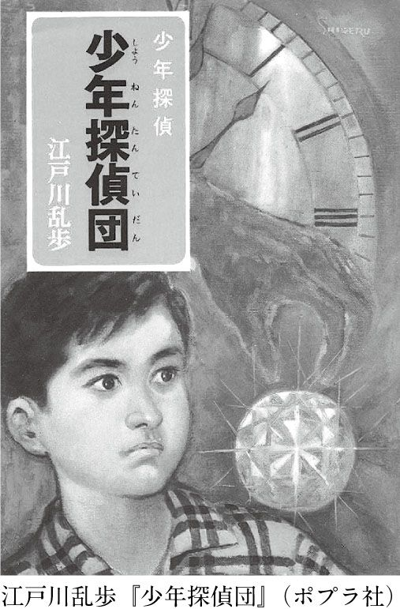

| 読書の腕前 | |
| 岡崎 武志 | |
| (2007) | |
『桟橋で読書する女』（文春文庫）は、タイトルが一発で気に入って求めた本だ。
著者はアメリカの女流作家、Ｍ・グライムズ。同じ文春文庫に『「禍いの荷を負う男」亭の殺人』をはじめ、イギリスのパブをタイトルにつけたシリーズが収録されている（カバーデザインは和田誠）。
ところがこれは単発の作品で、原題は「The End of the Pier」。「桟橋の突端」とでも訳すのか。それじゃあ、手が出ない。「読書する女」とくっついたから読む気になったのだ。これは邦訳がうまかった。
主人公のモード・チャドウィックは、離婚歴のある四十七歳の中年女性。離れて暮らす大学生の息子がいる。「訳者あとがき」を借りれば、アメリカの「ミシシッピー州とアラバマ州の州境あたりにある、湖畔のさびれかけた避暑地」の小さな町が舞台だ。モードは大学で文学を学んだ知性ある女性なのだが、人見知りで、昼間は湖畔にある「レインボー・カフェ」でウェートレスをしている。小説のなかに「あれだけ教育を受けているのにウェートレスとして働いているのが、客たちには不思議」と書かれているとおり、この町にも職場にも、本当を言えば、ちょっと場違いというニュアンスがある。
しかし、彼女には楽しみがあった。つまりそれが「桟橋で読書する女」だ。仕事が終わって夜になると、湖に突き出した遊歩桟橋までテーブルと椅子を持ち出し、コードを引っ張ってきて電気スタンドの灯の下で本を読むのが習慣なのだ。そこでマティーニをつくり、古いアメリカ詩のアンソロジーなどを読む。ウォレス・スティーヴンスの『キーウェストにおける秩序の観念』なんていう硬めの本を手に、難しい詩の意味を理解しようとする。かなり高級な読書だ。
湖を時おり、高速モーターボートが通り過ぎ、桟橋はそのあおりで少し揺れ、湖水が波を伝えてくる。対岸での別荘地では夜ごとパーティが繰り広げられ、風に乗って客たちの笑い声とともに、古いコール・ポーターの曲が流れてくる。
私はここをほとんど陶然となって読んだ。なんとうらやましい境遇だろう、と感じたわけだ。小説の善し悪しは別として、このシーンを味わうためだけに、これからも何度か『桟橋で本を読む女』を再読するだろう。
社会的に見れば、モードは淋しい女だ。友人と呼べるのは、たびたび桟橋を訪れてはモードとたわいない言葉を交わしていく地元の保安官・サムぐらい。彼は妻帯者なのだが、妻のフロレンスはトーストでさえ電子レンジで調理するような、およそ家庭的でない女で、おまけに中古車販売店を経営する男と浮気をしている。サムはそのことを知っているのだ。モードとサムは、いわば淋しい者同士として磁石のように引き合い、夜の桟橋でひとときを共に過ごす。
ただし、モードは自分の境遇を淋しいと思っているわけではなく、愛する息子のことは気がかりだが、それなりに自分の生き方に自足している。そこはわかるのだ。
未来のことを考えれば不安がないわけではないだろう。いつまで一人でいるのか、老後はどうするのか。レストランがつぶれてしまったら......。
しかしいまはとにかく、食べて暮らしているだけの稼ぎがあって、夜は誰にも邪魔されずに、最高の読書環境で好きな本を読んでいられる。来る日も来る日も、変わり映えはしないが、幸福な時間が待っている。今日はどの本を読もう。どこまで読もうか。自分一人で決めて、自分一人で楽しむ。そんな日々が約束されているとしたら、私はなんだか憧れてしまう。
夢というほど途方もないことではない。ある部分を断ち切ってしまえば、誰にでも明日から実現可能な生活だとも言える。なるべくほかのことにわずらわされず、ただ本を読むためだけに生きる。そんな人生もありか、と考えるのだ。
これからはじまるこの本は、「そうだよな、そんな人生もいいな」と思うような人に目がけて書いた。本は情報収集のためのツールとわりきって、なるべく新しい情報が取り込まれた本を、なるべく早く効率よく読もうというタイプの人には向いていないかもしれない。
そうではなく、これからもずっと楽しみとして本を読んでゆきたい、できるだけ読書の時間を多くとりたい、いろんな作家のいろんな本に触れてみたいと考えているような人に、少しは役に立つように書いたつもりだ。読んでいる最中に、無性に別の本が読みたくなる――これが読書について書かれた本としてはベストで、もしそんな気持ちになったら、いつでも途中で放り出して、別の本を読みはじめてくださってけっこうだ。
でも、少し気持ちが落ち着いたら、また戻ってきてください。ちゃんと待っていますから。
長田弘さんに「世界は一冊の本」という詩がある。
「本を読もう。／もっと本を読もう。／もっともっと本を読もう。」
で、この詩ははじまる。そして、途中にこんな一節がある。
本でないものはない。
世界というのは開かれた本で、
その本は見えない言葉で書かれている。
私も、いつだって「もっと本を読もう」、読みたいと考えている。そして、見えない言葉で書かれた世界のことを、少しでもたくさん知りたいと思っている。
釣り、スキー、手芸、将棋、テニス、折り紙等々、人がすることすべて上達というものがある。何度も繰り返し、上手になりたいと願い、学び、そして少しずつ「腕前」が上がるのだ。読書だってまったく同じ。読めば読むほどいろんなことがわかってくるし、前にはわからなかったことが、突然見えてきたりする。若いときに読んで気づかなかったことに、年とって再読したとき、ああそういうことかと気づいたり。
そんなとき、あなたは少しだけ「読書の腕前」が上がっているのだ。
目次
川面に多くの舟が漂っている。私たちはひとりひとりが違う舟に乗って流されている。なかに錨を下ろしている舟がある――
川の流れを時の流れ、舟を人生にたとえると、読書をしている人は、この錨を下ろした舟に乗っている人にたとえたらいいだろうか。そして、本を読んでいる時間とは、動かぬ舟のなかで、川の流れを感じるようなものだ。川は永遠に流れていく。水があるかぎり、流れることをやめようとはしない。そんな悠久の時の流れを、ひととき止めた舟のなかで感じる。本を読むという行為は、そういうものだと私は思っている。
ところが、次のような事態を目の当たりにすると、じつにもったいないと思う。
二〇〇三年七月に『あらすじで読む日本の名著』（楽書館）というタイトルの本が出て、それがけっこう売れたという。第二弾、三弾と続き、『あらすじで読む世界の名著』も生まれ、他社がこれに追従して類書を出し、ちょっとした「あらすじ」ブームが起きた。
同書は、「浮雲」「たけくらべ」「高瀬舟」「風立ちぬ」「斜陽」「金閣寺」など、日本近現代の代表的名作（といっても小説に限る）を、解説を含め各五ページぐらいでダイジェストしている。私立高校の校長と教師が、生徒たちが文学と出会うきっかけになればと、出版社に企画を持ち込んだと聞くが、皮肉なことに、主な読者層は中高生ではなく中高年だったという。「誰もが知っている小説を読んでいない。せめて教養としてあらすじだけでも知っておきたい」。そんなふうに考えるらしい。
なんともったいないことをするんだ！
本を読む楽しさをすっ飛ばして、形骸としての結果だけを得ようとする。人生の辛酸をなめ、頭に白いものが混じろうかという年齢の人たちが、いまさら「風立ちぬ」のあらすじだけを知ってどうしようというのか。そこに感じるのは、とにかくいますぐ答えの得られるものを求めようとする拙速主義だ。マラソンの四十二キロ地点までは車で進み、最後の競技場のトラックだけを走ってゴールインするようなものだ。
佐野眞一『だれが「本」を殺すのか 延長戦PART-2』（プレジデント社）のなかに、著者と評論家の北上次郎との対談があり、そこで北上は「本というのは即効性がない」と語っている。風邪薬などと違い、「非常に効き目が遅い」メディアだと言うのだ。そうだよな。本というのはじわじわ効いてくる。あるいはそのときには気づかなくて、後になって考えると、ちゃんと効果があったんだな、とわかる。または、効き目がなくても、いつのまにか溶けて、静かに体内に吸収されてしまっている。本ってそういうものだろう。
だから、「本というのはもともと不便なもの」だと北上は言う。注目すべき発言である。ところが、現代は「不便」を嫌う。効率や至便性を重んじて、極力「不便」を切り捨ててきた。その点本は、いやでも読む場所を固定し、そこに自分の肉体を釘付けにし、いくばくかの時間を費やさなければならない。「読む」という意志も必要だ。「不便」なことこのうえない。
「そこに便利なものを求めてしまったら、ものの中身が変質してしまうという怖さがあるでしょう」
北上は非常に重要なことを、静かに主張している。
なぜ、そんなに急ぐのか。なぜ、とりあえずの結果や答えを求めようとするのか。仕事の上では、それは大切なことかもしれない。しかし、それは本の役目ではない。「あらすじ」だけ知って事足れりとしたのでは、その本と出会うチャンスを永遠に放棄してしまったことになる。本を読んでいる時間が惜しい？ いや、ほんとうに惜しいのは、読書の時間を失ってしまったことのほうだ。
『だれが「本」を殺すのか 延長戦』で、デザイン評論家の柏木博と対談した佐野は、こんなことを言っている。
「幻想かもしれないけれど、僕は本というものは、時間の流れを一瞬で止めてみせることができるメディアだと思うんです」
われわれは否応なく時間によって動かされている。現代に生きる以上、それから逃れることなどできない。画家のクレーは「人間という動物」を「血でできた時計」と定義した。われわれはまるで、血という電池で動いている時計、なんだと。
読書はそんな時間の流れに逆らう行為である。視覚と脳を通して、読めない人にとっては記号や模様にしかすぎない文字を、速やかに解読し、心と身体になじませていく。こうした奇跡のような行為は、文字通り、時間を忘れて没頭しなければできない。
天体の運行も、この地球上のすべての時計の針も止め、ひとところにじっとして、ただ本のなかを流れる時間だけに身を委ねる。そんな至福の時間を放棄して、「あらすじ」だけで答えを求めて何になるというのだろうか。
読書のメリットとは
なぜ人は本を読むのか。また、読まなければならないのか。
これは難しい問題である。ほんとうはちっとも難しくなんかないのだが、他人に説明するのは難しい。本を読むのを日々の習慣としてきた私にしてみれば、いちいち理屈づけするのが面倒なわけだ。酒を一滴もやらない下戸に、その旨さや、酔いのもたらす功徳を伝えようとするのと同じである。
しかし世の中には、お金と時間を費やすんだったら、その分だけの見返りがないと事をはじめる気にならない、という人も多いだろう。たとえば、英会話教室へ通うなら、時候のあいさつや店員とのやりとりを英語でできるようになるとか、スポーツジムに通うなら、筋肉がついたりダイエットにもなる、といった具合である。しかし読書には、そのような目に見えるメリットは期待できない。じつは、そこにこそ読書のおもしろさがあるのだが、そのことがわかるまでには、かなりの数の本を読む必要がある。
この読書のメリットについては、さまざまな人がさまざまな言葉で語ってきた。そのひとつが、作家の読書論を集めた『読書と私』（文春文庫）である。たとえば各氏はこう書いている。
「書物を読むことで得る大切な収穫のひとつは、他者を知ることだと思います（後略）」（色川武大）。
「読書のたのしみのひとつは、私にとってこの他人の人生を生きること、他人になれる悦びかもしれない」（遠藤周作）。
「読書について、それを基本的にひとつの労作であるとする、ルナンを引いての林達夫の考え方」（に賛成する。全集を読むことで）「僕は本を読む労働のための忍耐力をつちかったのである」（大江健三郎）。
いろいろな言い方があるものだ。読書によって忍耐力をつちかう。なるほど、読書は楽しいばかりじゃない。ときに著者と手を結ぶために、我慢が必要なときもある。しかし、忍耐力をつけるならほかにもっと効果的な方法があるだろう、という気もする。
色川と遠藤は「他者（他人）を知る（になれる）」ことを読書の収穫として挙げている。たしかに、ふつうに生活する人にとって、知ることのできる人間の数は知れたものだ。サービス業に従事している人などは、一日には数十人、数百人もの人間に接客するだろうが、しかしそれは「他人を知る」というほどのことではない。
このように現実の世界では、他人を深く知るのは容易なことではない。いっしょに暮らす家族でさえ、自殺したり犯罪を起こしたりしてはじめて、心中の核心に触れるということもある。仕事場の同僚や友人にしても、どれだけ相手の内実にまで踏み込んで理解しているか、といえば、じつに怪しいものだ。
ところが本には、それが小説にしろノンフィクションにしろ自伝にしろエッセイ集にしろ、著者および登場する人物の生き方や性格、行動様式、考え方などが凝縮して表れている。もちろん「他人を知る」ことにおいて、読書が万能であるというわけではない。本の中身や読み手の理解力が問われるべきなのは言うまでもないだろう。しかし、本を読むことで、他人を知る手がかりは得ることができる。また本は、実生活では知り得ぬ、膨大な人間のモデルを提供してくれる。しかも、相手の忖度を気にせず、思うがまま、自由にそのモデルと触れ合うことができるのだ。
こうして本を読むことで、人間に対する理解力が深まる。世の中にはじつにいろんな人がいるんだなあ、ということが実感できるはずだ。そして、人間はときに単純で、ときにとてつもなく複雑な面を見せる、このポイントを押さえておけば、対人関係においてなにがしか役には立つことはあるだろう。
自分がいかにものを知らないかを確認する
吉田健一は『文学の楽しみ』（河出書房新社）のなかで、文学がいったいなんの役に立つのか、という問いに対して、こう答えている。
文学から得られる楽しみはただそれだけで充分であって、それを他のことに使う気も起こらないという議論が成立する。これは間違いないことであって、人間に与えられた色々な楽しみのなかで文学のように精神の隅々まで行き亘って肉体はただその精神を地上に棲息させる為の道具としか思わせないものは滅多にない。
その点において音楽も文学に及ばない、とも吉田は言う。あまりに文学至上主義なものの考え方で、それでは本を読む理由にならない、との反論も出てくるだろう。それならいたしかたない、少なくともそういう人に文学は向いていないだけだ。
もちろん本＝文学ではないが、私は吉田健一のこの文章を読むたびに感銘を受けるし、本を読み続けていくことへの励みにもなる。
ひとつはっきりしているのは、私の場合、本を読むことによって、自分がいかにものを知らないかを確認できる、ということだ。自分は知らないことだらけだ、ということが本を通してわかる。つまり、知らないことを知ることで、はじめて「それを知らなかったこと」に気づくのである。そして、知らないことを知ることは、つねに気持ちがいい。
数年前になるが、私は誰かに会うたびに「伝書鳩」のことを話題にしていた。自分のなかで、「伝書鳩ブーム」が起きていたのだ。きっかけは『昭和史が面白い』（文春文庫）という、半藤一利をホストに、さまざまなテーマについてゲストと語り合う本のなかでの、森本哲郎の発言だった。かつて有楽町数寄屋橋の袂に朝日新聞社があった頃のことを、同社に勤めていた森本がこんなふうに語ったのだ。
「あのころ、遠くから本社へ連絡するのは全部鳩を使ってたんです。（中略）原稿を入れた筒を鳩の足に付けてパッと話すと数寄屋橋の朝日まで飛んでくるわけです。鳩ファックスだな（笑）」
朝日新聞社の社屋の屋上に塔があり、夕方になると、その塔の上をたくさんの鳩が夕日を浴びて舞っていたという。話しぶりから昭和三十年代初め頃までは、写真や原稿の遠距離輸送に鳩を使っていたようだ。これにはびっくりした。以来、伝書鳩、伝書鳩と口走っているうちに出会ったのが黒岩比佐子『伝書鳩 もうひとつのＩＴ』（文春新書）。私の知りたいことは全部、この本に書いてあった。
同書によれば伝書鳩の起源は古く、紀元前七七六年の第一回古代オリンピックで優勝した選手が、喜びの気持ちを綴った手紙を鳩に託して故郷に送ったという記録がある。その後時代は下って、軍用、つまり戦地での通信用として伝書鳩の利用は発達する。
しかし私が興味を持ったのは、森本の話にあったような新聞社の鳩通信で、そこに話をしぼると、日本では明治の中頃からはじまったという。通信手段のない遠隔地、たとえば離島や山岳地帯で起きた事件や遭難などで、記者が新聞社に原稿や写真を送る方法として伝書鳩が重宝したのだった。
具体的には、事件現場に記者が鳩を五羽くらい連れていく。そして原稿を小さな筒に入れて鳩の足にくくりつける。写真も同様に小さな筒に入れて背負わせたようだ。一羽だけでは無事社にたどり着けるか不安だから、三羽くらいに同じ原稿や写真を託した。
当時、新聞記者は新聞社の窓から空を見上げ、まだかまだかと鳩の現れるのを待ったという。この鳩が数々のスクープをもたらした。昭和二十年代半ば頃までは、盛んに行われていたというから驚きだ。
そんなことを知ったところでどうなるというものでもないが、知る前と知った後では、世界が少し違って見える。天上につながる長い階段があるとしたら、一段上に昇って、その分、下界の見晴らしがよくなった、と言えばいいだろうか。だから、学生時代より中年になったいまのほうが、見晴らしがよくなっただけに、もっと上に昇りたい、もっといろんなことを知りたいという気持ちが強くなっている気がする。
ちゃんとした世界地図ができる以前、自分の住む土地以外のことは、旅人からの伝聞、あるいは想像によってしか知り得なかった。そのうち、コロンブスのような冒険者が航海に出て、見知らぬ大陸を発見する。大海原に漕ぎ出ない者に、未知の大陸を見つけることはかなわない。
この「知る」ことの楽しみを知ってしまったからには、読書をやめろと言われても、いまでは遅すぎる、激しい本の風に巻き込まれたら最後さ（©西城秀樹）。
冗談はさておき、田辺聖子が読書論のアンソロジーのなかで、こんなことを書いているので紹介しよう（『読むことからの出発』講談社現代新書）。
「もし出世と引きかえに何をとるか、ということになったら、それは何か」と、同年代の友人たちの間で、あるとき話題になった。さまざまな意見が飛び出した。いい女房を持つ、硬骨に生きる、世間を捨てて山頭火になる......。
しばらくして、誰かがしみじみと言ったひとことに、みんながうなる。
「出世せんでもええ、毎日読みたい本を読んでたのしく暮らせたらええなあ......」
孤独なんかこわくない
「いまの日本には楽しみがあふれているのに、楽しみ方が下手だ」
谷川俊太郎の『「ん」まであるく』（草思社）というエッセイ集のなかにある言葉だ。
たしかに、余暇というと多くの人が、ゴルフへ行く、家族でディズニーランドへ出かける、ショッピングセンターへ買物に行き、ついでにそこで食事もする、というかたちで時を過ごす。それが悪い、と言うのではない。しかし、あらかじめ用意された場所や装置がないと、時間がつぶせないというのでは、「楽しみ方が下手」と言われても仕方がないだろう。
このことを、もう少し、谷川の文章に沿って考えてみたい。続けて、こんなふうに言う。
「文学、芸術に関する限り、私たちは楽しさよりも先ず、何かしら〈ためになること〉を追うようだ。楽しむための文学を、たとえば中間小説、大衆小説などと呼んで区別するところにも、自らの手で楽しむことを卑小化する傾向が見られはしまいか。感覚の楽しみが精神の豊かさにつながっていないから、楽しさを究極の評価とし得ないのだ」
ここ数年のベストセラーリストを眺めていると、自己啓発本がつねに上位を占めている傾向に気づく。多くの人がいまの自分に満足できず、なにかを変えたがっているようだ。スキルアップを図り、それを仕事に結びつけて出世したい。本もそのために「役立つ」なら読む。そういう気持ちが、リストから透けて見える。
出世を願う気持ちを否定することはできない。しかし、本一冊を読んで、いきなり自己を変革しようというのはあまりに安易だ。そして、なにか「ためになる」ことがないと、本に手を出さない姿勢もいびつだ。それもこれも、「本を読む」ことのほんとうの楽しさを知らないから、いつまでたっても即効性を謳う本ばかりに手を出してしまうのである。本は栄養ドリンクではない。
「楽しむことのできぬ精神はひよわだ。楽しむことを許さない文化は未熟だ。詩や文学を楽しめぬところに、今の私たちの現実生活の楽しみかたの底の浅さも表れていると思う」と、谷川は言う。また「楽しみはもっと孤独なものであろう」とも。
恋人と、あるいは大勢の仲間といっしょに音楽を聴いたり、映画を観たりするのは楽しい。しかし、その瞬間だって、その楽しさを腹の底から感じるのはいつだってひとりの自分なのだ。
いつも誰かといっしょでないと不安で仕方がない、ひとりでいるのはみじめ。だからケータイやメールで他人とつながって生きている。こうして孤独、という言葉を恐れるあまり、自分ひとりで感じることのできる力をないがしろにしたらどうなるか。「ひとりじゃいられない病」にかかってしまい、いつの間にか、伸び切ったゴムのように魂は弛緩してしまうだろう。
「『教養』とはつまるところ『自分ひとりでも時間をつぶせる』ということだ。それは一朝一夕にできることではない。働き蜂たちの最後の闘いは、膨大な時間との孤独な闘いである」
そう書いたのは中島らも（『固いおとうふ』双葉文庫）。「教養」という、うさんくさく実体のない言葉を、なんとうまく表現していることだろう。
「自分ひとりでもうまく時間をつぶせる」人のことを、「孤独な人」とは言わない。なぜなら、その人の時間はきわめて充実しているからだ。私はつまるところ、「孤独」を克服し、たったひとりで自分の内面を深めるのは「読書」以外にない、と考えている。
また谷川は前掲書のなかで、自分だけが感じる「楽しさ」をちゃんと見つめることが「成熟」だと言っている。中島らもの意見と重なるところが大きいことがわかるだろう。
基本的に読書は、ひとりでするものだ。その意味で読書は、「自分が感じる『楽しさ』をちゃんと見つめる」ことにもっとも適した行為だと思う。そして読書を通して、孤独のなかで楽しみを知る能力を鍛えることができる。だからこそ、読書の習慣のある人は、他人の孤独も理解することができるのだ。
孤独なんかこわくない。「読書の楽しみ」を知っている者なら、いつだって胸を張って言えるはずだ。
読書の楽しみを知って、その経験が積み重なり、一つの生活スタイルとして定着すると、自然に何かが変わっていくのではないだろうか。
宮崎駿脚本・プロデュースによるスタジオジブリ作品『耳をすませば』（近藤喜文監督）には、本が好きな中学生の少女が出てくる。名前は月島 雫。彼女が学校の図書館で借りる本の図書カードにはいつも同じ名前がある、というところから物語が発展していく。
雫の父親・靖也の仕事は、市の図書館司書。というわけで、本がたくさん登場するアニメなのだが、宮崎駿は靖也役の声優に思い切った配役をした。なんと、評論家の立花隆に白羽の矢を立てたのだ。もちろん立花には声優の経験などない。どころか、たまにテレビに出ているのを見るかぎり、どう考えても、決められたセリフを器用にこなせるとは思えない。事実、「彼の声優としての才能に関しては賛否両論がある」と、インターネットの事典「ウィキペディア」には書かれてあった。こういう場合「賛否両論」と書かれているなら、「否」の声のほうが強かったと考えていい。もし「賛」の声が強いなら、「多くの賞賛を集めた」と書くからだ。
慣れた俳優や本職の声優を避けて、ずぶの素人を使うことは冒険だったはず。それでも立花隆を起用した理由について宮崎は、うろ覚えだが「司書というたくさんの本を扱う仕事をしている人の役には、たくさん本を読んでいる人を使いたかった」と説明していたと思う。私はそれを聞いたとき、立花の声優としての能力は別にして、「なるほどなあ」と感心した。本をたくさん扱って、読んだ人には、それが特性として声にもなんらかのかたちで表れるだろうと。
実際のところ、声優・立花隆が演じる図書館司書は、私が見るかぎり悪くなかった。なるほど、セリフはやや平板で、ときとして妙な訛りがあるようにも聞こえたが、娘に優しい父親ぶりをリアルに表現できていたと思う。少なくとも、プロの声優にはない味があった。
そこで考えた。本をたくさん読んだ人の「声」というものがもしあるとしたら、それは「顔」にも表れるだろうか、と。
私は、書店から自著へのサインを求められるとき、そこに作家の似顔絵を添えることにしている。そのため、私は作家の顔写真を人一倍数多く目にしている。その経験から言うと、作家はみな、それぞれいい顔なんだな、これが。ここでは男性作家に限るが、俳優やタレントの美醜の基準とは違った、別の基準での「いい顔」が存在することがよくわかる。
たとえば、加藤周一、中村真一郎、福永武彦の三人。いずれも戦後文学を支えた知の巨人たちで、和漢洋といずれの文学にも精通した本読みとしても知られる。三人とも美男子というわけではない。しかし、共通するのは、年を経るにしたがってだんだん風貌に深みが加わっていることだ。とくに加藤周一など、若い頃は鋭い眼光が研いだばかりのナイフのようで、触れれば傷つけられるような禍々しさを感じたが、髪が白くなり、顔のあちこちにしわが刻まれた今は、眼の力はそのままに、いちばんいい顔をしているように見える。たくさん本を読んできた、という履歴が顔に表れているのだ。つけ加えておくが、彼らは若い時分、女性にはモテた。
若い頃「水もしたたるイイ男」としてもてはやされた歌手や俳優が、年をとるにしたがって容姿が崩れていった例はきわめて多い。歳月の積み重ねは、もっとも厳しい批評家だ。自分のルックスにうぬぼれて精進せず、馬齢を重ねただけの男は、歳月によって手痛いしっぺ返しを食らうのだ。
もちろん、本をたくさん読んだからといって、いい顔がつくれるという保証はない。私も責任は取れない。だが「知」の力が、男の顔にある種の魅力を与えることは、古今の読書家たちの顔ぶれを見るかぎり疑いの余地がない。読書の積み重ねによってつちかわれる「品」のようなものが、彼らの顔には表れている。
私なんか、その点まだまだ修業が足りない。還暦を過ぎたあたりで、「おや、若い頃より、なんだかいい顔になったね」――そう言われる日を夢に見て、今夜もベッドで本を開く。
本をどこで読むか、理想の読書空間はあるのか。もし、そんな質問をされれば、とりあえず、そんなものはないと答えておく。よく考えればあるのかもしれないが、そんなことを考えていたら、とても読書なんかできない、という気がするのだ。
私がいちばん多く読書をする場所はどこかと言えば、仕事部屋にある赤いソファかベッドになるだろう。そのほか、パソコンの前で椅子に座っても読むし、リビングのソファでも読む。食事をするテーブルでも読むし、トイレ、風呂のなかでも読む。
外出すれば、駅のホームで電車を待つ間に読む。電車の席が空いていれば座って読むし、空いてなければつり革につかまって読む。待ち合わせの喫茶店では、待ち人が来るまでの間に読む。待ち人が来て、話の途中、彼もしくは彼女が席をはずしたら、たとえ二、三分でも本を開く。その間に、短いエッセイなら一本は読める。
本を読む時間がない、と言う人は多いが、ウソだね。その気になれば、ちょっとした時間のすき間を利用して、いくらでも読めるものなのである。たとえ、それが二分、三分といった細切れ時間であっても、合計すれば一日二十、三十分にはなるはずだ。一ページ一分かかるとしたって、毎日三十ページ近くは読める。土日に少し時間を稼げば、新書程度の分量なら一週間に一冊は読了できる。要は、ほんとうに本が読みたいかどうか、なのだ。
たとえばこんな想像をしてみよう。
王侯貴族の書斎をあてがわれた。ロココ調のデコラティブな装飾に囲まれ、一脚数百万円するような立派な椅子に腰かけて、美女に羽根の団扇で風を送られながら本を読む。窓の外にはイギリス式の庭園。揚雲雀空に舞い、心に憂いはない――
はたして、そんな天国のような状況で本が読めるかというと、たぶん読めないだろうなあ。落ち着かないのだ。
広々とした空間、心地よい空気、腰が沈むような椅子などといった、休息には理想的な環境も、読書にとってふさわしいとはかぎらない。このあたりに、読書という行為の不思議な一面が隠されている。
椅子でいうと、私は図書館や大型書店などに置かれているような、あらかじめ読書のために用意された快適な椅子が苦手だ。だから、そこで本を読んだ記憶がほとんどない。いまでも図書館に行けば新聞や雑誌くらいは読むが、小学校の高学年の頃を除けば図書館で本を読みふけった経験がない。いかにも本を読みそうな場所で、いかにも本を読んでます、というポーズが、どうも気恥ずかしい。集中できないのだ。
そこで思い出されるのが小学校の低学年の頃のこと。当時私の読書における「特等席」は、わが家の部屋の隅、直角になった角とすぐ近くに迫った箪笥の間に空いた、箒を立てかけておくようなわずかなすき間だった。そこにやや身体を縮めて押し込み、目の前で折った膝のてっぺんに本を置いて読む。これなら埃を頭に積もらせながらも何時間だってそうしていられた。
母親がそんな姿を見て「変な子やねえ、よりにもよって、なにもそんな狭い場所で読まんでもええのに」と、よくあきれていたものだ。
窮屈な場所のほうが心が落ち着く。フロイト学者に言わせれば、胎内回帰願望だということになろうか。いずれにしても、伸び伸びと健康的に、というのが私はどうも苦手らしい。
自分の部屋でも、来客にそなえて床に散らばった本や資料を片づけ、すっきりした状態になると、なんとなく落ち着かなくなる。デスクの上は見るも乱雑、コーヒーカップを置く場所を確保するのさえ難儀するぐらいのほうが、心静かに本の世界に没頭できる気がするのだ。
これ、わかりますよね？
わからないかな。
例の仕事部屋にある赤いソファだって、本や雑誌が積み上げられており、ようやく一人が座れるだけの空間しか残されていない。それでもいっこうにかまわない。自分しかいないのだから、一人分のスペースさえあれば十分なのだ。
そんな場所なら、いつ何時でも確保できるはず。それさえあれば読書には困らない。
青山南・文、阿部真理子・絵『眺めたり触ったり』（早川書房）という本がある。「文庫王」を自称する私が言うのも変だが、これはたとえ文庫化されても単行本を持っていたほうがいい本ですよ。阿部真理子のイラストを大胆に各所に配し、ゆったりとした版面で眺めたい本だからだ。
青山南はアメリカ現代小説の翻訳家であり、人気エッセイストでもある。この本はアメリカ文学を中心に、読書に関するありとあらゆる話題が、軽妙な語り口で繰り広げられる。青山の文章はほんと、読みやすいよなあ。とくにこの本は、大好きな本のことがいかにも楽しそうに語られているせいか、風通しがよく読後感がなんともさわやか。窓辺の椅子の横にある本棚から取り出して、後頭部に陽の光を浴びながら、つい何度も読み返してしまう。
この本には人名・書名の索引がついている。しかし、それとは別に、私は勝手に自分で本の扉の裏に、項目の索引をエンピツで書き込んでいる。たとえば、「ダイジェスト」43、「索引読み」47、「解説・あとがき」51、「歩きながら読む」55......というぐあいに。
そして57ページが、「バスの一人掛け椅子の読書」となっている。これだけでは、なんのことかわからないだろう。少し説明する。
これは編集者で評論家の津野海太郎が、本をもっぱら「歩きながら読む」という話から続いている。青山は、「歩きながら読む」ことはしないが、電車やバスのなかで読むのは好きだと言う。そして、次の文章につながる。
とくに、バスの一人掛けの席に座っての読書、あれは最高だ。その席が、運転手のすぐうしろの、つまり最前列の席だったりしたら、うん、もう、この世の天国だよ。バスがきて、とんとんと乗りこんでって、その席があいているのを発見したときの喜び！ あれにかわるものはない。
その席を確保したときは、渋滞も歓迎である。それどころか、待ち望む。すこしでも長い時間その席にすわっていたいと切実におもう。そして、本をながめ、すこしずつ変化する外の風景をながめる。と、幸福感のようなものにだんだんつつまれてくる。
いやはや、さてはや、世の中には同じような人がいるもんだ、と感心してしまった。じつは私もよくバスを利用する。東京・小平市に住んでいた頃は、ＪＲ武蔵小金井駅前から、日立国際電気経由の西武新宿線小平駅前行き。いまは国分寺在住だから、国立駅北口から最寄りのバス停を通る路線に乗る。自宅からだと駅まで散歩がてら歩き、駅前周辺で食事をし、古本屋巡りと買物をし、コーヒーを飲んで、帰りはバスに乗る、というパターンが多い。
その際、まず確保すべきが、私にとって読書の特等席である「一人掛けの席」「最前列」なのだ。ここが空いていると、やっぱりうれしい。また、一人掛けの最前列でも、降り口に近いほうの席（後乗りの場合）と運転席すぐ後ろの席の二つが空いていれば、私も青山と同じく後者を選ぶ。細かいようだが、前者と後者では、新幹線の二人掛け席における窓側と通路側ぐらいの違いがある。新幹線の場合、もちろん窓側がいい。
降り口付近だと、バス停に着くたび、降りる客がすぐ脇を通る。また、両替する客や運転手に行き先を訊ねたりする客などがいて、あれこれ落ち着かない。その点、運転席すぐ後ろの席は、運転席のスペース分だけやや後退しているし、運転席との間に遮蔽板があるため落ち着く。また前輪の上にある分、床より少し高い位置にあるから車窓の見晴らしもいい。この「特等席」によいしょと陣取り、足元に鞄を置き、左手に本、右手の先に車窓とくれば、最高の読書環境ができあがる。車窓にはそれほどひんぱんに目を遣るわけではないが、畑の脇をゴトゴト揺られながら、あるいはカーブにさしかかって、景色がパノラマのように大きく流れ、移り変わっていく醍醐味はバスならではのものである。
ただし「揺れ」があるため、集中力を要するような本は向いていない。田中小実昌は電車のなかで哲学書を読んだというが、私の場合、ウィトゲンシュタインの『論理哲学論考』（野矢茂樹訳 岩波文庫）なんてのはダメだ。軽めのエッセイ、あるいは木山捷平ラインの私小説などは、バスの揺れ、エンジン音や町のざわめき、低速の風景の移動などにうまくハマるのである。
いや、ときどき本気で思うことがあるのですよ。廃車になったバスの「特等席」だけを譲ってもらい仕事部屋に設置しようかと......。深沢七郎は行きつけの理髪店の椅子が気に入って、自室に据えて愛用したという。私も同様に、この「特等席」を前は壁、右手に窓というコーナーを選んで取り付ける。これでいつでも最高の読書空間がわがものとなる。ただし、バスならではの「揺れ」がない。だからときどき、軽い地震でもくれば......。
私がいちばん多く読書をする場所のひとつとして、仕事部屋にあるベッドを挙げた。実際私はこれまで寝床のなかで、ずいぶんたくさんの本を読んできた。最近では、仰向けに寝転がったまま読書ができる器具があるようだが、私の場合、胸に枕を敷いて腹ばいになる姿勢がいちばん多いだろうか。
私は近視と乱視で中学生の頃からメガネをかけている。したがって、寝床でもメガネをかけて本を読む。あたりまえですね。つねにレンズ越しに世の中を眺め、本を読む。ずっとそうしてきた。
しかし、四十歳を過ぎて三、四年経ったあたりだろうか、字がぼやけて見えることに気づいた。最初は、それを目の疲れのせいにしていた。ところが、来る日も来る日も、メガネ越しの文字は、にじんだままで一向にクリアにならない。寝転がっているときばかりではない。座って地図に書かれた番地を読み取るのにも苦労するようになったのだ。これはおかしい。思わずメガネをはずし、目をこすってから地図を見直して驚いた。メガネをはずすと、細かい文字がはっきり見えるのである。
うかつなことに、そのときはじめて気づいたのだ。そして、天啓のごとく、二つのことが同時にわかった。
ひとつは、自分が「老眼」になっていることだ。そういえば、年輩者が新聞や書類などの細かい文字を見るとき、メガネを眉間の上あたりまで上げて（あるいは鼻先まで下げて）、顔を文字に近づけている光景をよく見かける。以前はなにをやっているのかがわからなかった。そうか、あれは老眼なんだ。老眼になると、近視用のメガネを外したほうが、近くのものはよく見えるのだ。
私も近く老眼鏡をつくるつもりだ。谷川俊太郎は、小さなレンズの老眼鏡にヒモをつけて首からぶら下げている。詩を朗読する際に、それをひょいと鼻の頭にのっけるのだが、その仕種がなかなかかっこいい。私は、ずいぶん前から憧れていた。読書のアクセサリーとしてのメガネは、もっと重視されるべきだと思う。
もうひとつわかったことは、寝床で腹ばいになって本を読むときは、起きて椅子に座って読むときより、目と本との距離が近いということだ。椅子に腰かけて、膝の上に本をのせて読むときの目と本の距離は約四十センチ。腹ばいになって、目の前に本を置く場合には、どうもそれより十センチ以上、距離は縮まるみたいだ。だからぼやける。古くなってガタがきた目のレンズは、それ以上はピントを合わせられない。これには困った。寝床で本を読むことを、子どもの頃親から注意されたのには、ちゃんとした理由があったのだ。
不惑をとうに過ぎて、こんなことに惑っているようではどうしようもないが、これは、私の読書生活のなかで、大きな発見であった。本と目との距離関係については、もう少しあれこれ考えたほうがいいかもしれない、と思ったのだ。
寺山修司の考察
そうしたら、おあつらえ向きの文章を見つけた。寺山修司『青蛾館』（文藝春秋）所収の「人間測量」という短い一編。ここに、こんなことそれまで誰も気づかなかったのでは、と思われる、いかにも寺山らしいユニークな考察がある。
目と書物とは、二十センチ位の距離を保っているとコミュニケーションが成り立つが、それ以上近づくとぼやけてしまうし、それ以上遠ざかると、読めなくなってしまう。ロートレアモンの詩もマルクスの論文も、わずか二十センチの距離を保つことによって存在してきたものにすぎないのだ。そう思うと、いささかの虚しさが感じられる。世界中の読書人たちは、書物に向かって全速力で走ることも、書物に肌を密着させることも、書物と壁ごしに語りあうこともできない。
魔の二十センチが、知性というものに「つかず、はなれず」の客観化を吹きこんだのかも知れないのである。
このあと、寺山は映画のスクリーンと目、人間相互の距離について考察を進めるのだが、まずここまででも十分に興味深い（ところで、寺山の言う「二十センチ」は近すぎる。目分量の憶測で書いたのだろうが、私の計測では三十から四十センチがいちばん読みやすい）。
問題にしたいのは、最後の引用部「知性というものに『つかず、はなれず』の客観化」という部分だ。これを私流に解釈すれば、自分の好きな音楽がラジオから流れてきたとき、もっとよく聴こうとラジオに耳をくっつけるまでに近寄ることはあるだろう。そこでは、受けた感動を、距離を縮めることで表している。また、美術館に展示されている絵なら、近寄って筆のタッチや色遣いを確認したり、少し遠ざかって全体の色彩バランスや構図を見たりする。しかし映画の場合は、スクリーンに近づきすぎるとスクリーンの網点が見えてしまうし、そもそも画面全体がわからない。
このようにさまざまなジャンルの表現を享受するなかで、おそらく読書のみが、人種、国籍、男女、老若に関係なく、ほぼ一定の距離を保ちながらの行為となる。このことは、本というメディアを考える上で、大事なテーマを示唆しているように思えてならない。
涙を流すほど感激しても、くだらないと軽蔑しても、その感情の振幅に合わせて、本と自分の目との距離を変えたりはしない。難解な本を読むときも子ども向けの絵本を読むときも事情は同じ。十メートルも離れたり、または字に目がくっつくくらいに近寄ったりしたのでは、本は読めない。対象との物理的距離が変わらない、というのは、読書という行為における短所なのか長所なのか。
私はこれを長所、と考える。感情の振幅により、近寄ったり離れたりするとすれば、それは「精神」のほうだ。誤解を恐れず言えば、「魂」と置き換えてもいい（「脳」とは言いたくない）。
いかなる本であろうと、目との間に一定の距離を保ちながら接し、感情の振幅は精神が距離を案配する。寺山が言う「二十センチ」という侵し難い懸隔も、自分がほんとうにその本に集中し、著者の真意をつかみ、書かれている内容を深く理解したと思えるとき、一挙に縮まったような気分になるものだ。いわば、本と自分が一体化する。
音楽でも美術でも映画でも、人間が生み出した芸術作品には、それを鑑賞するにあたって同様の一体感を味わうことはあるだろう。しかし、自分の目の前で、わが手と連結した対象との一体感を味わえるのは、どうも本しかない。私は、いい本に出会ったとき、本から手を通じて電流が走ったような錯覚を覚えることがある。それを私は「感電した」と呼んでいる。
ことほどさように、「読む」という行為には、考えれば考えるほど、奥深いものが潜んでいる。
「読む」という行為が、「歩く」ことと非常に似通っているのを知ったのは、詩人の長田弘のこんな文章によってだ（『読書のデモクラシー』岩波書店）。
「歩くということは、じぶんがじぶんからぬけだしてきた感じをもって、いろいろなキズナからときはなたれた感じをもって、一人の自由な孤独な人間となって歩くということだ」
この文章の「歩く」を「読む」に置き換えてみたとき、読書の本質をあまりに見事に言い当てていることに驚く。とくに「じぶんがじぶんからぬけだしてきた感じ」という表現には、「感電した」ようなショックを受ける。そう、まさに「読書」ってそういうものなんだ、と。
自尊心や劣等感、出生地や職業、年齢や日々のスケジュール、家族や友人、好きな食べ物や嫌いな歌手など、じつにさまざまな属性をぶらさげて生きている、この「自分」というもの。考え込んだり、ため息をついたり、「自分」というやっかいな気ぐるみを着て、生きているようなものだ。
本を読むときに、これらから完全に自由になれるかというとそうでもない。しかし、物語の時間に慣れて、あるいは著者の思想の渦に呑まれて、本に流れる血液が手を通して自分の体内を流れはじめる頃、まさに「じぶんはじぶんからぬけだして」ゆくのだ。いつの間にかさまざまな属性をぶらさげた「自分」という着ぐるみを足元に脱ぎ捨て、ほんとうの意味で「裸の自分」がそこにいる。夢中になると、裸になっていることさえ気づかない。これこそ、読書の大きな功徳ではないか。
長田はこうも書く。
「歩くことは、あなたが見知らぬ人びとや見知らぬものや自然を見てすぎながら、その人たちやものや自然から、言葉や形や色でもって語りかけられるということだし、つぎに、あなたのほうでもそれらに語りかけないわけにはゆかないということだ」
「日々に歩いて心をひらくことができて、はじめて私たちはいま、ここの中身をほんとうにゆたかに深く複雑なものにすることができるのだ」
いずれも表向きは「歩く」ことを語りながら、読書の本質を言い当てていることがわかるだろう。
「歩く」というのは、ほかの移動手段にくらべればはるかに不便だ。自転車、バイク、自動車、電車、あるいは飛行機......時間と距離の効率において、「歩く」ことは、そのどれにも及ばない。また「ながら」も利かない。音楽を聴きながら、ぐらいはできても、歩きながらの読書や、またノートパソコンを使っての原稿書きもまず無理。折り鶴だってできないだろう。「歩く」ときは、「歩く」ことに集中するしかない。このこともまた、読書と似ているのではないだろうか。
「花の名前のことで忙しい」
「読書」もまた、「ながら」が利かない。食事や音楽なら可能だろうが、映画を観ながら、人と話しながら、泳ぎながら......本を読むことはできない。くり返しになるが、基本的に時間も肉体も束縛される、すこぶる不自由な行為なのだ。
しかし、そこにこそ、「歩く」こと、そして「読書」することの魅力があるのだ。人間、どんなに時間を惜しんで、少しでも早く便利にことを済ませようとしても、たかだか百年の人生である。何億光年という宇宙のスケールに比すれば、瞬きするほどの間も猶予は許されていない。
話を大げさにしすぎた。少しもとに戻そう。
不便な、不自由な時間に没頭することを知っている人間。「じぶんはじぶんからぬけだして」ゆくことを知っている人間。私は、そこに人間としてのある種の品格、読書する者だけにそなわる品格が生まれると信じている。
いくら稼ぎ出すか、つねに時給に換算する人がいる。逆に、ただ本を読むことに没頭して、一文にもならないまま無為に過ぎていく時間の甘美さを知っている人がいる。両者の優劣を問うわけにはいかない。それは生き方の問題だ。しかし、私は割合早い時期に後者を選んでしまった。だからこそ、次のような文章を読むと、時間が経つのを愛おしく思える。
「『やなぎたんぽぽ』属のことで私は多忙をきわめている」
と、これはギッシングの『ヘンリ・ライクロフトの私記』（平井正穂訳 岩波文庫）の一節。イギリスの作家が、二〇世紀初頭に、南イングランドの田園地帯で、散歩と読書に費やす日々を、ライクロフトという初老の男性の手記というかたちで著した自伝的作品である。およそ読書人と呼ばれる人の本棚に、これがないことはありえない。それほど長い間、日本人にも好まれた一冊である。
ところで引用した一節。日課のごとく散歩を欠かさないライクロフトが、なぜ花の名前のことで忙しいのか。
「私は散歩の途中出会うすべての花の一つ一つ名ざして呼べるようになりたい。それも特にそのもの固有の名前で呼んでやりたいのだ」というのがその理由だ。要するに彼は、ただ、花の名を大雑把に「たんぽぽ」と認めて、それで終わるのがイヤなのだ。
「花もその個性を認めてもらうと喜ぶように私には感じられるのだ。ひとつびとつの花にどれほど多くの恩恵を私が負うているかを考えると、せめて私にできることは、一つ一つの花に挨拶するということである」
これは「歩く」者にだけ許された恩恵である。走ったり、他の移動手段を使ったりしたのでは気づくことはできない、ささやかだが確かな実感だ。
「読書」にもまったく同じことが言えると私は考える。印刷された文字を追うことに没頭することでしか気づくことのできないもの。その手ごたえ、おもしろさを知ってしまったら最後、読書の楽しみは一生捨てられやしない。
読書の楽しみを知った者には、しかし試練が与えられる。読みたい本が次から次へと湧いてきて、それを運よく手に入れたとしても、それらすべてが読まれるわけではなく、多くは未読のままに積み重ねられていく。私の場合は、もうとっくにそんな段階は過ぎてしまったが、たいていの人は、その状態に罪悪感を抱くらしい。
買った本を読まずに、そのまま積んでおく状態を、文字通り「ツン読」と呼ぶ。最初に使ったのは誰だかわからないが、うまいことを言ったものだ。
使用例としては......
Ａ「本をたくさん買い込んでも、もっぱら『ツン読』のほうでして（と申し訳なさそうに頭をかく）」
Ｂ「私は買った本を必ず全部読みます。『ツン読』なんて無駄なことはしない。そして読んだ本はすぐ売るようにしています（とエラそうに言う）」
どちらが真の読書人と言えるか。もう少し質問してみないと断言はできないが、私ならＡを選ぶ。Ｂの言うことは一見、もっともらしい。正論に聞こえる。しかし、読書人としては落第だ。
というのも、「買った本を全部読む」ということは、言い換えれば、「ぜんぶ読む本しか買わない」からであり、しかも本は一度読めばそれで用が済むと思っているからだ。おめでたいことこの上ない。
まともに本とつきあって、コクのある読書生活を送ろうと思ったら、「ツン読」は避けられない。と、いうより、それしかありえないのだ。
「ツン読」を恐れて、まともな読書なんぞできやしない。そのことはここではっきり申し上げておく。
読んでいないのなら、それは「死蔵」である。持っていないのと同じ、と思う人もいるかもしれない。ところが、現物があるとないとでは、月と地球ほどの距離の開きがあるのだ。
だいたい「本を買ったら直ぐ読まないと損だ、というような根性は捨てなければいけない」と、清水幾太郎も『本はどう読むか』（講談社現代新書）で言っている。そして「ツン読」についても、「買っておくと、不思議なもので、やがて読むようになるものである。気にかかる本が新しく身辺に置かれるのは、環境に新しい要素が現れることである。私たちの心に新しい刺戟が加えられるということである」と。
「現物がある」強みとは、まさにこのことを言う。私なんかが言うんじゃない。この碩学の社会学者が言うのだから、黙って耳を傾けるだけの値打があると思っていい。
ある本を買おうという意識が働いたとき、最初の段階でその本は浅く読まれている。深く読むのは、もっとあとの話。まずは、本にタッチして、軽くなぜる。あるいは、帯のキャッチコピーを、目次を読む。人とのつきあいにたとえれば、初対面の人の顔を覚えたようなものだ。メガネをかけている、目つきが陰険そう、中肉中背、髪が横分け、鼻が丸い、頬が少し赤い、タレントの○○に似ている......これらは、その人と深くつきあって知りえた情報ではない。でも、人の顔から得る情報は大事でしょう。
本も同じだ。第一印象で、かなりの情報は頭にインプットされる。それなら買わなくてもいいじゃないか、と言われそうだが、残念ながら、人は忘れるものなのですね。劇作家の菊田一夫の名言に「忘却とは忘れ去ることなり」（『君の名は』）がある。だめなんだよ、たいがいは忘れちゃうんだよ。
買う、という行為は、さらにそこから一歩踏み込んで、これも人とのつきあいにたとえれば、好印象を持って、ああ、この人とはこの先もつきあっていきたいな、と思うことを意味する。つまり「買う」のだ。日々二百点近く世に送り出される、そんな本の濁流のなかから、引っ張り上げてきた一冊だ。
それが自分の部屋にある。本棚を見るたびに、目の端に書名が、背表紙が飛び込んでくる。「お兄さん、お見限りね」と手をひらひらさせながら、ときに媚びを売ってくる。ここが大事。濁流に呑まれて、書店のなかへと姿を消した本を意識に上らせることは難しいが、買った本ならいつも自分といっしょにいる。それは「いつかは読まれる本」として、出番を待ちながら待機している。人は、ときにあっさりと知人を見捨てるが、本はけっしてあなたを見捨てない。買ってくれた恩を忘れず、「お見限り」でも、ただ黙って出番を待つばかりだ。
井上ひさしが『本の運命』（文春文庫）のなかで、「ツン読の効用」をこんなふうに説いている。
買ってすぐに読まないでも、机の横に置いておけばいいんです。不思議なことに、ツンドクをしておくと、自然にわかってくるんです。「これ読まなくていいや」とか、「これは急いで読まなきゃいけないな」とか。二日三日経つと「アッこれは読まなくても済むな」という感じが起きる本もあれば、いつまでも残ってて「読め読め、読め読め」といってくる本もあるんですね（笑）
よく見ると、「ツン読」には、ちゃんと「読む」という文字が入っている。現物が部屋にあることで、いつも少しずつ「読まれている」のだ。プロ野球のピッチャーが、投げないまでも、いつもボールをそばに置き、ときどき触ることでその感触を確かめるようなものだ。だから「ツン読」を避けようとする者は、いつまで経っても「読書の腕前」は上がらない。これ、確か。
私は、喫茶店や電車で、バッグのなかの買ったばかりの本に軽く触れる。そうすることで、本の外郭、表情を指に記憶させるのだ。そして、原稿を書くために向かうパソコンの近く、あるいはいつも本を読むソファ、テーブル、ベッドの上にしばらくの間滞留させておく。パソコンの周りにある本棚には、書評用の新刊、仕事の資料など緊急の本などを入れる。それぞれの役目を終えたところで、ようやく書庫のしかるべき場所に移動させるのだ。
手で指紋をつけ、目で指紋をつけ、頭で指紋をつける。そうすることで、記憶のチップを脳髄にめり込ませる。購入した本を、それらの手続きを踏まずに、いきなり書棚に納めてしまうと死蔵と化す確率が高くなる。逆にこうした手続きを踏んだ本は、しばらく存在を忘れていても、一度は自分の関心を引いた本だ、何かの折りに、それは必ずや脳髄の暗闇で光を発する。
たとえば真夜中、調べものをしているときなどに、「ああ、あそこにあんなことを書いた本があったな」ということに気づく。頭のなかに火花が散り、本棚の前に駆け寄る。「そうそう、この本」と手に取って、ぐいぐいと前傾で本に埋没していく。このとき、本が手元になければ、せっかくの火花は消えてしまうのである。なにごともなかったかのように、夜は更け、やがて朝を迎える。
だからかまうことはない。「ツン読」恐れるに足らず。
どんどん、積んどけ。
ファースト・コンタクトが大事
そうして積まれた本のなかから、やがて時は熟して、あるいは気まぐれから、ついに手に取られる本が出てくる。そして、ページは開かれ、読みはじめられる。
ところが、私たちは一冊の本を読む場合、つねにまっさらな状態で向かうわけではない。素手ではなく、なんらかの「武器」を隠し持っているものだ。「武器」が大げさなら、料理を食べる際の「舌の記憶」と言い換えてもいい。
たとえば、内田康夫の人気シリーズ、〝浅見光彦もの〟を読むとき、たとえそれが新作であっても、ファンなら浅見がどういう人物（彼自身は独身のルポライターだが、兄は刑事局長）か熟知しているし、俳優の榎木孝明や水谷豊、辰巳琢郎らが扮した映画や二時間ドラマをすでに観ているはずだ。すぐにイメージが浮かぶ。あるいは、頭のなかで勝手につくり上げた、自分だけの浅見のイメージがある。これこそ小説を読む上での武器になる。形容矛盾を承知で言えば、目をつぶってでも読みすすめられる。いわば通い慣れた小道のようなものだ。目をつぶって口笛を吹きながら進めばいい。
ところが、それがはじめて読む小説の場合はどうだろう。もちろん、いつの時代のどこの国の作家なのか、ベテランか新人か、これまでどんな作品を書いてきたのか、ミステリーなのかロマンスなのか、ストーリーテリングで読ませる作家なのか、描写でじっくり読ませる作家なのか等は、文庫ならカバー裏の紹介文、あるいは巻末の解説、著者紹介であたりをつけることはできる。これだって小説を読む手がかりとなる。
しかし、それでもまだ輪郭はぼんやりとしていて、初対面の人と話すときと事情は同じのはずだ。最初は緊張しておずおずと相手のことを探っていく。このファースト・コンタクトが人づきあいにおいて大切であるように、本を読むこと（ここでは小説と限定）においても大切な儀式だ。事情はまったく同じである。最初の段階で手続きをおざなりにすると、物語のなかになかなか踏み込んでいけない。
高橋源一郎が、「ぼくたちは本を読みながら、自由に、自分の位置を変えていく。自分にしっくりくる姿勢になるまで少しずつ体を動かしていく」（『伊藤比呂美詩集』思潮社、解説）と書いているのはその意味。本というのは万人に開かれた、誰が読んでも寸分違わぬ、同じテキストだが、それを読む段になると、今度はきわめて個人的な体験となる。飛行機を操縦したことのある人間とそうでない人間が、サン＝テグジュペリの『戦う操縦士』（みすず書房）を読んだ場合、両者は違う作品を読んだことになるのだ。
しかし、もちろんすべてのことを体験できる人間はいない。たいていのことは見聞きしたことや、あるいは想像力によって、作者のつくり上げた言葉の世界を、自分流に翻案していく。「自分にしっくりくる姿勢」を探していくわけだ。こうして文章で書くと、たいそうなことのようだけど、これは本を読む際に、誰もがふつうにやっていることなのだ。
同じことを小説家の保坂和志が、「チューニング」というユニークな表現を使って説明している。「チューニング」とは、ふつう楽器などの音の高低を調整することをいい、「調律」と訳す。ギターを弾く人なら説明不要だろう。
「小説には評価のための共通の尺度があるわけではないので、はじめての小説に出会うと、読み手をチューニングする必要がある。そういう小説を読みたい。評論ならチューニングの痕跡の伝わるものを読みたい」
これは「新潮文学賞」の選考委員の言葉として書かれたものだ。小説の新人賞の応募原稿を選考委員が読む。応募者が、どういう人物で、どういうものを書いている人かはまったくわからない。これこそまさしく「はじめての小説」だ。
ここで保坂が言う「チューニング」とは、その作者が築き上げた小説世界のなかに、読み手がうまく波長を合わせながら踏み込み、同調していくということだ。小説を読み慣れている人と読み慣れていない人とではここで差ができる。いろいろなタイプの小説をたくさん読んでいる人は、チューニングにかかる時間が短い。チューニングは一種の技術だから、慣れが必要なのだ。
また自国の小説を読む場合と外国の小説を読む場合も、チューニングの条件は変わってくる。当然、後者のほうが、チューニングは難しい。
「祐介は予備校の門を出ると、富岡と別れＪＲ代々木駅前へ向って歩き出した。途中、吉野家で夕食を済ませ......」という書き出しと、「セルゲイ・ニコラーエヴィッチはネスクーチヌィ公園に人影を見つけた。彼こそ、ヴラジーミル・ペトローヴィッチだった。『やあ』と声をかけ......」という書き出しとでは、頭に映像が浮かぶ力がまるで違う。
読書は著者と読み手の「合奏」
あまりに抽象的すぎるというなら、ひとつうまい例を引こう。
アン・タイラー『パッチワーク・プラネット』（文春文庫）の山田太一の解説を読んでみる。ちなみに山田はアン・タイラーの大ファンで、彼女の小説手法も語り口もよく心得ている読み手だ。
「アン・タイラーには、ベストセラー作家なのに、どこか『私にはこのよさが分かるけど、他の人にはどうかな？』と思わせるところがあるのだ。この本『パッチワーク・プラネット』も、そのあたりがいい味である」と伏線を張っておいて本題に入る。
大晦日のボルティモアの駅から話がはじまる。銀髪の男が、フィラデルフィアへ行く乗客を捜している。
「フィラデルフィア？」と三十代半ばの天使のような女性がこたえてしまう。「行きますよ」
「駅で待つ娘に、これを渡して貰えませんか。パスポートなんです」
郵送用の保護封筒に入っている。いけない、そんなものを受けとってはいけない。関係ない「僕」は気を揉む。密輸品かもしれないじゃないか。
「いいですよ」
彼女はさらりと受けとってしまう。同じフィラデルフィアに向う「僕」は目がはなせない。そして、列車は出発する。
これはもうまるでサスペンス小説で、え？ アン・タイラーだよね、と表紙を確認しそうになるくらいだ。
ところが、これがアン・タイラー風通過儀礼で、なに事も起こらない。フィラデルフィアで女性はなに事もなく「娘」に封筒を渡していなくなる。「僕」はいつもの日常、いつもの関係を生きる他はない。
ほらね、現実はあなたの空想のようにはいきません。そうそう面白いことは起きません。がっかりした？ がっかりした人は、ここで読むのをおやめなさい。パトリシア・コーンウェルを買いなさい。がっかりしなかった人だけ、こっちへいらっしゃい。
山田はなにも起こらなかったことを確認し、「やっぱりアン・タイラーだよ」と安心する。そして、「いよいよアン・タイラーの世界のはじまりである」と書く。
長々と引用したのは、読み慣れた作家の未読の小説を読みはじめるときの読み手の心の動き、チューニングの過程が、ここにじつにうまく説明されているからだ。山田のようにはうまく説明できないが、誰しも最初の数ページは、まだ焦点が合わないまま、あちこち振れながら読み進めていく。だから読みはじめは、できるだけゆっくり読んだほうがいい。朗読するのも一つの手だ。
そして、作者の調律した音と読み手の弦が、やがてぴったりと合致する。いや、合致したという感触などないまま、いつのまにか没入しているのだ。その本を読むことの喜びがようやくこちらの手に渡る。
このあと、いかにうまく演奏するか。それはあなたの腕次第だ。
本を読む、というのはいくらくわしく書いても、どうしても抽象的になる。そこでもう少し具体的な話を。
「本を破る」という見出しは、ちょっとショッキングだが、厳密に言えば「雑誌を破る」だ。私は雑誌を必要なところだけ破って読み、さらに必要なものは保存することにしている。これは〝植草甚一方式〟と言っていい。わが敬愛する読書の達人、植草さんのマネなのだ。
それまで洋モノ専科だった植草が、中間小説誌（「小説新潮」「オール讀物」などを指す）の時評をはじめることになった。あまりに知らない作家が多かったために、「古本屋で集めた一月から八月号までの中間小説誌数種類を破いて、二百編ばかりホチキスでとめ」て読んだ。以後、必要なところだけを破いて、ホチキスでとめて読むのが、植草の雑誌読みのスタイルとなる。
というより、もともとこれは洋雑誌を読むときに実践していた方法の応用なのだ。本文ページを残し、広告ページを破る。広告のイラスト、写真、文字などは余芸ともいうべきコラージュの材料となる。一石二鳥とはこのことだ。
植草の近くにいた津野海太郎は、その破りっぷりをそばで見ていて「平気で、確信をもって雑誌を破る」のに感心している。植草に感化された津野は、雑誌はおろか、本だって破って読むという。
さすがにそこまではマネできない。
ドイツの詩人、ハイネは、野原で本を読んだ。読み終えたページは、破って笹舟のように小川に流したという。桑原武夫『わたしの読書遍歴』（潮出版社）に紹介されていたのだが、詩人らしいエピソードだ。しかし川に流すのはよくないよ。環境破壊につながるおそれがある。
私が破って読むのは、おおむねＡ５判の雑誌。「群像」などの文芸誌、「文藝春秋」などの総合誌、「小説新潮」などの中間小説誌が主だ。そのほか「美術手帖」などもバンバン破って読む。これ、全部残していた日には大変だ。雑誌は場所を取るし保管が難しいのだ。だから必要なところだけ残せばいい。
破るのは特集部分である場合が多い。たいてい雑誌は特集を目当てに買うからだ。作家が亡くなったあとに出される文芸雑誌の追悼特集号などは、心置きなく当該部分だけを破る。
古本の即売会へ行くと、雑誌の連載を毎回保存しておいて、完結したときに綴じて一冊の本みたいに簡易製本したものをよく見かける。しかし、そこまで気合いを入れてやると、ちぎって、保存して、綴じて、製本するという行為で自己完結してしまい、かえって読まなくなるのではないかと案じられる。なにごともやりすぎはよくない。
その点、私の場合はいたって簡単。先に挙げたが「美術手帖」などは半分が広告、そのまた半分が連載記事になっているので、特集部分（たいていはここだけが必要なのだ）だけを残すと、分量はもとの四分の一くらいになる。いま手元にある一九八二年二月号は、「ロシア・アヴァンギャルドのデザイン感覚」という特集の部分だけを表紙はつけたまま残したもので約百ページ。「文藝春秋」（九八年十二月号）の「とっておきの秘話で綴る 平成日本50人のレクイエム」特集部分が約八十ページ。これで、出版社が出しているＰＲ誌程度の厚さ（というか薄さというか）になる。Ａ５判の雑誌は、どうもこの百ページぐらいの分量が、いちばん手になじみ、読みやすいようだ。
文芸誌の作家の追悼特集もだいたいこのやり方で残している。「中村真一郎の遺産」（「新潮」）も、「開高健 追悼特集」（「文學界」）も、「追悼 吉行淳之介」（「群像」）も、「追悼特集 田村隆一」（「すばる」）も、みんなスリムになって本棚に収まっている。
本体全部を残していると、それだけで心理的圧迫になるし、雑誌はけっこう重量があるので手が疲れてしまう。あるとき、エイヤッ！ とまとめて処分したくもなる。それが、自分の手塩をかけたものはなかなか捨てられない。自分が手作業を少し加えて残したことで愛着が湧くからだ。
中身がすぐわかるように、表紙や目次の部分は木工用ボンドで貼り付けて残すといい。背に表紙なりもう一枚紙を貼っておけば、本体の補強にもなる。
本棚へ本を探しに行ったついでに、この自家製版追悼特集を手にとって、立ったままパラパラ読むことがある。誰かの文章に目がとまって、そのままソファへ移動して読みふけることも。
いままた、「文學界」（九七年五月号）の「色川武大と阿佐田哲也・追悼特集」を開いて、インタビューに答えた孝子夫人のこんな発言に目がとまった。
色川と孝子さんは従兄妹同士。「武ちゃん」「たっちゃん」と呼び合い、色川が赤ん坊だった孝子さんのおしめを替えたことがあるというほど年が開いている。まだナルコレプシー（居眠り病）と判明していないとき、病気を抱えている色川を目の前に、孝子さんは「この人はもう二、三年しか生きられない」と思う。
その日、発作が治まった後に、武ちゃんが天婦羅を揚げてくれたんですが、どうしても気になることがありました。手が汚いんです。伸びた爪の中が真っ黒で。それで、「お風呂に入らないの？ 爪も切らないの？」と聞くと、「風呂に入ったり、歯を磨いたりしていたら、それだけで三百六十五日が終わっちゃうんだよ。だいたい、仕事に差し支える。そんなこと気にするまわりの人間がおかしいんだ。爪の垢が隠し味になって料理の美味しさが増すのさ」って（笑）。呆れましたよ。そんな人ははじめてでしたから。この日をきっかけに武ちゃんの世界に引き込まれていくんです。
このとき、孝子さんには婚約者がいたが、まわりの反対を押し切って色川のもとに走る（ちなみに私も「武ちゃん」で、生年月日のうち三月二十八日は色川武大と同じ）。
こういう生の声を聞くと、ほかの作家や評論家が書いている追悼文など、どうでもよくなってしまう。だから、これも永久保存版だ。
ところで、色川武大の最終学歴は東京市立第三中学校中退。『なつかしい芸人たち』（新潮文庫）を読めばわかるが、小学校の頃から「学校をサボって、ランドセルを背負ったまま、朝の六区の興行街をうろついていた」。中学を中退してからは、覚えた麻雀を武器に賭場へ出入りするアウトロー生活がはじまる。ほとんど学校というものへ行っていない。しかし、色川の知識と教養を疑う者など誰もいないだろう。
数年前、某大学の文学部の学生が自分たちでつくっている雑誌のために、私のところへ取材に来たことがある。そのときいろいろな本の話をしたが、彼らが知っているのはいまの流行作家だけで、横光利一や吉行淳之介の名を知らなかった。学歴と本を読むための知識や教養はまったく別であることがこの一件でもわかる。
しかしそれまで知らなかっただけに、いきなりぶつかったときの衝撃は大きい。少なくとも私は、とにかくこの本に度胆を抜かれた。「感動した」という月並みな言い方ではとても及ばない。実際「すごい、すごい」と声に出しながら読んだのだ。
同書の帯に「かくも波瀾に満ちた生涯があろうか」と記されたエリック・ホッファーとは何者か。一九〇二年にニューヨークでドイツ系移民の子として生まれ、哲学者となった後、八三年に八十一歳で亡くなった（立花隆は「二十世紀を代表する哲人（哲学者ではない）」と書いている）。同年にはスタインベック、小林秀雄、中野重治が生まれている。冒頭にも書いたが、生前から著作は翻訳され一部で注目されていたが、まあほとんど日本では無名と言っていいだろう。亡くなって二十年後に、この『自伝』が翻訳され、みんな文字通り引っくり返った。朝日新聞が「天声人語」で取り上げるなどブームとなり、研究本も出る。世の中にはなんともすごい生涯を送った人がいるもんだ、と驚いたわけだ。
簡単に生涯を追うと、エリックが五歳のとき、母親が彼を抱いたまま階段から落ち、それがもとで母親は二年後に死亡、その年、七歳でエリックは視力を失う。これまた不思議なことに十五歳で視力を回復する。それが自伝ではわずか三ページにわたって書かれているだけである。われわれの感覚では、ここまでですでに大事だが、後にまだまだ波瀾が続くため、端折っているわけだ。しかし、記述に悲劇としての悲しみや恨みつらみはまったくない。まるで、七歳でハシカをして、十五歳で中学を卒業する、というような簡略な書き方だ。
そのときも、そしてその後も、彼は正規の教育を受けずに放浪を続け、波止場の労働者となる。その間、まったくの独学で勉強を続け、最初の著書『大衆運動』が、「万人の心の奥底にひそむ政治的情念の世界を鋭くえぐった哲学的アフォリズム集として、バートランド・ラッセル、ハンナ・アーレント、アーサー・シュレジンジャーなどの内外の知識人、アイゼンハワー大統領など現役の政治家の激賞を受けた」（立花隆／『エリック・ホッファー・ブック』作品社所収）。後に大学教授として迎えられ、自伝のオビの文句にある通り「沖仲仕の哲学者」と呼ばれる。
これをすごい話と言わずして、何をすごいと言うのか。日本でならこの自伝は『だからあなたもがんばって』などと名付けられて、たちまちワイドショーネタとなるところだろう。しかし、この本はまったく違う。
母親が亡くなったあと、エリックの世話をするマーサという女性がいるが、彼女が目の見えないエリックに言うには、「将来のことなんか心配することないのよ、エリック。お前の寿命は四十歳までなんだから」。――というのも彼の家系はみな短命で、五十歳以上生きた者はひとりもいない。エリックの父親もエリックが十八歳のとき、五十歳に満たずに亡くなっている。それでもエリックはあれこれ思い悩まず、そのおかげで「私は旅人のように生きることができた」。
かくて十八歳から四十歳近くまで、さまざまな職を転々とし、アメリカ各地を放浪する。農業の手伝い、ホップ摘みや綿摘み、プルーンの収穫、炭鉱、砂金取り、皿洗い、レストランの給仕、エトセトラエトセトラ。その肉体労働の合間に、エリックは図書館へ通って読書をし、数学、化学、物理、地理などの大学の教科書をマスターしていく。目が見えていた五歳までに英語とドイツ語が読めた、というから飛び抜けた頭脳を持っていたことは事実だろうが、正規の教育を受けていない者が、つらい仕事のあとに勉強を続けるということは、想像するよりはるかに困難なはずだ。彼、エリック・ホッファーをエリック・ホッファーたらしめたのは、まさにそこにあると言っていい。
図書館通いの知識人・森銑三
エリックが並外れた知性を持っていたことは、さまざまなエピソードからもうかがい知れる。たとえば、レストランの給仕だった彼は、あるとき、客として来ていた柑橘類の研究者である大学教授がドイツ語の植物学の本を前に呻吟している場面に出くわす。エリックは「なにかお手伝いしましょうか」と声をかけて、ドイツ語の手助けをし、レモンの病気についての解決策を考え出す。驚いた教授に、研究室へ来てくれ、と言われるがエリックは辞退する。放浪生活が性に合っている、ということなのだろう。
また彼は本からだけでなく、日々の労働するなかで、そこで働く人や働くことそのものからも学んでいく。彼が働く現場は社会の最底辺で、働く人々も社会不適応者が多いのだが、彼はそういう「弱者が演じる特異な役割こそが、人類に独自性を与えているのだ」という真理に行き着く。それが以後、信念となる。
『大衆運動』が出版されたとき、彼は四十九歳になっていた。ちょうど現在の私の年齢だ。これはラッセルらの著名人に絶賛されるが、それでもまだ沖仲仕の仕事を続ける。大学で政治学を教えるようになるのは、ようやく彼が六十二歳になってからだった。
このユニークな「自伝」から、人間、ほんとうに勉強したいなら大学へ行かなくてもできるし、また大学を出て会社に入ったら、それで学問は終わり、というわけではないことがわかる。
同じように図書館通いのなかから、「わが道」を見出した人に森銑三がいる。『谷沢永一書評コラム 紙つぶて（全）』（文春文庫）にも幾度となく登場するが、谷沢は森を手短にこう評する。
「森銑三は、明治二十八年、愛知県刈谷市の生まれ。文部省図書館講習所を出ただけで独学一途、公共図書館と蒐集家の私文庫に未見の古書稿本を広く探った在野の碩学である」
森は、井原西鶴の真作は『好色一代男』一作のみと断定し、近世文学の考証学者を驚かせたが、権威主義的な彼らは森を無視することで平静を保った。中央公論社（現・中央公論新社）から全十三巻の著作集が出るほどの学者が、ホッファーと同じく、図書館を研究室として身を立てたのである。
まあエリック・ホッファーや森銑三のような人は特別かもしれないが、彼らの存在が、これから大学で勉強する、あるいは企業で働く若い人たちに、生きるということ、学ぶということの根本姿勢を教えてくれるような気がする。
ホッファーも森も、独学で知識を修得し、師と呼べる人はいなかったが、読書や文学において、導師は意外なところにいる、という話を以下紹介しよう。まずはこの文章から。
「読書などすっかり忘れ捨て、アルコールに狂い、女性を求め、何でもいいから忘れられるような行為に走っていった」
これは、画家として装幀家として幅広い活動を続ける司修の若き日の姿だ。三省堂編集部編『本と私』（三省堂）所収の「なにものかの悪戯によって」には、小学校三年のとき敗戦を迎え、中学を卒業して世に出た司が、「勉強せずに働かなければならないことを悔やみ、はけ口として」不良とつきあい、荒れていた時代のことが語られている。
二十代半ば、絵描きだけでは生活できない司は、桃源社という出版社で、駅売りの新書判小説本の表紙絵を描く仕事にありつく。「毎月、小説の内容にかまわず、数枚の絵を描いて持っていく」と、会計から原稿料の小切手を渡された。会計係の「おばさん」は小切手とともに、桃源社の新刊本を司にくれた。
桃源社は六〇年代から七〇年代にかけて、まだ世間にそれほど知られていなかった澁澤龍彥を中心に、種村季弘ら異端の文学者を世に先駆けて紹介する。黒を基調とした、その魔術的な装幀とともに、後年になっても古本屋の棚で同社の本は別格扱いされていた。その桃源社である。
当時、新刊だった澁澤龍彥『犬狼都市』『黒魔術の手帖』が、司青年の手に渡った。「新書の装画二枚か三枚の稿料が、ぼくの生活を支えていたので、本をもらえるのはとてもうれしかった」という気持ち、同じく貧乏な若者だった私には骨身に沁みてわかる。
また、会計係の「おばさん」は、新刊本をくれるとき「ひとこと、本のことに触れて喋った」。以下、司との会話を引用する。
「『ユリイカ』という雑誌、読んだことある？」
「いいえ」
「古本屋で見つけて読んでごらんなさい。きっと好きになる人がいますよ」
「そうですか」
「稲垣足穂は？」
「知りません」
「きっと好きになりますよ」
なんという「おばさん」だろう。若い絵描きの青年に、文学を教えるのに、古本屋で「ユリイカ」、それも稲垣足穂だ。しびれるような伝道ぶりではないか。私はこの「おばさん」に、勝手に樹木希林のような人をあてはめて読んだ。そして、司は「おばさん」の予言（？）どおり、稲垣足穂を知り、好きになる。
異端文学の牙城であった六〇年代の桃源社。その会計係として勤めていた「おばさん」。後に大江健三郎をはじめ、現代日本文学の最先端の作家の作品を装幀していくことになる若き日の司修。さらに「きっと好きになりますよ」という魔術的なささやき。本を読む喜びは、いつだってこうして、目立たない場所で、ひそかに伝えられる。大声や拡声器は似合わない。読書の薦めは、もともと、岩から沁み出した泉のような行為なのだ。
私の名刺の肩書きには、長らく前から「ライター・書評家」とある。書評家なんて仕事が存在するのか。かつて向井敏という開高健や谷沢永一の盟友ともいうべき書き手がいて、彼こそは書評家と名乗るべき実質を持つ仕事を残した人だ。最近では、「狐」というペンネームで二十年以上も夕刊紙の「日刊ゲンダイ」に書評を書き続けた山村修という人がいる。惜しくも二〇〇六年に五十六歳の若さで亡くなったが、彼も書評家と名乗ってどこからも文句のつかない人だった。
私は現在、新聞や雑誌で月に十本程度の書評と、月に二回、ＴＢＳラジオの「森本毅郎 スタンバイ！」という番組で新刊本の紹介コーナーを担当している。書評家と名乗るには、仕事が少なすぎるかもしれない。ただし締め切りが集中する月半ばには、日に二つ、三つと原稿をこなし、ほとんど読書マシーンと化す。食事中もトイレのなかでも、さらに風呂にまで持ち込んで「この本の読みどころは」などと頭に言葉をめぐらすまでになると、さすがに因果な商売だとため息が出るのである。
ところが原稿を書き終わり、一日の終わりに寝床で何をするかというと、やっぱり本を読む。書評では絶対取り上げられない、昭和初年に出た『結核闘病術』なんて本を開いて、そこでやれやれと安心する。仕事と趣味がいっしょというのは幸せなのか不幸せなのか......。
書評を書いていて難しいと思うのは、まずはなんといっても字数の問題だ。いちばん多いのは四百字詰め原稿用紙で約二枚という分量。朝日新聞の「ベストセラー快読」を筆頭に、新聞社から頼まれるのは、圧倒的にこのタイプ。少し増えて二枚半が「サンデー毎日」の文庫コラム、二枚半から三枚が「インビテーション」（ぴあ）など。たった二百字の違いだと思われるかもしれないが、これが書くほうからすれば大違い。
八百字では、その本が著者にとってどういう本であるかの位置づけ、あらすじ、読みどころ、ポイントとなる個所の引用、締め（着地）を並べるだけで精一杯。たいてい少し長めに書いて、最後はそれを力技で圧縮することになる。それが、たった二、三百字プラスされるだけで事情が変わる。「じつは、先日古い友人から電話がかかってきて......」なんて余計なおしゃべりが挟み込めるのだ。少し遊ぶ余裕ができる。
もっと字数があったら、とはいつも思うことだが、先に紹介した「狐」は、九百字でその本の輪郭から味わいまでをしっかりつかまえて、ここぞという急所を差し出す見事な書評を書き続けた。八百字に不平を言うことは許されない。
もっとも読む側の立場になれば長すぎる書評も困りものだろう。「週刊ダイヤモンド」では、新刊文庫を約八百字で三冊紹介するという離れ技をこなしているが、ため息のようにもれた、わずか四～五行のコメントが、意外に、千字を超える長い書評より「読書意欲」を刺激することがある。逆に、どれだけ書評としてよく書けていても、その本を読みたいという気持ちを起こさせなければ、やはりその書評は失格だ。
朝日新聞の「ベストセラー快読」
以前私は、朝日新聞日曜読書欄の「ベストセラー快読」を担当していた。二〇〇一年四月八日掲載の梅宮アンナ『「みにくいあひるの子」だった私』（講談社）にはじまり、二〇〇六年二月十九日掲載の明橋大二『子育てハッピーアドバイス』（１万年堂出版）まで、六週に一度、丸五年にわたって約四十本の書評を書いた。連載中、「こないだの朝日、読みましたよ」と、よく声をかけられたもので、いかに出版業界における朝日新聞の購読率が高いかが、これでわかった。ほかの書評では、そんなことめったにない。深い森のなかの湖に石を放り込むようなものだ。
「ベストセラー快読」では、当然ながらすでに大量に売れている本を取り上げる。となれば、通常の書評とはスタンスが違ってくる。本を選ぶのは編集部。つまり材料選びは他人で、私はそれを料理するだけ。ここからは活字の級数を落として......、十中八九、自分なら絶対手を伸ばさないような本が多かった。
あとは料理人の腕次第。なぜこんな本が売れてしまうか、身銭を切らせる読みどころはあるかを、包丁の刃元から切っ先、あるいは峰まで使って捌き分ける。塩加減は辛め。つまり、けなすことも自由で、隠し味でピリリとワサビを効かせることもある。だが不思議なことに、辛口に料理しても、書店では紹介した本がちゃんと動くという。ベストセラーを買う人は、本の中身より「話題」を買っているのだろう。
二〇〇一年の大ヒット、スペンサー・ジョンソン『チーズはどこへ消えた？』（門田美鈴訳 扶桑社）のパロディ本、ディーン・リップルウッド『バターはどこへ溶けた？』（道出版）を皮肉まじりに褒めたときは、週刊誌の取材を受けるなどちょっとした騒動になった。元本とパロディ本をめぐって両出版社がケンカとなり、その火付け役が私の書評だとされてしまったのだ。テレビのワイドショーにまでこの話題が取り上げられ、そこでも私が書いた「ベストセラー快読」が紹介される始末。書評がこれだけ注目されることは珍しい。
ここでお断りしておくが、私は何も後発の『バターはどこへ溶けた？』がいい本だと思ったわけではない。どっちにしたって、グリム童話を読んだほうが気が利いていると思えるほどの駄本にすぎない。しかし、そう言ってしまえば、あのコーナーは成り立たない。少し芸を見せてやれと、『バター』のほうが優れている、と書いたわけだが、そんなことができるのも、すでに十分に売れている本を扱う余裕からである。
思う存分、自由に芸を披露するというスタンスを決めたのは連載の第一回めからだ。梅宮アンナの人気絶頂期、テレビ局が後押しし、篠山紀信がカバー写真を撮影するというお膳立てで、「寄ってたかってベストセラーに仕立て」たのが先述の『「みにくいあひるの子」だった私』。売れたとして何の不思議もない。書評の掲載時点で、すでに五刷三十五万部が売れていた。ということは、こちらとしても、ことさら書くことがないのだ。
そこで一計を案じ、徹底して揶揄することにした。梅宮パパの怒りを買った際の報復が怖かったが、どうせ読むわけはないと腹をくくった。後半を引用してみる。
ハーフとして生まれ、少女時代にいじめられたという点は同情に値するが、父親は有名人で裕福な家庭に育ち、母親は美人、自分も美人、成人したお祝いに買ってもらった車はＢＭＷ３２０。それで「みにくいあひるの子」って言われてもなあ......。
どうやら「みにくいあひるの子」は「眠れる森の美女」の言い換えにすぎない。本人は眠っていれば、いつか王子様が助けにきてくれるからだ。
高校進学を拒否しても、二度も高級外車を事故っても、彼が多額な借金を背負っても、すべて「夜の帝王」辰ちゃんパパや周りの人が解決してくれる。
そして、お待たせしました。「あの彼」が最後に登場。本当の意味で彼女をアヒルの子から白鳥に変身させたのは間違いなく羽賀研二である。金の怖さ、人生の厳しさを身をもって教えたのはこの男だけだ。しかし、人生の結末は、皮肉にもアンナの一人勝ちだった。
いま読んでも、よくこれだけ思い切ったことをやったな、と思えるほど底意地の悪い書き方だ。本の紹介というより、その話題についてどう反応するか、というセンスを試されているという気がしていたので、手を尽くして遊びまくった。おかげで書き終わったとき、これまでに味わったことのない爽快感があった。幸い梅宮パパからの抗議もなく、刺客が送り込まれることもなかった。
この書評は好評だったし、私以外の書き手も力のこもった原稿を書いたため、最初二年の約束ではじめた「ベストセラー快読」はその後、三年延長した。担当者はその間、三人代わったが、私を抜擢してくれた文化部のＳさん（才媛）にはいまだに感謝している。この書評のおかげで、ＴＢＳラジオの仕事や「中央公論」での「ベストセラー診察室」（現在は「ベストセラー温故知新」とコラムのタイトルは変更）など仕事の依頼がずいぶんあったのだ。「書評家」と名刺に刷り込んだのも、「ベストセラー快読」以後のことである。
その後も同欄では、村上春樹『村上ラヂオ』（大橋歩・画 新潮社、現在は新潮文庫）、山本有三『米百俵』（新潮文庫）、さだまさし『精霊流し』（幻冬舎、現在は幻冬舎文庫）、齋藤孝『声に出して読みたい日本語』（草思社）など、自分から「書評させてくれ」とは絶対に言わないような本ばかりを、思う存分、皮肉たっぷりの筆致で紹介してきた。『米百俵』は、小泉純一郎前首相が首相在任中の二〇〇一年に、国民へ向けて、「米百俵」の精神で、と引用した原本だった。
お忘れの方のために内容をかいつまんで説明すると、戊辰戦争で大きな打撃を受けた長岡藩に、支藩の三根山藩から百俵の米が送られてきた。しかし、藩の大参事だった小林虎三郎は、これを藩士たちに配ることはせず、米を売った代金を子どもたちの教育のために学校設立の費用に充てた。その学校から、やがて近代日本を背負って立つ人材が輩出されたのである。小泉首相は、自らの政策を成し遂げる上で、「今の痛みに耐えて、明日をよくしよう」というたとえとして、この『米百俵』を引用したのだ。
私は『米百俵』の書評をこう書き出した。
「球威の衰えたベテランピッチャーが、緩いカーブの後に速球で勝負するという手がある。打者の目がごまかされて実際の球速より速く見えるからだ。
国民のアイドルと化した小泉首相が、『米百俵』と言い出したときは、化けの皮がはがれたと思ったものだ。小泉首相誕生が小気味いい速球に見えたのは、結局、森元首相が......以下は言わなくてもわかりますね」
このときも、掲載された直後にある編集者から「岡崎さん、よくぞ言ってくれました。あれは痛快でした」と言われた。
『精霊流し』のときは、お涙ちょうだいの情緒過多な書きっぷりにうんざりして、思いっきりボロクソにけなしたら、担当者から「まあまあ、岡崎さん。気持ちはわかりますが、著者がさだまさしさんですから、どうかお手柔らかに」と注意され、ベルトの穴をいくつか緩めて書き直したことなど、いま切り抜きを読みながら思い出した。
逆に、二〇〇二年の『木更津キャッツアイ』（角川書店、現在は角川文庫）のように、著者のことを知らずに読んでみたら、そのおもしろさ、才能に圧倒され、絶賛しまくったこともあった。著者のクドカンこと宮藤官九郎のその後の活躍は御承知の通り。
「娘の代筆」という趣向
自分でも会心の作と自負するのが、二〇〇五年九月に掲載された『かいけつゾロリの大どろぼう』（ポプラ社）の書評だ。これは原ゆたかという児童文学者が手がけるシリーズもので、本作ですでに三十七作目になる。初版が三十万部というから、最初からすでにベストセラーなのだ。
しかし、書くほうとしては難しい。もちろん、どういうシリーズか、どういう内容かをまじめにおとなしく書くという方法も考えられる。しかし、それでは物足りない。
そこで取った手が、娘が代筆する、というスタイル。じっさい、私の娘はこのシリーズを読んでいた。最初私が書くつもりで彼女にリサーチした際の、その話しぶりを生かして、いかにも小学生の愛読者が書いたという感じにしてみたのだ。
「みなさんおはようございます。わたしは岡崎日向子といいます。小学四年生です。
いつもは父が書いているのですが、かぜをひいて頭と手と足がいたくて書けないというので、わたしがかわりに書くことになりました。書くのに足はかんけいないと思うんだけど」
そんなふうにはじまる。文末には「です」をくり返すことで、わざとたどたどしい感じを出し、またひらがなを多用することで、小学生らしい文章になるよう心がけた。そして最後はこんなふうにしめくくる。
「でも、おまけはさいしょの三十万部だけ、と書いてます。『三十万部って、お父さんの本のなんばいくらい？』と聞きに行ったら、父は『ああ、また熱が出た』といって、ふとんをかぶってしまいました」
悪ふざけギリギリで、ひょっとしたら担当者からクレームがつくかとも思ったが、無事、そのまま掲載された。これはおもしろがってくれた人が多く、「手帳に貼って、何度も読みかえし、そのたびに笑っております」と、わざわざ手紙をくれた友人もいた。してやったり、という感じだ。
しかし一方で、私の娘が書いたと信じ込んでいる人もけっこういた。「娘さん、文章、お上手ですねえ」などと言われてしまうと、なんだかほんとうのことをバラすのが悪い気持ちになってくる。掲載するわけないでしょう、朝日新聞が、書評欄に小学四年生が代筆した文章を。
もう連載は終わってしまったが、私としては、ほかの書評ではできないアイデアや芸を盛り込むことができて、ずいぶん勉強になった仕事だった。
また、ベストセラーの読み方としても、まともに感心して読むだけではなく、ちょっと自分の発想なり、斜めからの視点なりをぶつけることで、違った読み方ができるということを、この仕事から教わった気がする。
その後も「中央公論」でベストセラー本を書評する仕事を続けており、この間とにかくいろいろなベストセラー本を読んできた。結論から言えば、その八割方は読み通すのに苦労し、読んで得たものもほとんどなかった。自分で買うかと言われればとんでもない。よく、みんなこんなものに金を出して、挙句に「感動した」だの「癒された」だの「生きる指針となった」などと言えるよな、とあきれるほどの代物だったのだ。
そんなことを、ある人に話したところ、「でも、たくさんの人が買って読むっていうのは、やはり何らかの意味があるんじゃないですか」と反論された。私は重ねて主張することはしなかった。ただ、世の中にはそんなに好意的にものを見れる人がいるのか、と感心しただけだ。
たとえばこれが、紅茶キノコやナタデココ、ランバダ、ウーパールーパーといった、一時的に火がついてすぐに消えた流行りものについても、その人は同じことを言うだろうか。紅茶キノコにいったいどんな意味が見出せるだろうか。なまじ「本」のかたちをしているだけに、「意味」があると思ってしまうのだろうが、ニンジンやキャベツのように消費されるだけの本だってあるのだ。
廃刊になったいまも名雑誌としてバックナンバーが古本屋で大事にされている「ノーサイド」（文藝春秋）に、「ベストセラー再読」（一九九六年三月号）という特集号がある。巻頭の鼎談で井上ひさし、出久根達郎、坪内祐三の三氏が五十年分のベストセラー一覧表を見ながら語っている。
出久根の「実際のところ私はほとんど読んでいないんですよ。びっくりするほど」の発言に、井上が「僕も全然読んでいませんでした（笑）」と呼応する。と言いつつ、たとえば一九四六（昭和二十一）年のベストセラー一覧を見て驚く。
森正蔵『旋風二十年』（鱒書房）、尾崎秀実『愛情はふる星のごとく』（世界評論社）、永井荷風『腕くらべ』（新生社）、三木清『哲学ノート』（自由新書）、Ｊ ＝ Ｐ・サルトル『嘔吐』（青磁社）、Ｖ・デ・ヴェルデ『完全なる結婚』（ふもと社）、Ａ・ジイド『架空会見記』（鎌倉文庫）、Ｅ・Ｍ・レマルク『凱旋門』（板垣書店）、河上肇『自叙伝』（世界評論社）、「漱石全集」（桜菊書院）。
めちゃくちゃレベルが高い。『愛情はふる星のごとく』などタイトルだけ見れば、いまどきの甘ったるい恋愛小説のようだが、しかしこれは、太平洋戦争直前のゾルゲ事件で処刑されたジャーナリスト、尾崎秀実が獄中から家族に送った書簡をまとめたもので、かなり高尚な内容だ。
もちろん、一九四六年といえば敗戦の翌年で、多くの日本国民が活字や知識に飢えていたという背景があることは無視できない。井上はこう解説する。
「テレビも芸能週刊誌もないし、旅行に行ける時代でもない。ですから当時はあらゆるエネルギーが本に〝ふる星のごとく〟向っていたわけ」
当時、井上の故郷の山形では、田舎の露店市で野菜や餅といっしょに必ず本が売られていたという。
「もはや戦後ではない」と宣言されるのが一九五六（昭和三十一）年。井上は「世の中の意識は昭和三十一年あたりを境に変わっている」と言う。高度成長になると「読者」が「消費者」になり、本を「消耗品」と考える風潮が生まれる、という指摘が興味深い。
それだけ売れるのなら、その本にはなんらかの中身や実質があるのだろうと手を出す人がいて、売上がますます膨れ上がりメガヒット化する。しかし、それは「紅茶キノコ」と同じ、一時の「消耗品」と思い、黙って見過ごせばいい。ほんとうに必要な本なら、いずれまた自分の手に落ちてくる。そう考えて、私は極力ベストセラーには近づかないことにしている。というより、ほかに読む本が多すぎて、そこまで手が回らないのが実情だが。
もちろん、どうしても読みたいという人の前に立ちはだかって、阻止するというほどのことではない。ただ、みんなが読んでいるなら自分も読まなきゃ、という強迫観念は捨てたほうが精神衛生上もいいだろう、と思うだけだ。さらに言えば、ベストセラーリストの上位二十位までは無視して、二十一位から五十位までの間で、自分の興味が持てそうな本を買ってみる、というのも、なにを読めばいいかわからないときの一つの手だと思う。これはあくまで参考意見。
ベストセラーと呼ばれる本が、マスコミで話題になることで売上が増幅し、雪だるま式に部数が膨らんでいくという流れは以前からある。しかし、ここ数年のベストセラーにはとくに顕著な異変があった。
その異変は二〇〇四年から起きたと考えていい。この年の出版業界はどうであったか。片山恭一の純愛小説『世界の中心で、愛をさけぶ』（小学館）が三百万部を超えるミリオンセラーを記録。酒井順子『負け犬の遠吠え』（講談社）は婦人公論文芸賞と講談社エッセイ賞をダブル受賞し、エッセイとしては異例の三十万部を売り上げる。この二作から、その年の「流行語大賞」に「セカチュー」「負け犬」が選ばれた。そもそも「流行語大賞」の選考基準自体があいまいで、なんだかうさん臭い気もするが、それでも本のタイトルから二つも流行語が生まれたことはやはり注目すべきだろう。
振り返れば、養老孟司『バカの壁』（新潮新書）が前年から引き続きベストセラー街道を驀進し、一月には綿矢りさ、金原ひとみの最年少美少女コンビが芥川賞をダブル受賞、受賞作の掲載誌「文藝春秋」は増刷して百万部を突破する。それに加えて『電車男』ブームがあった。この年、ネットから生まれた小説でもエッセイでもないこの本（中野独人著 新潮社）は、テレビドラマに映画にと化け続け、翌年には百万部に達する。
底が抜けてしまった、というのが私の印象。
何の底か。その説明には二〇〇三年に出た永江朗『ベストセラーだけが本である』（筑摩書房）の力を借りたい。
永江はまず「ベストセラーが日本の本を代表しているわけではない。ベストセラー本は年間六万点から七万点近く出ている本のごくごくわずかでしかない。だけどベストセラーは『売られている本』の代表なのである。『読まれている本』の代表なのである。だから、ベストセラーを見れば、日本の出版が見えてくる」と、ベストセラーを定義する。つまり、『ベストセラーだけが本である』は反語的な意味を含みつつ、出版界におけるベストセラーの意義を無視できないものとしているのだ。
また永江は、「すでに知られている本ほど売れやすい」というベストセラーの法則を提示する。芸能人をはじめとする有名人が書いた本、テレビ関連の本はその顕著な例。「無名作家のすぐれた小説よりも有名作家の駄作のほうがたくさん売れる」のも同様で、「クズ本をつかまされて、カネと時間を無駄にする可能性もある。だったら名前を知っている作家の新作を選ぼうと考える。消費者はリスクを回避する」というのだ。
二〇〇四年は七年連続して書籍の売上が前年割れした年だった。二〇〇五年に少し上向きになるのは、先に挙げたメガヒットや「ハリー・ポッター」シリーズ（静山社）の新作邦訳が出たためだ。人々は本に割くお金を年々削るようになっている。趣味や娯楽、食事、あるいは携帯電話の使用料など、使うべき場所はほかにいっぱいある。本は、ごくたまに買うもの、失敗するのはイヤ。永江の表現で言えば、「消費者はリスクを回避する」。結果、「すでに知られている本」を買うわけだ。
しかし、それは本を買うというより、「話題」を買うというほうが近い。ベストセラーはもともとそういうものだ、と言えばそれまでだが、『バカの壁』など最盛期は一日に二回増刷していたなどという話も聞く。売れ方も部数もいささか異常で、ちょっと無気味な気さえする。それを指して「底が抜けた」と言ったわけだ。
ベストセラーはあとから読むとおもしろい
むしろ、ベストセラーはいちばん売れている時は無視して、何年も経ってから読むとおもしろい。もうとっくに熱は冷めて、タイムリーな価値が消費し尽くされたあとで、今度は自分の視点で読み直してみるのだ。あるいはそのバカバカしさを笑い飛ばす。先に、ベストセラーには「意味」がない、と書いたが、しかし、その本が売れた時代の空気は確実に刻印されている。これは、「紅茶キノコ」が、忘れられてもブームになったことで、昭和四十年代末から五十年代初めの狂騒的な「健康志向」があったという証拠になるのと同じ。つまり考古学的な物件というわけだ。
私にベストセラーをあとから読む楽しさを教えてくれたのは、弘田三枝子『絶対やせる ミコのカロリーブック』（集団形星）だ。私の本の読者の方には、「またかよ！」という話だろうが、どうか御辛抱いただきたい。それぐらい、この本は私にとって重要なのだ。
弘田三枝子は一九四七年東京生まれの歌手。コニー・フランシス「ヴァケイション」などを日本語でカバーするなど、和製ポップスでヒットを飛ばす。豊かな声量には定評があり、「パンチの効いた」というのが彼女の歌唱力につけられた枕詞だ。デビュー当時は、ふっくらした顔（というよりまんまる）だったのが、六九年「人形の家」で再デビューを飾ったときは別人のようにスリムになっていた。そのダイエット体験をまとめたのが七〇年に出た『ミコのカロリーブック』だったのだ。
これはその後続々と輩出されるタレントによるダイエット本の嚆矢と呼ぶべき本で、百五十万部を超す大ベストセラーとなる。ところが、皮肉なことに、痩せてきれいになってから、彼女の魅力は薄らぎ、次第に忘れ去られた存在となっていく。『ミコのカロリーブック』も、ベストセラーの末路として市場にダブつき、多くが廃棄処分にされてしまった。そして十年、二十年経ってみると、古本屋でもめったにお目にかかれない希少本となっていたのである。
私はある日そのことに気づき、「タレントのダイエット本の嚆矢」「ベストセラーの末路」という二つの大きな特徴を持ったこの本を、まさに目を皿のようにして探しはじめたのだ。そして約半年後、古本即売会の棚に転がっているのを発見したときは、恥を捨てて飛びついた。
中を開くと、最初の五十ページが、なぜダイエットするようになったか、について書いたエッセイ。写真が随時挟まって、本文の書体は褐色でナール系の活字（丸文字風）が使われている。ダイエットのきっかけは麻疹で入院したとき、見舞い客から「ミコちゃん、ちょっと見ちがえるようにスマートになったわよ」と言われたこと。そのあとアメリカやヨーロッパを旅行した際に、女性の間で「美容のためのダイエット」思想が定着しているのを知って、影響を受ける。帰国後、銀座の洋書店でアメリカの「カロリーブック」を見つけ、この本のカロリー計算を参考に食事制限に入ったというわけだ。
カラーの口絵写真、あきらかに構成者がまとめただろうしゃべり言葉による文章、資料部分（カロリー一覧表）以外はあまりに薄い中身など、タレント本の王道を行く本であることがわかる。
そのほか、出版元の集団形星の社長・鈴木重雄は、もと三田派の作家で、産経新聞の記者から出版事業に転身し『ミコ』でひと山当てるが、妻で女優の望月優子が七一年に参議院選に社会党から出馬、当選するもその選挙費用のために『ミコ』で稼いだ印税を費消してしまった、なんてことがわかってきた。
昔のベストセラーを探して読むのはおもしろいぞ、とこのとき気づいたのである。
ほかには、たとえば一九七三年の大ベストセラー、小松左京『日本沈没』（光文社 カッパ・ノベルス）。出版されたのが第一次オイルショックの年で、トイレットペーパーの買い占め騒動が起き、パニックという言葉が流行する。時代は下って、近頃はガソリンの急騰、恒常化する異常気象、群発する大地震などが続いていることから、いまこそ続編の『日本沈没 第二部』以上に前作がリアルに感じられるはずだ。
同じくカッパの『スパルタ教育』をはじめ、『真実の性教育』『息子をサラリーマンにしない法』などの教育もので七〇年代にベストセラーを連発したのが作家で現・東京都知事の石原慎太郎。とくに『息子をサラリーマンにしない法』は、長男・伸晃と三男・宏高が国会議員、次男の良純がタレントで気象予報士、四男の延啓が画家（だそう）で、四人の息子の全員が見事に「サラリーマンにしない」ことに成功しているいま読むとおもしろい（副題に「わが子よ、オレを越えて行け」とあるが、それだけは無理だろう......）。
一九六三年に発売されるや、テレビドラマ、映画、歌謡曲のメディアミックスで大ヒットを飛ばし、全国の善男善女の紅涙を搾りとった『愛と死をみつめて』（河野実・大島みち子大和書房）。その横に、二〇〇五年に同じくテレビドラマや映画となった『世界の中心で、愛を叫ぶ』を置くと、結局日本人にとって「愛と死」がもたらす「涙」が最大の娯楽であることに気づく。この柳の下には、いくら掘ってもドジョウが出てくるはずだ。
いっそ、ダイエットと難病と愛と死と教育問題とパニックをからめた本を書けば、まずまちがいなくベストセラーになると思うがどうだろうか。
底抜けの読書生活を送っているとまず直面するのが、本の収納の問題。まったくもってこれは悩ましい。だいたい本の収納には妙案も名答もない。あったらこっちが教えてほしいぐらいだ。私など本を買い漁るようになって以来、三十年間のほとんどを増え続ける本と格闘してきたといっていい。とても澄ました顔で、人にアドバイスできる立場にはないのだ。
人ひとり通れるだけのスペースを残して、あとはすべて本棚で埋め尽された我が家の書庫を見た人がたいていもらす感想は、「地震が来たら大変ですね」。
大変ですね、と言いながら、心配するというより半ばおもしろがっている様子がありあり。だから私もまともには答えず、「いやあ、本に埋もれて死ねたら本望ですよ」と答えることにしている。いやだよ、本の下敷きになって死ぬのなんか。
学生時代から、部屋の壁面はすべて本棚。それに取り囲まれるようにして寝床があったから、たしかに阪神大震災並みの地震に遭遇していたら、本と本棚の下敷きになることは避けられなかったろう。
ところが、ほんとうに本棚に押しつぶされて死んだ人がいるのですね。
齋藤愼爾『偏愛的名曲事典』（三一書房）で知ったのが、その男。名をアルカンという。一九世紀、リストを上回るピアノの名手だった。「短調のための練習曲ｏｐ．３９」が有名。音楽界の奇人として名高く、修道士のような生活を送っていた彼は、一八八八年三月二十九日、書斎で神秘学の書物を取ろうとして、倒れてきた書棚の下敷きになった。
こうなると蔵書も命がけだ。
私の場合も年に三千冊以上のペースで本が増え続けている。本の置き場所に困り、地下室つきの新築一軒家を買ったがすでに満杯。まさに本と闘う日々を送っている。
磯田和一絵と文『書斎曼荼羅 本と闘う人々（①・②）』（東京創元社）は、作家、評論家、大学教授など著名人の書斎を探訪したルポだ。しかも、著者はイラストレーターだけあって、本来、写真で紹介するところを、すべて細密なイラストで起こしている。イラストなら、文字を書き込めるし、紹介したい部分だけを抜き出せるなど応用が利く。同様の企画の本はほかにもあるが、本書はイラストを駆使した分、ユニークな仕上がりだ。
ここに登場する人々の本との闘いぶりはすさまじい。
文芸評論家の関口苑生には、本が増えすぎて、やむなく引っ越しする寸前に取材しているのだが、台所にまで本は侵食し、ストーブを置く場所がないため、暖をとるためガスコンロの火をつけっぱなしだというのだ。あぶねえなあ。
ミステリー作家の佐野洋は、九二年に家を建て直すとき、数百万円かけて特注の移動式スチール本棚を書庫に据え付けた。うらやましい。書斎に室内トイレがあり、ふだんは便器を隠すためドアを閉めているが、そのドアさえも本棚になっている。すべては本を収納することを優先させた家づくりなのだ。
本棚一本もない暮らしをしている人にとっては、とても想像がつかない狂気の沙汰だろう。
翻訳家の藤野邦夫は、はるか常識を通り越して、本に埋もれて生きる私でもたじろぐ生活を送っていた。玄関から本棚が並んでいるなどは驚くに足りない。ある、あるという感じ。かなり大きな書庫は、床まで本で埋め尽くされている。これも当然。しかしながら、床の本は、平積みされているのではなく、背を天井に向けるかたちで、縦に差し込むように並んでいるのだ。本棚をでーんと床に倒して、本棚だけ抜いたかたちといえばいいか（イラストだと一目瞭然なのだが、言葉では説明が難しい）。そして、人間はその本でできた床の上を歩く！
これにはまいったなあ。
そのほか、一巻には京極夏彦、大沢在昌、逢坂剛、小池真理子、山田風太郎、菊地信義、阿刀田高などが登場する。なかには、花村萬月、縄田一男など、私が取材で伺ったことのある書斎もある。実際に自分の目で見た光景でも、著者のイラストで再現されると新鮮な気がします。やはりこれは絵の力というものだろう。
本だけではない。著者の絵描きとしての目は、書斎にあるさまざまなものに注がれる。たとえば、二巻でコラムニストの泉麻人の書斎を訪問したときは、氏の保管・蒐集するがらくたともいうべきモノモノモノが書き留められる。なぜかリカちゃん人形、手書き・自作の歌謡ベスト・ノート、子ども時代に集めたワッペンのスクラップ帖、オリンピックのマーク入りセルロイドの石鹸入れ等々。
個人的には、既成のものは本のサイズに合わないからと、自ら本箱、書棚を作ってしまったという漫画家の喜国雅彦に親近感を覚え、本のつきあい方についても参考になった。本のケース（函）がなければ、これも自分でつくってしまう。本そのものはいくらでも手に入るものでも、それが喜国製の函に入れば、一品もののオリジナルだ。
それにしても、本書で紹介されているのは、ほとんどが男性で女性はきわめて少ない。総勢三十六名のうち、女性は村山由佳と小池真理子の二人だけ。もともと女性作家の絶対数が男性と比較して少ないせいもあるが、それを差し引いても、このことは、過剰なモノに囲まれた空間を喜ぶのは「オス」だけという証明にならないか。
自分の愛するモノに囲まれて巣をつくる。本棚は防壁であり、書斎は砦だ。そこでは小さな王国の国王として君臨できる。従者も領民もいない孤塁ながら、何者にも侵されず、本といつも戯れていられる。
ささやかだが確かな、男の夢だ。
毎年三千冊の本が増えていく
そうは言いながら、日々増え続ける本の洪水に溺れないためには、それなりの工夫が必要になる。
私が自分の書斎兼書庫で取材を受けるとき、決まって受ける質問がある。
「買った本はどうなさってるんですか？」
これは、私が古本を年に二千冊、新刊を千冊近く購入、もしくは受贈されることを前提としての質問だ。ふつうならこの一年分、すなわち三千冊を所蔵しているだけでも、蔵書家の名に恥じない量だと言えるだろう。それが来る年も来る年も、わが家を襲ってくるのだ。
だから先の質問にはいつも困ってしまう。どうお答えすればお気に召してもらえるか。質問している内容は同じでも、求めている答えが違う場合があるから戸惑うのだ。取材が進んで、取材者にある程度、私という人間と本を巡る事情とを理解してもらった上なら、また別の答えが考えられるが、わりあい早いうちにこの質問をぶつけられたなら、ほとんどお手上げだ。
考えられる答えはこんなところか。
答１「（やや憮然として）どうなさってるかって......どうもこうもないですよ。ただ溜めていくだけ」
答２「随時、適当に処分しているから問題はないですよ」
答３「いやあ、ほとほと参っていますよ。本に押しつぶされそうな状況で、地震が来たら、本といっしょに心中ですよ。ワハハハハ」
この三つを使い分けるケースが多いが、じつはそれぞれ互いに補完しつつ、本音を表している。どれも少しずつほんとうなのだ。
本棚の新陳代謝をどうはかるか
『「捨てる！」技術』（辰巳渚 宝島社新書）という本がかつてベストセラーになった。ちゃんと中身を読んでいないので、どうこう言えないが、増え続けるモノは処分するしかないというのは簡単な引き算だ。本の収納術も処分する「技術」にかかっている。
もっとも一般的な四六判サイズの単行本を標準に考えてみよう。コクヨのスチール五段の本棚は一列に三十数冊入るから、全部で二百冊弱収まる計算だ。本棚二本で約四百冊。一般の家庭なら、本に割けるスペースはこれくらいが限界か。これでも本をほとんど持っていない人から見れば、「わあ、この家には本がたくさんある」という反応が返ってくるだろう。
本棚一本、もしくは二本、それ以上は増やさない――一般の家庭ではこれが収納術の究極の要諦かもしれない。じっさい、私の知り合いでも本棚二本とはいかないが、たとえば五本以上は増やさないと決めて、新しく本を買ったときは、本棚から買った分の冊数を抜き出して処分するという人がいる。プロ野球で、調子の悪い選手を二軍に落とし、代わりに調子のいい選手を一軍に上げるのと同じだ。そのときどきで、本棚の新陳代謝をはかり、つねにフレッシュで、実力主義の蔵書をつくるわけだ。煮つめに煮つめたフォン・ド・ヴォーと言ってもいい。
作家や研究者の書斎をイラストと文章で探訪した、内澤旬子『センセイの書斎』（幻戯書房）は読んでも眺めても楽しい本だが、なかでも作家の小沢信男の処分術が興味深い。小沢の仕事は、小説、ルポルタージュ、評論、戯曲、詩、俳句と多方面にわたり、さぞ膨大な蔵書かと思いきや、小ぶりの一軒家の一室と、そのほか二階と階段や廊下にある本棚に納まってしまっている。
小沢の処分法はこうだ。
「年に二回くらい古本屋さんに来てもらうそうだが、書斎の棚からすぐに処分するわけではなく、二階や廊下の書棚に段階的に移動させ、少しずつ玉突き状に動かしつつ処分するそうだ。つまり書斎の書棚はそれだけ厳選された本が並んでいることになる」
その書棚のなかでもヒエラルキーがある。今度は小沢自身の言葉。
「上の方はほとんど不動で、神棚みたいなものなんだよね。丸山薫、長谷川四郎、花田清輝、佐多稲子、富士正晴......僕が文章や詩を書きだすきっかけになったり、具体的に教えて下さったりした先輩たち。上から見守ってもらっている感じだね」
「神棚」というのがいい。私ならさしずめ、吉田健一、開高健、植草甚一、小林信彦、丸谷才一、海野弘、川本三郎、荒川洋治などがその「神棚」に納まるべき書き手ということになる。好きな作家となると、この十倍は挙げないと気がすまないが、文章を書く上でなんらかの影響を受け、恩義を感じている人たちだ。
「神棚」の本は不動であるため迷いはないが、そのほかはどれを残し、どれを処分するか。これまた大いに煩悶するところだ。
古書店主から直木賞作家になった出久根達郎さんは、本を処分する際に、読んでいない本を残して、読んだ本を売るのは間違いで、読んだ本こそ残すべきだ、とどこかで書いていた。この意味がわかるだろうか。
つまり一度読んだ本の場合、そこに何が書かれているかを知っている。読後しばらく経って、書いてあったことを再確認するときに既読の本は必要だ、と言うのだ。なるほど。一度読んだ本は読み返さない、という人は別にして、私など本を道具にして仕事をしている人間にとって、この出久根説はよく理解できる。
私の場合は、出版社から書評用や謹呈本として送られてきた新刊書は、まず飛行機の操縦士にとってのコクピットとも言うべきパソコンの周辺に滞留される。原稿を書いたり、書かなかったりした後、興味のないものは、なるべく早くガンガンと手放す。これは文庫になりそうだ、と思えるものも同様。とくに集めているジャンルや、作家別に並べている書き手のものは本棚のしかるべき場所に収め、あとは床に積んだりして、次なる出番を待つ。新刊書のうち、残るのはせいぜい二、三割か。
そうなると、きれいな本、新しい本の上澄みがどんどんすくい取られて、あとに残るのは古本屋で買った古びた本ばかり。全体に本棚の印象がどんどんくすんでいくのは致し方ないことだ。
また、小説とその他のジャンルとを分けた場合、どうしても前者を早く処分してしまう。残すときに考えるのは資料的価値で、小説にそれがないとは言わないが、関心のあるテーマに絡んだエッセイや評論、ノンフィクション、評伝などのほうが、すくう網の目が細かくなる。
これまで何度も蔵書の大量処分を行ってきたが、最後の決め手は「気合い」である。処分のタイミングは「引っ越し」がいちばん多かった。運搬や転居先での収納その他を考えると、どうしても蔵書をスリムにする必要があるからだ。多くの場合は、全体の三分の一に減量、あるときは半分も手放したことがあった。その際に、あれこれ思い悩んだり、執着心が出たりするとうまくいかない。私の例で言うと、美術、音楽、映画、文芸評論などの分野を、それぞれ本棚三本分から五本分ぐらい溜まったところで、目をつぶってそれごと全部売り払ってきた。映画の分野は映画史、作家研究、エッセイの類を相当持っていたが、文庫と新書だけでもひと棚分あったので、映画はこれでよし、と腹をくくって放り出したのである。その後、必要があって処分した本をふたたび買い戻したこともあるが、それで悔やしいとか、もったいないと思ったことはない。つまり「気合い」である。
ほかのことでは「男らしい」部分の微塵もない男だが、本を処分するときだけは、けっこう「男らしい」のではないか、と自分では思っている。あ、いま「男らしい」なんて言い方するといけなかったっけ。
本の寄贈はありがた迷惑のことも
本の処分というと、いくつか方法が考えられる。
一、図書館へ寄付する
二、友人知人にあげる
三、資源ゴミの日に出す（捨てる）
四、古本屋へ売る
燃やす、という手もあるかもしれないが、本は紙の固まりで燃えにくそうだし、カバーが化学物質で加工されているから、ダイオキシン等の発生などの問題もある。まずは燃やさないほうが無難でしょう。
「一」の場合ですが、図書館だって、本の収納には頭を悩ませ、随時廃棄処分にしているぐらいだから、よほどの本でないとありがた迷惑になる。ありがたがられると予想される本は、現在進行形のベストセラー本で、予約待ちの利用者が列をなしているという本。これはいくら複本があってもいいはずだ。しかし、それ以外は、かなり難しいのではないだろうか。図書館によっては、出入口付近に「リサイクルコーナー」を設けているところもあるが、そういう図書館なら、欲しい人がいれば、という前提で引き取りに応じてもらえるかもしれない。ただ基本的に、「わあ、図書館の蔵書がこれで充実してうれしい！」と司書の人が喜ぶことはほとんどない、と考えたほうがいい。
「二」だってけっこう難しい。相手が本好きで、しかも趣味嗜好がよくわかっていて、前から欲しがっている本だったらノープロブレム。それ以外は、かなり慎重に選ばないと、下手をすれば、友達関係を壊すきっかけになりかねない。お菓子だったら食べてしまえばおしまいだが、もらった本はいつまでも残る。読まないでいるとそれが圧力となる。次に会ったとき、「あれ、もう読んだ？」なんて聞かれないかと考えるだけで夜も眠れなくなる（そんなことはないか）。
「三」は、このごろ顕著に増えてきた処分法だ。私の住む地域では、「資源ゴミ」の日にあたる水曜日になると、道端にじつにたくさんの本が捨ててあるのを目にする。いちおう、ちょっと気になってチェックしたりもするが、人目があろうとも持って帰りたくなるほどの本はそうない。私の友人で異常とも言える本好きがいるが、彼は、講談社の講談名作文庫（赤い背）をひと揃い捨ててあるのを発見して、ほくほくともらって帰ったというが、こういう例は稀だろう。
とはいえ、世に「拾い屋さん」という仕事があって、彼らは資源ゴミに出された本や雑誌を古本屋に持ち込んで換金する。それでなんとか生計が立っているぐらいだから、こまめにチェックすれば、そこそこ掘り出し物が拾えるかもしれない。ただし自治体によっては、資源ゴミの持ち帰りを盗難と見なすこともあるから注意すべし。
ただ「三」の場合、以前なら古本屋へ持ち込むところだ。本を知的教養の象徴として神聖化していた時代には、本をまたいだり、踏んだりするだけで親から叱られたりしたものだ。そんな時代には本を捨てるなんて、思いつきもしなかったろう。また家庭から出るゴミも少なかったから、そこに本が出されるとしたら異様な光景に映ったはずだ。
私はできるだけ古本屋へ持ち込んでほしいと考えている。「ブックオフ」をはじめとする新古書店は「いらなくなった本を買い取ります」を前面に押し出してチェーン展開している。古本屋の存在を知らない、あるいは古本屋が本を買い取るということを知らない人が増えているが、新古書店の存在でそれを知った人も多いはずだ。
古本屋というシステムは、いまほど「リサイクル」の精神が行きわたる前からそれを実践してきた。最初に手にした人が不要になったものを、次に必要としている人に手渡す、非常に合理的で完成されたシステムなのだ。
ただし問題は、古本屋は持ち込んだ本をすべて引き取ってくれるわけではない、ということ。私も何度も覚えがあるが、泣く泣く手放すことになった本を、勇気を振り絞って古本屋のカウンターに差し出して、「ああ、うちはいま、こういうのいらないなあ」と断られたときの大きな脱力感と深い屈辱感は、たしかに捨ててくればよかったと思わせるに十分である。また、引き取ってくれることになっても、こちらが希望するより、はるかに安い値段を告げられることもある。
東京都葛飾区堀切で長年古書店を営み、古書の著作も多い青木正美によれば、「古本屋の買い値は売り値の半分、というのを半可通のお客は目安にしているが、実際は四掛け三掛けでもいらない本もあれば、八掛け九掛けでも欲しい本があるのが専門店」と『古本屋五十年』（ちくま文庫）に書いている。もとの定価はほとんど目安にならず、高価な本でもその店にとって不要であれば値がつかず、三〇〇円の文庫でも稀少で探している人が多ければ元値以上の値がつくことだってある。古本と古本屋の業態に関する知識のない人が、売る前に、あれこれ皮算用するのはムダと言っていい。
少し前のものだが、「朝日新聞」（一九九九年五月十二日）に「古本の買い取り価格はどう決まるの？」という企画記事があったので紹介しておく。郊外型の新興大型古書店の代表「ブックオフ」では、「店頭での販売価格」が買い取りの基準となる。最高の値が本体価格の一割で、ただし「まずきれいであること、新しいものであること、あとは在庫の状態です。書名は基本的に見ていません」というから驚く。この網から洩れた本はせいぜい一〇円にしかならない。「古本屋さんへ行こうよ！」とタイトルのつくホームページを開いているＹ氏によれば、「ドラマ化された本は放映中ならすぐ売れるので高く買うが、終るとどっと持ち込まれるので安くなってしまいます」。売るときのコツは「人気のあるうちに／店を見極める／手あかを紙やすりで落とすなどきれいにして持ち込む」というのである。
つけ加えておけば、「ブックオフ」では、あまりに古く、汚れた本は買い取らない場合も多く、客が持ち帰らない場合は店で処分する。問題は、そのなかに、稀にではあるが貴重なものが含まれている可能性があるということだ。
若者の町、東京・吉祥寺にある「古本屋よみた屋」は、売り、買いともに盛んな店だが、店のホームページに「買い取り案内」という項目がある。本を売る客にとって参考になると思われるので、以下紹介してみる。
まず「買い取りできないもの」として挙げられているのが、「十年以上前の辞典・百科事典、通販・訪問販売の全集、数年前のベストセラー、汚れたり破れたりして読めないもの」。「汚れたり破れたりして読めないもの」がダメなのは常識のように思えるが、わざわざ明記しているということは、そういう本を持ち込む客がいかに多いかという証拠だ。
辞典・百科事典、それに各種全集も、出たばかりのものやとくに需要の高いものしか店では売れない。漱石、鴎外、荷風など日本文学を代表する文学者の個人全集は、岩波書店から出て、函入りの立派な本で、まず高く売れて間違いないように思うかもしれない。しかし事実はまったく逆で、函入りの立派な本というのはいまほとんど需要がない。個人全集はかつて、古本屋の看板とも言われ、棚のいちばん上や、店主の背後にあるガラスつきの棚に収められていたが、値崩れがひどく持ち腐れとなっている。手近の即売会目録を見ると、岩波書店の『日本古典文学大系一期・二期』全百二冊が三万円、筑摩書房の『柳田國男全集』全三十六冊が一万二〇〇〇円、昭和四十二年に出た岩波書店『夏目漱石全集』全十八冊が四五〇〇円＋税、中央公論社『谷崎潤一郎全集』全三十冊が五〇〇〇円と、いずれも売値が一冊五〇〇円にもならないのだ。
小澤書店から出た「小沼丹作品集」などのように、なかには店も客も血眼になって探しているものがないではないが、ふつうの家庭に大事に置いてあった二十年前、三十年前の個人文学全集はまず値がつかないと思ったほうがいい。
「古本よみた屋」がおもしろいのは、「おじいさんの本、買いますキャンペーン」と銘打って、逆にこんな本が欲しいとアピールしているところだ。「もし、一九四〇年以前のものがあれば、ためらわずよみた屋に相談してください」と最初にある。一九四〇年とは昭和十五年。たしかに「おじいさん」の時代だ。この時期に出されたものなら、「ビラや美術商の売り立て目録、子供の雑誌など、意外なものが高価になることがあります」と言う。「文学全集や辞典などよりも、趣味の雑誌やパンフレットに人気があります」とも。へたな戦前の本より、そこに挟んであった映画館の粗末な紙に印刷されたパンフレットのほうが高く売れる時代なのである。
古本好きの若い友人・荻原魚雷くんが出したエッセイ集『借家と古本』（コクテイル文庫）に、何度も古本を売りに行った体験から、売るコツを開陳した文章がある（「中央線ぬるま湯生活」）。
たまにいつもとちがう店に古本を売りに行く。
「一五〇〇円でいいですか」
ガッカリ。断る気力もなく「ハイ」。いつもなら五千円くらいになるはずなのになあ、とおもう。これも勉強だ。
古本を売るのはむずかしい。
私は文学関係はＡ書店、歴史や思想書はＢ書店、漫画やサブカルチャー系はＣ書店といったぐあいにジャンルごとに分けて、だいたい二〇～三〇冊ずつ、古本を売りに行く。
こまめに売るのが高く買い取ってもらうコツ。あとその店の本棚になじむ本かどうかを見極めるのもコツ。でも一番いいのは店の人と仲良くなることだとおもう。
すべて実践的で、役立つアドバイスばかりだが、「店の人と仲よくなる」というのは大事なポイントだ。ふだんから古本を買っている店なら、向こうもお得意様として認知しているわけで、そうそう冷たい応対はできない。いい〝おなじみ〟の客になることだ。
また、魚雷くんは続けて、「引っ越しシーズンには売らない」と言う。どういうことか。本の処分にもシーズンがあり、春と秋、つまり入学・卒業、移動の時期に集中する。買い取る側は満杯状態で、うれしい顔がついつい困り顔になる。資金も乏しくなるから、どうしても評価が低くなる。レストランから出てきたばかりの客を相手に弁当を売るようなもので、腹の空いたときを狙わなければいけない。
そうまでして......と面倒に思う人は、本がお金になるとは思わないことだ。一度買って読んだ時点で、すでに元は取っている。資源ゴミとして出しても、本は再資源として紙になるか、焼却処分されてしまうだけだ。なにがしかの金になるなら、それでいいと考えるほうが健康的だ。
先に引用した「朝日新聞」の記事に、出久根達郎の談話がある。
「『売る方には買ったときの思い入れがあるんですよ。でも、買う側とは必ずしも一致しない』。客に買い取り価格が『安い』と言われたら『でも、この本読んで楽しんだでしょう？ それで一〇〇円もうけたらいいじゃない』と言うことにしているそうだ」
さすがは出久根さん。本の持つ価値、読書の要諦をつかんでいる。
以上を参考にして、できるだけ上手に賢く、本を売ってください。
いま古本の世界がおもしろい――
あちこちでそんなことをしゃべったり、文章に書いたりして十年近くになる。学生時代にお金がなくて京都や大阪の古本屋をうろついている頃には、まさか将来、古本について文章を書くようになるとは想像もしなかった。当時は古本について書く人も少なく、地味で閉じられた趣味的な世界だと思われてきたのだ。
それがいまや、しばしば「古本ブーム」と新聞や雑誌に書かれ、テレビの情報番組などでも古本や古本屋を扱う頻度が高くなってきた。おかげで私のようなもの書きにも、ときどきお声がかかる。肩書きとして「古本ライター」なんて、怪しげな呼称をつけられることもあったり......。
なぜ急に、古本や古本屋にスポットライトが当たるようになったのか。いろいろ理由は考えられるが、一つ挙げるとしたら、古本には時代の記憶や匂いがパッケージされていることに、ふつうの人々がようやく気づきはじめたということか。古本を買うことは、時間を遡ってその時代に触れることでもある。古本は手軽なタイムマシーンなのだ。
新刊ラッシュは本の購買層をかえって本から遠ざける。時代の閉塞感が向かわせる回顧趣味と相俟って、後ろを振り向いたら、過去に出た本に紗がかかって魅力的に見えてくる。
また、古本を楽しむことでもう一つ新しい読書体験ができる。たいていの人は、絶版になって書店に出回らない本や自分が生まれる前に出た本に触れることはない。年間二万点の新刊が出ていても、目に触れるのはほんの一部の本でしかない。新刊書が流通するサイクルも昔に比べればとても短く、多くは知られることのないまま時代の流れに埋没していく。
それらを、もう一度再評価して、売価をつけて店頭に並べるのが古本屋の仕事だ。私など、年がら年じゅう古本屋、古本市を回ってしこたま本を目にしているが、それでもまだまだ知らない本、はじめて出会う本がたくさんある。遺跡の発掘調査のように、どこから何が出てくるかわからない。こんな楽しいことはない。
とくに近年、本が売れないことや、リサイクル店のダンピングの影響で、古本全体の値段が下がっている。いまほど古本が安い時代はないだろう。一〇〇円から良書が手に入る。買うのはいま、なのだ。
また、古本屋のスタイルも大きく変化した。以前は専門店と町の古本屋しかなかったところに、いまやチェーン型の新古書店、ネット販売、カフェを併設した店、雑貨店のようなセレクトショップ、それに女性店主の店などが参入し、カラフルかつバラエティに富んでいる。当然、そこにさまざまな価値観が生まれ、従来とは違う視点での古本の掘り起こしがされている。だから、とくに古本に関する知識のない人でも、どこかしら引っかかるポイントがあるはずだ。
とくに、男性中心だった古本の世界に、女性の目が加わったことは大きい。男性が「女子供の本」として看過してきた本や雑誌を、ビジュアルに目の肥えた若い世代の女性たちが再発見するようになった。初期の「暮しの手帖」、保育社カラーブックス、新書館のフォア・レディース・シリーズなどは、男の目で拾えなかったアイテムで、ときに均一台に転がっていた。それがいまやひっぱりだこの人気だ。これら「乙女系」の古書店は、ネットで販売しているケースが多く、パソコンで簡単に情報を入手できるのも、いまの若い人たちを古本の世界に近づけることに一役買っている。
しかし、仕入れた情報を教科書にして、そのエリアからはみださないのが、私のような昔から古本まみれのおっさんには不満なところ。もっと自分の目を使って、本を選び出してほしいと思うのだ。
古本を楽しむには、柔軟な脳を持つことが大事なのだ。既成の価値観に縛られ、すでに評価の決まったものだけを追いかけているのでは、新鮮な発見はない。いかにたくさんの「おもしろがり方」を持っているかで、死んだ本がよみがえる。自分で古本をいまに生き返らせる、その喜びを知ってしまったら、たやすく抜け出せる世界ではない。
つべこべ言ってないで、私がいったいどんな古本を買っているかを紹介しよう。あれを買った、これを買ったと書き出すと、それだけで一冊が埋まってしまうので、昨年（二〇〇六年）八月に、京都の下鴨神社で催された「古本まつり」で買った本に限定しておく。
これは下鴨神社の「糺の森」と呼ばれる、両脇に鬱蒼と樹木が繁る神社の参道で、毎年開かれる露店の古本市だ。京都ではほかにも、春の「みやこメッセ」、秋の「知恩寺」（知恩院にあらず）で同様の「古本まつり」が開催されている。われわれ古本好きはこの三つを「京都三大祭り」と勝手に呼んでいる。
なによりも露店とあって開放感があり、夜店で金魚すくいをしたり綿菓子を買ったりする感覚で、古本を自由に見て回れる点がいい。古本屋回りはたいてい独りだが、この「古本まつり」では、家族連れや若いカップル、本好きのグループが多いのも特徴だ。
会期は一週間。週の後半になると、あちこちで値下げがはじまるのも狙い目だ。一冊一冊の値札を書き換えることはないが、三冊一〇〇〇円コーナーが三冊五〇〇円になったり、三冊五〇〇円が一冊一〇〇円になったり、最後は、袋一杯でいくら、といったことをはじめる店まで出てくる。どの店も、なるべく店に本を持ち帰りたくないから、売り切ろうとするわけだ。
こういった大型の古本市を見てまわるにはコツがある。なにしろウン十万冊がひしめく会場だ。一店舗ずつ並んだ本を端からすべて真剣に見ていくと失神してしまう。最初は、三冊五〇〇円（このパターンが多い）、一冊一〇〇円といった均一コーナーだけをざっと見てまわって、目と身体を古本に慣れさせたほうがいい。均一といってもバカにはできない。店で長らく売れなかった本を、こういう機会に思い切って処分価格で放出するから、けっこういい本が拾えるのだ。
私は上限を一〇〇〇円と決めて、次に五〇〇円クラスの価格帯を一つの目安に会場を歩いた。結果は、ほとんどが二〇〇円以下。それで二十三冊買った。
巖谷國士『ヨーロッパ夢の町を歩く』（筑摩書房）は、ヨーロッパの都市を探訪した紀行文集だが、夢に現れた町を現実の町になぞらえて、あるいは現実の町を夢見心地で歩くような書き方がされている。中公文庫版をすでに持っていたが、持ち重りのする元の単行本を手にすると、やはり欲しくなった。こういうことはよくある。二〇〇円。
今江祥智『幸福の擁護』（みすず書房）は、児童文学についての文章と、著者の交遊録などが収められている。古本市でも、ほとんどの本は棚差ししてあるので、最初に目がいくのはカバーの背だ。みすず書房の本の装幀は、真っ白な地に、明朝体でタイトルと著者名を入れただけのシンプルなものが多い。あの手この手を使ったさまざまな装幀の本を目にしていくと、逆にこういった白い本に目がとまる。みすず書房の本は値段が張る。これも定価が二九八七円と、ほとんど三〇〇〇円近い。よほど好きな作家や興味のあるテーマの本でないと、おいそれとは新刊書店で買えない。今江祥智は児童文学の世界では好きな書き手で、すでに小説やエッセイ集を何冊も持っているが、これは美本で二〇〇円とくれば躊躇なく〝買い〟だ。
内田繁・文、稲越功一・写真『椅子の時代』（光文社）は一九八八年の刊。コルビュジェ、ロッシ、イームズ、スタルク、マッキントッシュなど世界的な建築家、デザイナーによる椅子を一脚ずつ写真に撮り、内田が解説を加えた本。これはなんといっても稲越のカラー写真がきれい。以前も持っていたが、人にあげたか、売ってしまったかで手元にない。それでまた、ということになった。二〇〇円は安い。
昔の児童書が人気
クリスティー『ＡＢＣ怪事件』（あかね書房）は、少年少女世界推理文学全集の一冊。七〇年代の前半に出たシリーズで、装幀と挿絵に、たとえば和田誠、横尾忠則、真鍋博など注目すべき人たちが起用されているから要注意。この『ＡＢＣ怪事件』は駒崎晶子。全部そろえたくなるシリーズだ。函なしで二〇〇円。
『鉄道の発達物語』は、六〇年に出た「四年の学習」（学研）の付録。薄い本だが、絵と写真をたくさん使って鉄道の歴史をていねいに追っている。古い紙の質感といい、印刷があまりよくないのがかえって郷愁を誘う。私は「駄菓子本」と呼んでいる。二〇〇円。
五九年に出たこれも児童書のウエルズ『宇宙戦争』（偕成社）。カバーと口絵のイラストが小松崎茂というだけで買った。二〇〇円。
同じく、谷川俊太郎他『こどもの世界童話館』（サンケイ出版）も挿絵が魅力。谷川俊太郎はじめ、児童文学者と一般公募による創作童話に、和田誠、宇野亜喜良、長新太、長谷川集平、上野紀子などが挿絵を描いている。二〇〇円。こういった過去に出された児童書が、挿絵の魅力も含めて、いま人気商品となっている。扱う店も増えてきた。子どものためというより、大人が昔、学校の図書室で読んだ本を懐かしんで、あるいはひいきの画家、イラストレーターのコレクターズアイテムとして購入するのである。
豊島豊次郎『趣味の醫學』（寶文館）は一九二六（大正十五）年の刊。二〇〇円（八十年以上前に出た函つきの本がこの値段で買えるのだ）。私が蒐集する一九二〇年代本で、この時期に出た本は「犬の飼い方」であろうが「玉突き術」であろうが、一応手に取ることにしている。著者には医学博士の肩書きがついており、中身は家庭医学一般の解説書なのだが、タイトルがすごい。趣味で医学をやられてはたまらない。函と本体の背には、パイプをくわえたカエルのイラストが入っていて、お気楽ムードが横溢している。書きっぷりも、このころ流行った「漫文」というスタイル。医学的に「おなら」を論じた一章など「屁を観よ！ おならを観よ！ 其一味毒瓦斯が、腸から血液内に吸はれ、體内を荒れまはるを餘所に、血に哭く一聲をこの世の名殘り、跡方もなく消えて行く」といった調子。いま、医学博士がこんな医学書を書いたら信用をなくすこと請け合いだ。
篠山紀信『紀信快談』（朝日新聞社）は七六年に出た対談集。大御所の土門拳をはじめ、横尾忠則、赤塚不二夫、東松照明、関根恵子、金井美恵子、小沢昭一などが登場。七〇年代、カメラ小僧シノヤマが時代の寵児であったことが、この対談集からわかる。装幀とイラストは和田誠。和田が装幀をした対談集はだいたい買うようにしている。二〇〇円。
地方ならではの掘り出し物
臼井喜之介『詩集 童説』（臼井書房）は一九四六年の本だが、出版社名と著者名が同じであることでわかるように、臼井書房は京都大学北門前にあった出版社で、臼井はその社主にして京都詩壇で有力な詩人だった。同社からは吉井勇の歌集や、三好達治、城左門など多くの詩集が出ている。この『詩集 童説』はボール紙に和紙を貼ったような簡素な装幀で、百ページ足らずの薄い本。見返しに著者の筆文字による署名があった。これを勘定場へ持っていったところ、キクオ書店のご主人から「ええのを掘り出しはった。なかなか目が高い」とお褒めに与った。こういう本が出てくるのも地の利である。私は「ご当地本」と呼んでいる。
東京には日本の古書の集積所として、全国の地方で出た出版物が流れ込むが、それでもまだ、地方には地方の匂い、味というものが存在するものなのである。旅先で入った古書店、古本市などで、その味に触れ、地方の匂いのする本を買うと、うまくもない饅頭よりよほど思い出深いお土産になる。
ほかに、ほるぷ出版の名著復刻シリーズの泉鏡花『日本橋』を買う。小村雪岱装幀の美術品のような美しい本として知られる。一九一四年刊の原本だと、某所で三五万円の値がついていた。この名著復刻シリーズは原本になるべく忠実に再現しているから、所持して楽しむならこれで十分。それでもふつうは二〇〇〇円以上ついているが、ここでは二〇〇円。
以上、すべて二〇〇円。十冊買っても二〇〇〇円。なんとも安上がりな楽しみではないか。
そのほか、杉本秀太郎『伊東静雄』（筑摩書房）が署名入りで五〇〇円。杉本は京都在住の評論家・エッセイストだから、これもご当地本。
一〇〇円均一コーナーでは、笑福亭鶴光『お子さまランチ』（ペップ出版）、「宝島」（一九七六年八月号）、金田正一『やったるで！』（報知新聞社）などを買う。『お子さまランチ』はラジオの深夜放送をベースにしたもの、『やったるで！』は不世出のサウスポー、金ヤンの自伝で、どちらもよく売れた本のはずだが、粗略に扱われ、古本屋からも評価されないために、後になっていざ探すとなると難しい。
文庫など一部省略したが、見渡してみると児童書から文芸書、対談集にスポーツ、芸能、椅子のデザイン論の本まで、よく言えば幅が広く、悪く言えば節操がなく、めちゃくちゃな買い方だ。しかし、一見脈略がないように思えても、私のなかではそれなりの筋や系統はある。また古本を買うことで、その枝葉を広げようともしている。自分にどれだけの許容量があるか、試す場でもあるのだ。
しかも御覧のとおり、古本は安い。もちろん上を見ればキリがないほど高い本もある。しかし、「格差社会」ではないが、本章の冒頭に書いたように、その気になればいま古本はいくらでも安く買えるということをぜひ知っていただきたい。
そんなふうに書けば、なんだか年柄年中、地方の古本屋回りをしているようだが、実際のところはそうはいかない。やはり基本となる〝漁場〟は、神保町の古書店街、それに中央線沿線に点在する古本屋、それに各種古書即売会が中心となる。
加えて、ほぼ日課となっているのが、近所の新古書店回りだ。散歩がてら、と言っても周辺数キロの圏内にある、新古書店チェーン店「ブックオフ」を自転車やクルマで回っている。立川砂川、立川栄、国立駅前、一ツ橋学園駅前、花小金井、東久留米、東村山。ひんぱんにのぞくのが国立駅前店と立川栄店。あとは一週間に一度、一カ月に一度、と頻度が変わる。これを「パトロール」と称している。何かわが町に変化はないか、と巡回するわけである。
古書愛好家向けの雑誌「彷書月刊」のホームページからはじまり、その後ブログに移行し、もう五年以上古本購入日誌を書いているが、あんまりひんぱんに「ブックオフ」と書くので、次第に面倒くさくなり、そのうち「ブ」とだけ表記するようになった。それでちゃんと通じるのである。この「ブ」の表記はヒットして、まわりの友人も隠語として使うようになり、いまでは定着している。
「こないだ『ブ』でさあ」
「近頃『ブ』もだめだなあ」
......知らない人が聞くと、なんの会話だかわからない。
ブックオフは全国に六百店以上を展開し、国外でもニューヨーク、ロサンゼルス、ハワイ、パリにも支店を出している。この新古書店の功罪について、少し触れておくべきかとも思うが、いまは措く。あくまで、私がどんなふうに利用しているかを記しておきたい。
前章の新聞記事でも触れたように、ブックオフで扱う本は、「見た目にきれい」が最優先され、新刊でもカバーのないもの、汚れたり、表紙が折れたりしたものは排除される。当然ながら、いかに値打ちのある貴重な本でも、古く汚れていれば却下となるのだ。かくして、古くて汚れた良書がどんどん処分されていくわけで、その点は問題だ。だから「ブ」で買い取りを断られた本でも、いちおう持ち帰って、いくつか一般の古本屋へ打診してみたほうがいい。意外な高値がつくかもしれないからだ。
しかし、それまで岩波など一部の文庫しか相手にしなかった町の古本屋に対して、とにかくきれいであれば文庫大歓迎、という応対をしたことで、こと文庫に関しては、古本業界では革命を起こしたと言ってもいい。なにより、古本屋という存在（とくに本を売ることもできる機能）を知らしめた点は賞賛されてしかるべきだろう。
私の場合もまず回るのは文庫の棚だ。半額のコーナーは無視。とにかく一〇〇円（総額表示では一〇五円）の棚からいかに拾うかが腕の見せどころ。一般の古本屋でも絶版、品切れ以外はだいたい半額。わざわざ「ブ」で探すメリットは少ない。
いま書店でもらったばかりの最新版『角川文庫解説目録 二〇〇六年』を眺めていたら、私の愛読しているミステリー作家、ジェイムズ・リー・バークの刑事ロビショー・シリーズ八点のうち、もう七点が品切れになっている。残ったのは『燃える天使』のみ。角川書店には申し訳ないが、私はこれらすべてを「ブ」で買った。だから、品切れに気づかなかったのだ。これから読もうと思う人も、『燃える天使』以前の作、たとえば映画化もされた傑作『天国の囚人』は、新刊書店ではすでに入手不可だ。しかし半額コーナーも含め、数軒の「ブ」をたんねんに探せば、わりあい容易に見つかるだろう。
この十年、二十年の間に出た文庫で、いまや品切れとなったものを探すとき、「ブ」は大いなる力を発揮する。
いま手元にあるから『角川文庫解説目録』をネタに話をするが、八〇年代後半、書店の文庫棚を目が染まるほど朱色に彩った片岡義男の諸作も、最新目録に残るのは『スローなブギにしてくれ』のみ。他の『道順は彼女に訊く』『東京青年』『日本語の外へ』、そして短編セレクションは、いずれもブームのあとに出されたものだ。しかも背の色はもはや朱ではない。『ぼくはプレスリーが大好き』も『スターダスト・ハイウェイ』も『ロンサム・カウボーイ』も『マーマレードの朝』も、読もうと思えば古本屋を探すしかない。
ところが古本屋では、一時期パンのように売れた片岡義男の文庫を、あまりに売れたがゆえに大事にしてこなかった。だから、いまとなっては意外に探すのが難しい。ところが、これも「ブ」へ行けば、たちまち一〇〇円の棚で十冊、二十冊と見つかるはずだ。
私の場合、毎年出される各社の文庫解説目録を必ず入手し、前年のものと書目を比較している。いま何が品切れとなっているか、逐一頭に叩き込むのである。その頭を抱えたまま、「ブ」の一〇〇円文庫の棚になだれ込む。そして品切れ本をどんどんピックアップしていく。もちろん買うのは、読みたい本で持っていないもの、という条件下ではあるが、ときには持っていても買うことがある。なにしろ一〇〇円だから懐の痛みは少ない。三十分かけて十冊拾っても一〇〇〇円だ。いまパチンコ屋で、一〇〇〇円で三十分もたせるのは難しいだろう。ダブって買った分は人にあげてもいい。ツボにはまれば、元が一〇〇円とは思えぬほど感謝される。
狙い目は歴史、人物、旅行の棚
ちなみにこの半月ほどで、私が「ブ」で拾いあげた品切れ文庫のみを少し並べてみる。
ピランデッロ『生きていたパスカル』（福武文庫）、沢田研二／玉村豊男『我が名は、ジュリー』（中公文庫）、矢代静一『良寛異聞』（河出文庫）、清水俊二『映画字幕（スーパー）五十年』（ハヤカワ文庫）、荻昌弘『歴史はグルメ』（中公文庫）、石川淳『文学大概』（中公文庫）、吉田健一『私の古生物誌』（ちくま文庫）、Ｋ・チャぺック『ダーシェンカ 小犬の生活』（新潮文庫）、レニ・リーフェンシュタール『ヌバ』（新潮文庫）、上田三四二『無為について』（講談社学術文庫）、小栗虫太郎『黒死館殺人事件』（現代教養文庫）、色川武大『なつかしい芸人たち』（新潮文庫）、蓮實重彦『夏目漱石論』（福武文庫）、滝田ゆう『昭和ながれ唄』（旺文社文庫）......と挙げていけばキリがない。
自分で言うのもなんだが、どうです、なかなかのものでしょう。なかにはすでに古書価が一〇〇〇円以上ついているのも、ちらほら混じっています。このうち半分以上はすでに所持しているが、さきほども言ったとおり、人にあげたっていい、他の古本屋に転売したっていいのだ。あまり文庫にくわしくない人ならそれとは気づかない。自分が蓄積した知識を使って、ちょっとした遊びをする。その意味のほうが大きい。
さらに言えば、すでに持っている本でも改めて買うことで、読んでみようという気になることだってあるのだ。事実、私はすでに持っている本を買って、あるいは持っていることを忘れて買うことで、その本とちゃんと向き合う機会を得たことが何度もあった。そうやって、あの手この手を使って読書欲を司る神経を二重三重構えで、つねに刺激してやることが大事だと私は思う。
単行本に関しても言いたいことはいっぱいあるが、少し読者の耳に入れておくとすれば、「ブ」は基本的にマニュアルで店員が動いているから、商品知識についてはあてにならない。したがって分類もかなりいい加減だ。この点をチェック。
私が単行本の棚で見る分野は、まず一般の小説とエッセイ、美術、音楽、映画、雑学などだろうか。やたらと冊数が多いビジネス書の棚は敬遠する。しかし、意外にチェックしそこなっているのが、世界史、日本史、人物、旅行の棚ではないだろうか。たしかに、そこに見るべきものは少ない。ただし、いちおうはのぞいてみたほうがいいかな、というのは、商品知識のない店員が分類を間違えて（というか、わからず）、タイトルのみの判断でけっこうな出物を、これらの棚に放り込んでいるケースがあるからだ。
最近では、世界史一〇〇円の棚で、村松伸『中華中毒 中国的空間の解剖学』（作品社）、多木浩二『ヨーロッパ人の描いた世界 コロンブスからクックまで』（岩波書店）の二冊を、あっさり抜き出した。どちらも文化史や図像学にまたがるような著作で、ともに半額だって安いくらいの本なのだ。もしもエッセイの棚に入れられていたら、しょっちゅうパトロールしているプロの古本屋に先に抜かれていたところだ。その日、買うものがなかったら、ふだんあまり見ないジャンルの棚も、いちおうのぞいてみることをお薦めする。
なお、「ブ」では、土日にたくさんの客が集まり、大幅に空いた棚は月曜日の午前中に補充される場合が多い。だから、珍しいものを狙うなら、月曜日の午後すぐ、が狙い目か。
古本道にも「出世すごろく」のようなものがある。最初は新刊書店でも買える本を古本屋で少しでも安く買えることを覚える。ここが「ふりだし」。そのうち、絶版、品切れ書を見つけ出す喜びを知り、そのために古本屋へ通い出す。次に、各種古本市、即売会、デパート展などに足が向くようになる。そうなると、あちこちから古書目録が送られてきて、目録買いがはじまる。ここに最近ではネットでの注文買いが加わる。古本人生の最終コーナーにかかると買うのはもっぱら目録やネットで、店回りをしなくなり、即売会へも目録で注文した品物を取りに行くのが主な目的となる。
即売会通いをやめず、目録買いも並行しての二刀流という人も多い。しかし、どうやら最終的には目録やネットでの注文が、この世界の「上がり」のようだ。古書好きの人と話していても、「最近は店へ行ってもいい本ないからね。ほとんど目録かネットですよ。便利だからね。ネットだと注文してもすぐ送られてくるしね」などと言う。
たしかに「日本の古本屋」に代表される古書の検索サイトを使うと、書名と著者名を打ち込めば、ただちにその本を所蔵する全国の古本屋が画面に現れ、それぞれの店の値段が提示される。どこがいちばん安いかも一目瞭然。メールで注文して在庫確認がとれれば、二、三日で自宅に届くこともある。店までの交通費も、時間も労力もかからない。まことに簡便でわかりやすい。いま「古本ブーム」と呼ばれる一翼は、まちがいなくこのネットによる販売が担っている。
しかし、私は目録やネットではほとんど買わない。それも、まったく買わないに近いほうの「ほとんど」だ。これまでの長い古本人生で、目録やネットで注文して買った本は、おそらく指折れば両手両足を使って一度で済むぐらい。これにはいろいろ理由がある。
最大の理由は、性に合わないということだ。実物を見もせず、触りもせず、パソコンの画面に出たデータだけで注文するのが、いまだにおもしろくない。買物の喜びを与えてくれない。いや、きっと、目録やネットのヘビーユーザーだったら、私が理屈をつける何十倍も、この世界にしかない楽しみ、喜びを語ってくれるだろう。しかし、私はあまり知りたいとは思わない。リアルな古本屋や古本市、即売会へ足を運ぶのがいっこうに苦にならない、というより、それこそが好きなのだ。
それに、私は古本は好きだが、特定のジャンルに固執して、徹底して蒐書するマニアックなところがない。どうしても欲しい本がないわけではないが、それは数が多い分、一冊、一冊にかかる力は弱い。ここ数年のうちに、どこかでうまく巡り合えればいい、というものがほとんど。とくになにかのテーマを深く研究しているわけでもない。ひどく散漫で低温の古本買いなのだ。へそまがりな言い方をすれば、探している本がそんなに簡単に見つかってはつまらないとも思っている。あの本、この本、とつねに探求書は数百、数千とあり、それを求め探す楽しみ、発見の過程を大事にしたい、と思うのだ。
朝日新聞の「天声人語」（二〇〇六年九月十二日付）で、珍しく「古本」が話題になっていた。曰く、古本探しには思いがけない堀り出し物がある。それが楽しみと思っていたが、インターネットで世界中の古書のストックが検索できるようになってから事情が変わった、という。三十六年前の東京裁判についての英文の研究書をアメリカの古書店から送ってもらう。たしかに、これは間違いなく便利だ。しかし、「仕事の面では大助かりだが、効率一本やりの本探しは、どこか寂しい」とそのあと続く。わかってらっしゃる。
ネットで三〇〇〇円の本を一〇〇均棚でゲット
また、私の場合、現場では探している本よりも、新たに見つけた本を買うことのほうが多い。目録にもその楽しみはあるが、書名と著者名、出版社や発行年以外の情報で、こんな本があったのかと手を出すことがいまだにひんぱんにある。この「発見の驚き」をそう簡単に手放すわけにはいかない。
最近の例で言えば、某店の店頭一〇〇円均一で、まず背のどぎついピンクがかった赤が目にとまり、そこに「警視廳物語、樫原一郎、文藝春秋版」と、ただ素っ気なく書かれた本を手に取った。初版の美本である。なかを見ると、目次に「パンティ殺人事件」「密告者を生かすな」「トランペット刑事」......とタイトルが続く。警視庁を舞台にした小説集であることはわかるが、「パンティ殺人事件」に「トランペット刑事」というのがなんともそそるタイトルだ。で、買った。買って少し調べてみると、この本、ネットでは二〇〇〇円から三〇〇〇円台とけっこうな値段がついている。著者は警視庁出身の作家で、同著のほか『刑事物語』『ニッポン警視庁』『盗まれた拳銃』『汚れた刑事』『刑事の履歴書』『黒い作戦』など「警察小説」をたくさん書いている。そのうちいくつかは映画化もされているようだ。
しかし、それはあとでわかったこと。最初の一撃は背のピンク、「パンティ殺人事件」、そして一〇〇円という値段だ。そういう買い方は目録やネットではありえない。
また、さまざまな書き込みのある本は魅力的だが、商品としては傷になるため、ネットのリストや目録からははずされる。自筆の個人日記もそうで、特殊なものはときおり目録に掲載されるが、市井の平凡な人がつけていた日記は、古本市の山と積まれたゴミのような本のなかから見つけるしかない。私はそうして、何冊も個人の日記やアルバムなどを買ってきた。
古本屋に並ぶ本が、新刊書店で売られた本の二次使用と考えるのは大間違いで、およそ紙でできたものなら、そうした個人の所有物まで含め、非売品の本、雑誌の付録、ポスターやチラシなど、ありとあらゆるものが商品となる。そのあたりまで手を出せば、りっぱな古本中毒だ。
書評の仕事を表看板に掲げていると、よく、どんな本を読んだらいいか、お薦めの本はありますか、と訊かれることがある。相手は、いわばあいさつのつもりで、「明日の天気はどうでしょうかね？」ぐらいの気持ちでぶつけてくるのかもしれないが、いつも返事に窮してしまう。相手がどんな趣味を持ち、どんな読書歴を経ているのか、小説が好きなのか、ノンフィクションが好きなのか、好きな作家は誰か、など十分に訊き出してからでないと、安易には答えられない。いや、それだけ訊き出しても、相手の希望に沿った答えが出せる自信はない。書評家は、お薦め本の自動販売機ではないのだ。
だいたい私など、一冊を読めばいもづる式に次から次へと読みたい本が出てきて、それがネズミ算式に増えていくので、とても人の意見など参考にしていられない。自分の読みたい本だけで手一杯なのである。だから、よほどのことがないかぎり、人に薦められた本を読むことなどない。ときにおせっかいにも、「○○という本はすごくおもしろいですよ。絶対お薦めです」と言われることがあるが、顔ではにこやかにふるまい、心のうちでは「余計なお世話だよ」と舌を出していることが多い。
これは経験上言えることだが、読書の習慣が身体になじんでくると、いくらでもどこからでも読みたい本が向こうのほうから飛び込んでくる。
また、第一章でも書いたが、本を読みたいけど時間がなくて、と嘆く方にも、その気になれば、本を読む時間なんていくらでもひねり出せるし、ほんとうに読みたければ、どうしたって本に手を出すだろう、とお答えしておく。
たとえば、外出や旅行などは、その最良のチャンスだ。
外出の際の移動時間は退屈なもの。そこで、その退屈をまぎらわすために本を読む。それはふつうのことだろう。ところがここでは逆に、本を読むという目的のために外出するという例を紹介する。室内では読めない本が、電車という縛られた移動空間でなら読める。そんなこともあるのだ。
田中小実昌はカントの『純粋理性批判』なんてやっかいな本を、外出時に持ち歩き、電車のなかで読んでしまう。コミさん曰く......
「こういう本は机にすわって読むと、わからなさがじれったく、読まずにほうりだしてしまう。ところが、電車のなかだと、きれぎれだが、とにかく目をとおしていく」
つまり「読む」よりほかに、とりあえずほかにすることもない空間だから、難解な哲学書でも、なんとか読みすすめることができるというわけだ。
また、読書の時間について、田中はこんなことも言っている。
「本を読む時間がないという人がいるが、本には無縁な人だろう。そんな人が時間があって、モーレツに本を読んだって、やはり本には無縁な人だろう。これもよけいな悪口で、ただ、ぼくとは本の読みかたがちがうだけだが」
本なんて、いつだってどこからでもいくらでも読めるものなのだ。
見知らぬ土地で本を読む贅沢
まずは、本を読むという目的のために旅に出るというお話。
片岡義男の『日常術 片岡義男〔本読み〕術 私生活の充実』（晶文社）は、好きな本を片岡自身が写真に撮ったり、現代アメリカ小説のおもしろさや写真集の楽しみ方などを語ったりした楽しい本だが、そのなかに「本を読むための旅」という章がある。これにしびれた。
片岡は、自分の部屋で改まって読書するのが好きではなくて、どこか本を読むための場所をつくることで、「本を読むことにつきまとう束縛的な要素を逆転させる」と言う。つまり、読書には時間を束縛されるという欠点があるが、それを逆に、自分からすすんで束縛する時間を演出しよう、と言うのだ。その最良のシチュエーションが「旅行」である。
たしかに旅に出れば、移動を中心に多くの時間を奪われることは避けられない。それを読書に生かせばいい、という提言だ。しかも「なにかほかの目的がある旅行のあいまに、というのではなく、本を読むだけのための旅行」を推奨している。
「新幹線のなかで読んで、到着した町のホテルで読んで、町を散歩して、そして歩いているとかならず雰囲気のいいコーヒー・ショップがみつかるので、そこでまた読んで。どうしてこんなに楽しいんだろう、と不思議な気持ちになるほど、これは楽しいです。感動というものを体で感じますよ」
読んでいるだけで幸せな気分になる文章だ。
具体的には、国内なら夏の終わりの高知、あるいは京都（「あの町は散歩が出来るし。夜になると誰も歩いていない道がたくさんあるでしょう。いいですよ」）、海外ならハワイを優良地として挙げている。
まあ、ちょっとねえ。本を読むためだけに、高知や京都、ハワイへ行くっていうのも、なかなか現実的には難しいだろう。私は旅に出るときは、もちろん本を持参して、旅先で読む。国内だけでなく、韓国やシンガポール、ベルギー、パリでも、やはりホテルや街角で本を読んでいた。せっかく海外に来たのに本を読むなんて時間がもったいない、とは思わないのだ。
片岡も言っている。
「たとえば夏の終わりの高知の町はずれの喫茶店で、いま読んでいる面白い本のことを考えながら、自分の周囲に日常的にある光景を見るともなく見て、コーヒーを飲んでという、まるっきり世間離れのしたそういう時間は、愛しいですよ」
これならわかるだろう。
見慣れた光景のなかで、いつも過ごす時間の一端として本を読むのではなく、どこか見知らぬ土地で本を読む時間というのはとても贅沢だと思うのだ。
片岡の影響を受けて......でもないが、この数年、本を数冊カバンに入れて、ほとんど目的なしの日帰り旅行に出かけるようになった。それを可能にしたのが、ＪＲで売り出される「青春18きっぷ」。春、夏、冬と学校の休みの期間にだけ通用する格安きっぷだ。「青春」「18」とあるので、年輩の人は「私ら関係ない」と思うかもしれないが、年齢制限はない。老若男女、誰でも使えるきっぷなのだ。
たとえば夏期の「青春18きっぷ」は、使える期間が七月二十日から九月十日まで。料金は一万一五〇〇円、五回有効で一回が丸一日、全国のＪＲの普通と快速電車が乗り放題で途中下車もできる。東京─大阪間を例にとれば、新幹線のぞみで乗車券と指定席特急券を併せて買うと約一万四〇〇〇円。それが、このきっぷを使えば普通、快速と乗り継いで一回分の約二三〇〇円で行けることになる（ただし九時間ぐらいかかるが......）。これを使って夏休みに関西方面から東京へ出てくる若者はたくさんいる。机上の計画では、東京から熊本あたりまで一日で行くことも可能なのだ。
いや、私はそんな大変なことはしない。往復する場合、東京駅を起点にして、東海道本線なら「二宮」、中央本線なら「四方津」あたりまでで元がとれる。そこで、ふだんは乗る機会のない在来線やローカル線をただただ乗り継いで、また地元の駅まで戻ってくる。こうしていままで、最寄りの中央線「国立」駅を起点に中央本線の「小淵沢」「松本」、東北本線「宇都宮」、両毛線「前橋」、東海道線「熱海」、総武本線「銚子」、八高線「児玉」、身延線全線、実家のある京都を起点に山陽本線「尾道」までを、ほとんど無目的に乗車してきた。
もちろん私のことだから、下車駅周辺の古本屋をチェックすることは忘れないし、「宇都宮」では版画家の「柄澤齊展」、「児玉」では吉田健一のエッセイ「ある田舎町の魅力」の文学散歩などの用は果たしたが、長時間の車中を読書に費やすことも大きな目的だった。片道二、三時間の旅。たいていの本なら往復で一冊読み終えることもできる。ただ、ときに車窓の景色をぼんやり眺めたり、向かいの席に座る乗客を観察したりすることもあるから、一冊読了したことはほとんどない。それほどガツガツしない。
途中の駅から突如乗り込んできた学生服の集団が、大声で学校のことなどを話していれば、それに耳を傾けたりもする。移動しながら、それぞれの土地の空気を取り込みつつ、本も読むのである。自宅の居間や地元の喫茶店で本を読んでいるときとは、また違った感触が得られる。それをよしとする、楽しみとするのも「本を読むための旅」の副産物だ。
鶴見線に乗って読む『タイムスリップ・コンビナート』
私のお薦めは、中央本線「八王子」駅・午前六時二十九分発（土日は午前六時三十五分）の松本行きという普通列車。松本着が午前十時十七分。これまで私はこの便を使って、途中、「甲府」駅で乗り換えて身延線を完乗したり、小淵沢で降りて別荘地を散策しながら町営の温泉施設に入ったり、また終点の松本までも行ったことがある。車中では外を眺めるか、眠るか、本を読んで過ごしてきた。
車中で読む本はなんでもいいが、読みかけのミステリーや時代小説などがいちばんいいようだ。というのも、電車に乗り込んですぐページを開いても、最初はなかなか集中できない。その点、舞台設定や登場人物が、ある程度頭に入っている読みかけの小説ならわりあいすぐに同調できる。一度読んだ小説をひさしぶりに読み返すのも、「青春18きっぷ」の読書旅ならではの楽しみだ。
京浜東北線「鶴見」駅から延びる「鶴見線」は、いくつかの支線を持つ海浜の工業地帯を走る線で、第一の終着駅「海芝浦」駅まで十分ほどしかかからない。本を読むには短すぎるが、しかしほかでは味わえない体験ができる。もっぱら工業地帯の工場や会社に通勤する従業員が使う電車のため、朝夕は便も多く混雑するが、昼間は乗る人も少なく車内はがらんとしている。車窓からの眺めも、どこまで行っても工場が立ち並ぶだけのザッハリッヒな光景が続く。しかもほとんど無人。高度成長期の活気はいまや消え失せ、どこかもの寂しく沈んでいる。つまり、核戦争によって人類が死に絶えたあとのような近未来の姿を想像させるのだ。
くり返すが、乗車する時間が短すぎるので、あまり本は読めないが、それでもＳＦ小説などを適当な駅で降りて読むにはぴったりだと思う。「海芝浦」駅は、東芝の営業所の敷地内にあり、社員以外は駅の外に出られない不思議な駅だが、目の前がすぐ海というとんでもないシュールなシチュエーションが体験できる。
笙野頼子の芥川賞受賞作『タイムスリップ・コンビナート』（文春文庫）は、まさしくこの「鶴見線」乗車をそのまま描いた小説だ。私は、この小説を読むためだけに「鶴見線」にわざわざ乗りに行ったこともある。
「晴れた午後、（中略）新芝浦からもう東芝の壁が見える。外はブレードランナー、内はスターウォーズ、私はレプリカント、どっかにマッドマックスだってあるかもしれない。一旦滅んだ後の近未来や、地球からうんと遠い星の光景というのは、どこか不況っぽいものかもしれないという気がして来た」
「ブレードランナー」以下の固有名詞はいずれもＳＦ映画の傑作。「一旦滅んだ後の近未来」を感じさせるのに、鶴見線ほどぴったり来る路線はそうはないと思えるのだ。
関東方面ばかりじゃ芸がないというなら、北九州のさいはて、「門司港」駅はどうか。大正三（一九一四）年の建築という、この古びた駅舎が私は好きだ。これまでに三度、ほとんど駅を見るだけのために訪れている。改札を出ると、目の前に関門海峡というロケーションもいい。
嵐山光三郎は『日本全国 ローカル線おいしい旅』（講談社現代新書）のなかで、この駅を取り上げてこう書いている。
「旅行センターは旧字で『切符賣場』と書かれ、椅子はアンティーク、駅員の机は木製、切符売り場の窓口は格子型である。その他食堂や待合室も、なんだか旧日活映画のなかにいるように古い。この待合室で一日じゅうミステリー本を読んだら、話の筋が二倍おもしろくなりそうだ」
まさにその通り。いつか「門司港」駅の待合室で一日じゅう、ただ本を読んで過ごしたいと思う。
風邪をうつされるように、見知らぬ人から本の熱が伝染した、という話をする。
以前住んでいた家からの散歩コースに一軒の古本屋があった。店主は女性。かつて雑誌で取材したこともあって、散歩ついでに寄れば必ず立ち話するような間柄となった。古本屋における本の動きは、新刊書店とはまた少し違う。流行作家の本が古本屋でも売れるかと言えば、そうでもなかったりする。逆に、井伏鱒二、尾崎一雄、木山捷平といった私小説系の作家のほうが重宝がられると、年輩の古本屋から聞いて感心した覚えがある。新刊書店を玄関としたら、古本屋にはいわば勝手口から本の情報が出入りするのだ。
古本屋では店主との間に交わされる、「先日、こんなお客さんが来た」「こんな本を探してらした」といった話がおもしろい。他人がどんな本を捜しているかが、気になるわけだ。
あるとき、いつも立ち寄るこの店の女性店主から「岡崎さん、佐藤泰志という作家、ご存じですか」と訊ねられた。
「たしか自殺した作家だよな。芥川賞候補に何回かなった」
「ああ、やっぱりご存じなんだ。私はお恥ずかしい話ですが、知らなくて、お客さん（女性）から探していると聞いて、気をつけて見てるんですが」
そんなやりとりがあった、とまあ思ってください。
うれしい話じゃないか。佐藤泰志――私も名前を知っている程度。作品は読んだことがない。地味な純文学作家という印象で、著書だって五、六冊しか出ていない。いずれも絶版で新刊書店では手に入らないはずだ。図書館にしろ、かなり大きなところでないと置いていないだろう。まわりの人に名前を出しても、よほどの文学通でないかぎり首を横に振ると思う。
ベストセラーの話題ばかりがまかり通る出版界。東大の大学院生がドストエフスキーの名を知らない。売れる本しか売れない、そんな心淋しい状況の下で、佐藤泰志のような地味な作家の作品を、こつこつ古本屋を訪ねては探して、読んでいる人がいる。支持している人がいる。しかもどうやら中年の主婦らしい。悲しみよこんにちは、と言いたくなる年代である。
私などは、そう聞いただけで少し胸が熱くなる。「いい話だなあ」と感激してしまうのだ。これはなんとか応援せずにはいられないと、この時点で佐藤泰志の名前を強くインプット。以後、古本屋巡りをする際、脳内の探求リストの片隅にこの名前がちらつくようになる。そうすると不思議なことに、次々と見つかるのだ、佐藤の著作が。月月火水木金金と古本屋回りに勤しんでいる者の強みである。
「あそこの店に○○という本があったよ」
「あそこに××と△△がある。値段はどっちも一〇〇〇円くらい」
見つけるたびに、直接、あるいはメールで女性店主に報告するようになった。結局、私は三冊見つけた。
店主はそのつど、自分で買いに行くか、探しているという女性に連絡する。「喜んでおられました」との伝言を受け取るとうれしくなったもんである。
さあ、そうして佐藤泰志探索をするうちに、かの女性が佐藤を追いかけている熱が私にもだんだんうつってきた。いったいどういう作家なのか。なぜいまになって、一人の女性をそれほど夢中にさせるのか。関心が出てきてあれこれ調べてみた。
佐藤泰志は一九四九年函館市生まれ。函館西高校を卒業後、作家を目指し上京する。働きながら作家活動を続け、芥川賞に五度、三島賞に一度候補に挙がりながらついに受賞を逃す。九〇年十月十日、国分寺市日吉町三丁目自宅近くの植木畑のなかで縊死。
あっ！ とここで、思わず声を挙げた。佐藤が縊死したという植木畑は、私が家族と車でしょっちゅう通りかかる場所だったのである。しかも、佐藤は同じ市内のあちこちを、何度か引っ越ししている。私がいま住むエリア内を、かつて佐藤が歩いていたのだ。
このとき、それまで川の向こうを歩いていた人が、橋を渡って自分と同じ岸を歩きはじめたような気がした。佐藤泰志がどんどん近づいてきたのである。顔もおぼろげだったのが、いまや表情さえはっきり見える。いやあ！ 佐藤さん。
古本屋経由で女性のために佐藤の著作を探索したあとは、今度は自分のために佐藤泰志を探すようになった。
『海炭市叙景』（集英社）を最初に見つけ、買って、そして読んだ。佐藤の遺作となった小説集だが、この出逢いはよかった。最初からガツンと佐藤が錨をこちらにぶち込んできた印象だ。もちろんそこには、ともに佐藤を探し続ける私と主婦の同行二人の熱情が、遠くエコーしている。
『海炭市叙景』は、佐藤の故郷である函館を思わせる、北にある海辺の町・海炭市が舞台。その後、実際に函館へ行ってみたところ、函館駅の近くに「海岸町」という町名があった。函館の街は小説のなかの「海炭市」にほぼそのまま移し替えられる。
小説はそんな架空の街に生きる、十八組の人生に光を当てる。海炭市は炭鉱が閉鎖され、造船所が大量馘首を行った黄昏れの街だ。そんな街の底で暮らす人たちを描く。
最初の一編「まだ若い廃墟」には、六畳ひと間のアパートに、親も身寄りもなくひっそり暮らす若い兄妹が登場する。ある年の暮れ、職を失った二人はあり金をかき集め、初日の出を拝むため山に登る。ロープウェイで頂上まで行き、展望台のラウンジで兄はビールを飲んだ。妹も少し口にした。ハメをはずしても許されそうな特別な一日だった。
「今日から兄さんの女房ね、と軽口を叩いた。願いさげだね、と兄はいった。罰があたるわよ、とわたしはまだ軽口を続けた。罰？ そんなものいくらでもあたればいいのさ、と兄は答えた」
兄妹の、まるで道行きのような遠足。しかし、帰りのロープウェイに兄は乗らなかった。キップ一枚とポケットのお金をすべて妹に手渡し、雪が降りしきるなか、自分は遊歩道を歩いて下ると言う。不安を抱きつつ下の発着場で妹は六時間待ったが、ついに兄は姿を現さない。妹は、山頂で観光客といっしょに眺めた初日の出を思い出す。真新しい太陽は、雪の街の輪郭を鮮明にする。人々は嘆声を漏らすが、兄は沈黙していた。その沈黙の意味を妹は振り返る。
「そうだった。あの時、わたしはこの街が本当はただの瓦礫のように感じたのだ。それは一瞬の痛みの感覚のようだった」
血縁からも時代からも街からも取り残された兄妹の哀切が、無人となったロープウェイ発着場で降る雪のように読む者の胸に積もっていく。
また、娘が子どもを出産する日、街のメインストリートを通過し、造船所のある町まで路面電車を運転する五十二歳の運転士の意識の流れを追った「週末」など、その語り口は淡々としつつも、綿密な計算がなされている。名人芸と言っていいだろう。
そんな『海炭市叙景』を、いま読みたいと思ってもなかなか本は手に入らない。
いいではないか。読みたいという気持ちを失わず、本を探し続ければいい。探し求める思いが込められるほど、出逢ったときの衝撃は大きい。そんな読書、いいではないか。
結局私の場合、どんなささいなことも、すぐ本に直結する。目の前で見たこと、知ったことが読むべき本を指示し、ああ今日もまた読むべき本が増えてしまったという毎日である。本はいつでもどこからでも、むくむくと立ち上がって、今日も読め、明日も読め、と急き立ててくる。
私は数年前ＮＨＫＢＳ２で再放送していた「世界・わが心の旅」という旅番組をほとんど欠かさず見続けていた。朝八時十五分からの放送なので、見逃してはならぬと、目覚まし時計をセットしておいたほどだ。さあ、明日も七時三十分には起きるぞと、まるで毎日が遠足気分。
それまで昼近くにならないと起きてこなかったのが、毎朝、テレビを観るために早起きをする。その精勤ぶりに家族はただあきれて笑っている。
「世界・わが心の旅」は、かつて毎週四十五分間放送されていた各界の著名人が出演する旅番組なのだが、リアルタイムではまったく観ていなかった。関心がなかったのである。それが二〇〇二年にベルギーへ旅行することになったのをきっかけに、海外旅行に関する本を読んだり、テレビ番組を観たりするようになった。この番組もそのひとつ。
旅がテーマとはいえ、「世界・わが心の旅」は、よくある観光案内がメインの番組ではない。かつて留学した大学のある町・昔住んでいた都市への再訪、あるいは関心のあるテーマを取材するため、作家が、歌手が、画家が、学者が、俳優が世界の町を旅するという上質のドキュメンタリーなのだ。
懐かしい人と再会し、若き日の自分の想いが胸に迫って、しばしば出演者が涙ぐむ場面もある。すると観ているこちらも同化して、その人といっしょに現地に立ち、旅したような気分になる。
途中から専用のノートを一冊つくって、番組の内容をメモするようになった。まずは出演者の紹介、訪れた国のこと、歴史、文化、人物とさまざまな固有名詞が飛び交い、これまで知らなかった多くを知ることになる。恥ずかしながら、この年になるまで知らないことがあまりに多く、ひらがなを覚えたばかりの子どものように、事物がピカピカと光りながら頭に突き刺さってきた。
最初に衝撃を受けたのは、『ゆきゆきて神軍』を撮った映画監督の原一男が出演した回だ。以前私は原を取材したことがあった。その人物が巡礼の姿をして、インドへ渡る。ガンジス河をひたすら遡上していく旅だ。
原は、自分の息子を自殺で喪っている。あるとき中学生だった息子が、通っている剣道の稽古をサボって家にいたところをひどく叱りつけた。息子はしぶしぶ支度をして家を出て、そのまま帰らなかった。警察からの電話で、息子がビルから飛び下りたことを知る。インドへの旅は、息子への贖罪、霊を慰撫するための旅だった。いつもカメラを回す側の原が、回るカメラの前で被写体として語り、泣いた。慟哭の旅。その映像の強さに心を揺さぶられたのだった。
以来、この番組から私は多くのことを学び、またこの番組の影響でふだん手を出さないジャンルの本を読むようになった。まるで社会人大学である。
番組が終わるとすぐに本を買いに走る
エッセイストの玉村豊男が出演した「フランス プロバンスの光の中で」の回では、玉村が若き日に放浪した南仏を再訪する。放浪のきっかけになったというグルニエの『孤島』の話が何度も出てきたので、番組が終わってすぐ買いに走った。ところが邦訳には三種の版があることがわかる。最初に出たのが竹内書店ＡＬ選書版、後に竹内書店新社から改版が出て、現在入手できるのは筑摩叢書の改訳新版ということだった。
しかし、できるなら玉村が当時読んだであろう、ＡＬ選書が欲しい。で、古本屋を探して、探して、ある日とうとう手に入れた。装幀は粟津潔。六〇年代の香りがする。
グルニエは、カミュが影響を受け、生涯の師としたことでも有名。『孤島』は、哲学的エッセイなのだが、それほど難解ではない。たとえば「猫のムールー」の書き出し。
動物たちの世界は、沈黙と跳躍からつくられる。私は彼らが寝ているのを見るのがすきだが、彼らはそうしながら自然との接触をとりもどし、そのように身をゆだねることとひきかえに、自然から一種の精気を受けて、みずからを養うのである。彼らの休息は、われわれの仕事とおなじほどに勤勉である。彼らの睡眠は、われわれの初恋とおなじほどにひたむきである。
埃と垢にまみれた東京で、この『孤島』を読んでいる間だけは、グルニエが暮らした南仏の強い光を浴びているような気分になったものである。
また、在日朝鮮人作家の徐京植が出演した「イタリア 過ぎ去らない証人」の回では、自分の無知をいやというほど知らされた。
プリーモ・レーヴィ。イタリアのユダヤ系作家で、かのアウシュヴィッツからの帰還者。平和の証言者として活動するが、生還して四十年目の一九八七年、自宅アパートで自死する。そのアパートを訪ねる徐。生涯、自らの胸に地獄からの生還者としての刻印を消さなかった男が、最後にたどり着いた場所にたたずむ姿を見て、感銘を受けた。
徐自身も、一九七一年、韓国で起きた「学園浸透スパイ事件」で二人の兄が政治犯として投獄、徹底的に拷問を受けた経験を持つ。「人間はなぜかくも残酷になりうるのか」――その答えをレーヴィに問う。重い問いかけに、一瞬たりとも画面から目を離せない。番組が終わってからは、徐京植やプリーモ・レーヴィの著作を追いかけることになる。徐には『プリーモ・レーヴィへの旅』（朝日新聞社）なる一冊がある。
同時にアウシュヴィッツに関する本もいくつか読んだ。『夜と霧─ドイツ強制収容所の体験記録』（Ｖ・Ｅ・フランクル著、霜山徳爾訳 みすず書房）の再読。映画は観たものの、原作は未読だった『シンドラーのリスト』。映画化されたおかげで新潮文庫に入っている（エリノア・ブレッチャー著 幾野宏訳『私はシンドラーのリストに載った』）。それにも手を出す。
触発されて読んだ本
そんな調子で、来る日も来る日もテレビの前に座り、ノートをとった。番組が終わると、すぐさま出演者および、その日のテーマに関する本を検索、探求ノートに加えた。完全に「世界・わが心の旅」の渦に巻き込まれてしまった。おかげで忙しいったらありゃしない。
先に紹介したもののほかにも、この番組で触発されて読んだ本を並べてみようか。
作家の小林恭二が出演した「中国 父が教えた旅人の詩」の回では、小林が亡き父への思いをたどり、長江を遡る。中国東北部に生まれた小林の父親は、日本に帰国後、旧制一高から東大へと進んだ。東大在学中に肺結核に罹り、卒業したときには二十代後半になっていたという。
怖い父親だった。「強く生きろ！」と言った。それが息子には負担だった。
あるとき人前で泣いた息子が、父親から折檻を受けた。手の甲にタバコの火を押しつけられたという。そんな父が李白に惹かれた。なぜ李白だったのか。それを知るための旅でもあった。
このときは講談社現代新書の福原龍蔵『李白』をちらりと開き、まさしく小林が父親について書いた『父』（新潮文庫）を読む。勤めていた銀行を辞め、病気の治療もせず、薬物中毒になって死んでいく父親。「強く生きよ！」と子どもに言いながら、自分から死を引き寄せた父の姿は壮絶だ。「世界・わが心の旅」を観てから読んだのと、そうでない場合とでは、感銘はかなり違ったものになっただろうと思う。
医師で作家のなだいなだが出演した「チェコ 歩き出すにはよい国で」の回では、チェコの国民的作家だったカレル・チャペックのことが出てきた。このときもチャペックの著作とともに、千野栄一『ポケットのなかのチャペック』（晶文社）という、入手困難な本を追いかけて古本屋を回った。我ながら御苦労なことである。
新しい知識、知見を得ることは、自分の無知を確認することでもある。恥ずかしい話だが、私はこの番組で無知を確認しっぱなしだった。だが、それは快い恥ずかしさだ。
知らないなら知ればいい。学生時代より、むしろ髪に白いものが混じりはじめたいまのほうが、知識欲は旺盛である。知りたいことがいっぱいあり、知ろうとする意欲が次々と湧いてくる。
本はそのためにある。そのために手を広げて読者を待っている。
自分と同世代の若者を意識する
ロアルド・ダールに『あなたに似た人』という、奇妙な味わいの短編集がある。いずれの作品にも異常とも思える人物が登場するが、それは、どこか「あなたに似た人」であるというのだ。もしまだお読みでなかったら、ハヤカワ・ミステリ文庫に北園克衛の手による印象的なカバーで収録されているので、ぜひ読んでいただきたいが（訳は田村隆一）、ここは「あなたに似た人」というタイトルだけ拝借して話をすすめる。
本を読む場合でも、「あなたに似た人」を探せばいい、という提案をここでしたい。『英語となかよくなれる本』（晶文社）のなかで、著者の高橋茅香子はこう書いている。
英語の読みものをえらぶとき、自分とどこかしら似た人が書いた本、似た人について書かれた本をさがしてみてはどうだろう。というのも、そうすれば、読みすすむときの勘や想像力のはたらきをおおいに期待できるから。
「似た人」とは、具体的には、世代が近い、性別、職業、趣味、ものの考え方、夢が同じ、いま抱えている困難や悩みが共通する、とある。ここでは「英語の読みもの」についてのアドバイスだが、読書全般に話を広げてみても同じことが言える。「あなたに似た人」が書いた、あるいは書かれた本を探す。本を身近に引き寄せるための、もっとも手っとり早い手がかりだ。英語の本なので挙げてはいないが、ここに同じ出身地、出身校という条件を加えてもいいだろう。
まず、同年代というのは、未読の著者でもお近づきになれる大きなポイントだ。自分とせいぜい一つ年上、年下ぐらいのもの書きに目をつける。そして、そのことを最初から意識して読む。すると、やはり同じ時代を併走してきた実感が湧いてくる。テレビ番組、音楽、流行、大きな事件などを同じ年代で体験してきた同士にしか抱きえないシンパシーを感じるはずだ。
一九五七年生まれの私で言えば、一つ年下の五八年に俊英がそろっている。以下、敬称略で並べれば、斎藤貴男、坪内祐三、唐沢俊一、永江朗、松沢呉一、武藤康史、みうらじゅん、北尾トロ、武田徹、大塚英志、原研哉、川上弘美、小谷真理、黒岩比佐子とこれだけで雑誌ができるくらいに煮詰めたようなメンツだ。私と同年の五七年組には浅田彰、吉見俊哉、斎藤英治、川崎賢子、高野文子、一つ年上の五六年組に斎藤美奈子、泉麻人などがいる。日頃心に引っかかっている書き手を思いつくまま並べたにすぎないが、ここに挙がっている人たちの名を雑誌の目次などで見かけると、必ずそこで目が止まる。おお、やってるな、と同級生が活躍しているような気分になるのだ。
だから、たとえばみうらじゅんが、「グズ六の住んでいたアパートを追い出された三人が、劇中最後まで居続けた定食屋『いろは』の二階。その隣人がワカメだった。東大受験に二度失敗し、結局カースケたちが設立した『なんとかする会社』（単なるバイト集団）に参加、その文科系骨頂ヒョロヒョロボディで肉体労働を続けた。」（『青春ノイローゼ』双葉社）などと、青春ドラマ「俺たちの旅」のディテールを嬉々として書きつけているのを読むと、同世代人として、まるで自分で書いたもののように錯覚してしまうのである。
「同病相憐れむ」などと申しますが（なんだか、落語のまくらみたいだが）、自分と「同じ病気」というのも、ことが深刻なだけに同化力は強い。私は家病である糖尿病を患ってから、この病気に関する本に目が行くようになった。糖尿病を持病とする作家。これがけっこういるんですね。もともと作家という職業は、座業で時間は不規則、そのうえ暴飲暴食という、糖尿病になるための仕事みたいなところがある。
自分がなってみるまでは、その文字があっても視野に入らなかったが、いざ自分の首から病名がぶらさがると、五倍くらいの大きさで「糖尿」という文字が飛び込んでくる。
たとえば夏目漱石が胃潰瘍というのは有名だが、ほかに持病として痔と糖尿病を患っていた、なんて件を読むと、そうか、あの大文豪も糖を生産されておったか、と妙に親しみが湧いてくる。
ほか、田中小実昌もヘビーな「糖尿」患者として知られている。インスリンの注射を携帯し、それを酒場で射ちながら大酒を呑んでいたというから破滅型だ。街なかを歩いていて、低血糖で倒れることが何度もあり、そのたびに飴玉をしゃぶってはよみがえった。
いま田中小実昌を読むには、ちくま文庫だが、同じ文庫にエッセイ集や日記が入っている殿山泰司も糖尿。映画によく出ていた頃は丸々としていたが、晩年は半分くらいに縮んでしまった。頭のかたちまで○から△へと変わり、頭も痩せるんだ、と妙なところに感心したものだ。なお、ちくま文庫には三木鶏郎『私の愛する糖尿病』という闘病記が収録されている。私自身の著書も三冊あるから、まるで「糖尿文庫」だ。
いちばんすごいのは、詩人で朝日新聞の記者だった安西均。糖尿を自覚しながら、人からの忠告を「自分の身体のことだから放っといてくれ」とはねつけて、いかなる治療も拒否し、酒を呑み、ものを食らい、死んでいった。
山口瞳も「男性自身」シリーズ（新潮社）でしばしば糖尿について触れているし、遠藤周作、呉智英、志水辰夫の各氏が同病であることを最近、知った。
いっそ「糖尿文学セレクション」というアンソロジーでも組んだらどうか、と思うほどだ。それでも糖尿病について書かれた一般の闘病記や医学エッセイなどは食指が動かない。本としてつまらないからだ。その点、作家の書くものなら文章に芸がある。同病相憐れむにしても、よほど楽しく憐れむことができるのではないか。
本は中身だけではない。まず目に入るのは外見、すなわちカバーを含む装幀だ。いい装幀の本は、それだけで手にとってみたくなる。読書の大いなる動機づけだ。それがひいきの装幀者、デザイナーならなおさらだ。
夜中、海外文学を固めて置いてある本棚で、ごそごそ探し物をしていると、ジョン・チーヴァー『妻がヌードになる場合』（西田実訳 講談社）が出てきたので、しばらくパラパラとページを繰って眺めていた。懐かしい本だ。とっくに売り払ったと思っていたが、ほかの本に紛れたまま、どうにか生き延びてきたらしい。
海外文学の単行本は、一部を残して過去に処分しているので、こうやって昔からのものが残っているのは珍しい。意識して残したのだとしたら、理由はただ一つ。カバーのデザインが和田誠だからだ。これは和田のカバーだから買った本だ。タイトルにスケベ心が動いたということもあったかもしれないが、直接には和田誠の力だ。それだけははっきりしている。これまで、そうして、和田がカバーをデザインしているというだけで、どれだけたくさんの本を買ってきたことか。中身を読むことより、外見が優先されるわけだ。
この短編集『妻がヌードになる場合』はちゃんと読んで、おもしろかった記憶がある。ジョン・チーヴァーはいわゆる「ニューヨーカー」派の作家。表題作は、日曜の朝からジンを飲む「ぼく」の姿が描かれる。二人の子どもがいるが、世話をするのは六十三歳の家政婦で、妻のバーサは家を空けてしまっている。彼女は社会科の教師（厳しいので有名）なのだが、アマチュア劇団に所属し、オールヌードの公演で舞台に立つ。その困惑をユーモラスに描いたのが、すなわち「妻がヌードになる場合」。
バーサが自分の子どもを教育するのに、いかなるときも「ママが三つ数えないうちに......ワン、ツー、スリー」とやることについて、「いまわの際には、死神の到来をワンツースリーと数えるのではないかと思うことがある」なんて書く。そしてすぐ「失礼して、もう一杯ジンを飲ませてもらいます」と続く。ここがおかしく、新鮮だった。
ほかに「正直な井戸掘りのアーテミス」（これも傑作）など、いま読んだら、ちょっと村上春樹の味がある。たしかアメリカの超短編小説集『SUDDENFICTION─超短編小説70』（文春文庫）のなかで、村上がジョン・チーヴァーを訳しているのじゃなかったか。
そうだ。講談社の海外文学シリーズに、「ニューヨーカー」派の作家を集めたものがあって、『妻がヌードになる場合』は、その一冊だった。Ｊ・Ｄ・サリンジャーは、私が中学、高校と熱中した庄司薫の「薫くん」シリーズがサリンジャーの影響下にあることを知り、読みはじめたのだ。新潮文庫にも角川文庫にも収録されていたが、最初に読んだのは、この講談社から出たシリーズの一冊『バナナ魚日和』（沼沢洽治訳）だったはずだ。これもカバーは和田誠だった。もう一冊、彼らの先輩格にあたるジェームズ・サーバー『空中ブランコに乗る中年男』（西田実・鳴海四郎訳）のカバーは長新太だったが、講談社文庫に入るときは、サーバーのイラストを使って和田がデザインしている。同じニューヨーカー派のアーウィン・ショーも、常盤新平訳の講談社版は『夏服を着た女たち』『ニューヨークは闇につつまれて』など、これも和田のカバーだった。
「ニューヨーカー派」については、『妻がヌードになる場合』の巻末では、「しゃれた都会風のエスプリ、洗練されたウィットとユーモアにあふれた」と評されているが、まさしく和田の画風とマッチしていた。
つまり、アメリカ文学を読むことと和田誠のカバーは、私の場合、かなり密接に関係しているのだ。そういえば、ハヤカワ文庫のカート・ヴォネガット・ジュニア（後にジュニアがとれる）のシリーズも、当初は別のデザイナーがカバーを担当していたが、『スローターハウス５』（伊藤典夫訳）が映画のスチールから和田の装幀に変わってから後はすべて彼が担当したし、遡って『タイタンの妖女』（浅倉久志訳）なども〝和田カバー〟にリニューアルされたのだった。
私はどうもドストエフスキーが苦手で、大学時代、けっこう苦労して『罪と罰』を読みあげて以降、この〝文学中の文学〟みたいな大作家は敬遠しっぱなしなのだが、その理由の幾分かは、和田誠がドストエフスキーの本を装幀していないから、と言いたくなる。「しゃれた都会風のエスプリ、洗練されたウィットとユーモアにあふれた」和田のイラストとデザインで『カラマーゾフの兄弟』や『悪霊』のカバーが飾られていたら、もう少し早くから、大ドストエフスキーに親しんでいたかもしれない。これは本音である。
考えてみれば、星新一、北杜夫、遠藤周作、谷川俊太郎、吉行淳之介、永六輔など、中学、高校時代に親しんだ作家の著書の多くが、和田カバーであったことは幸せだった。軽快で親しみやすく、なによりも明るい和田のデザインが、読書を難解や深刻なものではなく楽しいものであることを教えてくれたような気がする。いまだにタレント本や映画の本など、著者にそれほど関心がなくても、和田カバーだとつい買ってしまうのは、この青春期に刷り込まれたイメージの力が大きい。
和田誠の装幀の仕事を網羅した『和田誠 装幀の本』（リブロ）という素晴らしい本があるが、星新一の本を集めたページの自注に、「学生時代から星新一さんのショートショートのファンなので、星さんの本の挿絵や装幀の仕事ができるのは大いなる喜びであった。最近は小泉今日子ちゃんや荻野目洋子ちゃんに『星新一さんの本の絵で和田さんの名前を知りました』と言われる」と書かれてある。われわれの世代の後ろにも、和田誠のイラストとデザインで本に触れる人が続々と生まれている。
もし、この世に和田誠が生まれていなかったら......そんな空想を許さないほど、もうわれわれは和田誠に浸かっている。あえて、いないときのことを想像すれば、電球が百ワットから四十ワットに減じるぐらい、世の中、少し暗くなるんじゃないか。
和田誠は絵本も多く手がけていて、大人になったいまでも、私はそれらをよく手にする。
以前「サンデー毎日」で、「大人の男が絵本を読む」現象を取材したことがある。「父親と絵本」というのは、イメージとして結びつきにくい気もするが、近年では、男性が育児休暇をとるなど、父親が育児に積極的に関わるようになってきている。最初は戸惑うこともあるだろうが、まずはすぐにできるのが子どもに絵本を読み聞かせることだろう。以下、この項ではそのときの取材をもとに話を進めていく。
私は、自分の子どもを持つまで、絵本には興味がなかった。それが、十一年前にはじめての子が生まれ（娘）、自宅に少しずつ絵本が増えるにつれて、ときどき娘に読み聞かせるようになった。娘が好きだったのは、幼児向け絵本の定番で超ロングセラーの『いないいないばあ』（松谷みよ子作・瀬川康男絵 童心社）。目隠しする動物の絵が描かれた見開きに「いないいない」の文字がのせられ、次のページをめくると「ばあ」とあるだけの単純このうえないつくりだが、何度も、読んで、とせがまれた。安西水丸『がたんごとん がたんごとん』（福音館書店）も好きだった。これもきわめて単純。機関車が「がたんごとん」と音をたてて走り、「のせてくださーい」という呼びかけのくり返し。この「のせてくださーい」のところで、まだ口のまわらぬ娘は「まいまいまーい」と声を出していたのを思い出す。
そのうち、娘がひとりで読むようになってからは、今度は私自身が自分のために絵本を買うようになった。和田誠、長新太、スズキコージ、片山健、飯野和好、佐々木マキなどは以前から知っていたが、西村繁男、荒井良二、林明子といった優れた作家のことを知り、絵本を買うのが楽しくなっていった。現在わが本棚には、娘の本棚とは別に、絵本が一〇〇冊近くはあるはずだ。
長野県松本市で子どもの本の専門店「ちいさなおうち」を開き、自ら秋田弁で絵本の読み聞かせをする越高一夫は、「別冊太陽 心をつなぐ読み聞かせ絵本１００」（平凡社）のなかで、絵本を読む大人の意識が変わった理由をこう分析する。
「子どもの周辺にいる大人が、義務感から解放されて、絵本を子どもと一緒に、あるいは子どもたちと一緒に、本当の意味で楽しめるようになったからではないでしょうか」
学校、保育園、書店の児童書・絵本売場などで、女性ボランティアによる「読み聞かせ」運動はすでに定着しているが、そこに三十代・四十代の父親が参加しはじめているのが最近の傾向だ。
「パパＳ絵本プロジェクト」を主宰する安藤哲也さんの話が印象的だった。これは、安藤さんを含む子育て中の父親三人が中心となって、父親の目で選んだ絵本を読み聞かせする運動。各人がホームページでお薦めの絵本を紹介し、毎月、日本各地で「出張・絵本おはなし会」を開いている。ほかの主宰者二人と、その実践をまとめた『絵本であそぼ！ 子どもにウケるお話し大作戦』（安藤哲也・金柿秀幸・田中尚人 小学館）という本も出している。
安藤さんは一九六二年生まれ。八歳の娘と五歳の息子の父親だ（取材当時）。楽天ブックスに勤務しているが、かつて東京・千駄木に小規模店舗ながらユニークな品ぞろえで一躍有名になった「往来堂書店」を立ち上げ、初代店長だった人でもある。業界では「超」のつく有名人だ。
その安藤さんが、父親の絵本読み聞かせには父親ならではのメリットがある、と言う。母親の場合には、どうしても教育ツールとして、たとえば、いい子になるようにとか、洋書の絵本だと英語が早く覚えられるようにとか、教育効果や見返りを求めて絵本を選んでしまう。その点、父親は判断基準が広く、さまざまな理由で絵本を選ぶこともできると言うのだ。
たとえば、母親が敬遠しがちな、おばけや怪獣の出てくるような「怖い本」も、父親が読むことで、子どもはすんなりとその世界に入っていける。というより、父親自身がもともと好きな分野だ。「父親の低い声が怖い話に合う」のもメリットの一つである。
「父親の膝の上に座らせて低い声で絵本を読むと、身体全体に声が伝わり、一種のボディソニック状態になる。耳と目だけでなく、身体で一体感が味わえるのも男ならではのメリットでしょう。あと、うんち、おしっこの出てくる本も母親は下品だと嫌いますが、じつは子どもは大好き。ぼくは『ビロー（尾籠）系』と呼んでいます」（安藤さん）
ちなみに安藤さんが推薦するのは、『はなくそ』（アラン・メッツ著 伏見操訳 パロル舎）。たしかに母親ならタイトルだけで敬遠してしまうだろうが、この絵本、じつはラブストーリーなのだと言う。『もけらもけら』（山下洋輔著・元永定正絵 福音館書店）は、ジャズピアニスト・山下洋輔の「ジャズ語」による音のおもしろさを狙った本で、中味としてはほとんど意味はない。意味はないけど、声に出して読むと楽しいし、子どもも喜ぶ。
絵本の専門店は、いま全国各地にあるが、古本屋の世界でも絵本を主力商品に据えるところが増えた。東京・西荻窪にある「音羽館」「興居島屋」はその代表格で、どちらも絵本コーナーをつくって大事に置いている。
三鷹にも同様の店「古書 上々堂」を持つ「興居島屋」店主の石丸徳秀さんによれば、最近、絵本を買う男性客が珍しくないらしい。しかも、気まぐれではなく、絵本のことをよくわかっている客が多いというのだ。
「先日も、いま『よるくま』という絵本で人気がある酒井駒子さんの『よるくま クリスマスのまえのよる』という絵本を入荷したのですが、すぐ売れてしまって、買っていったのはやはり中年の男性でした」と、石丸さんは驚きを隠さない。
じつは私も、この「興居島屋」でベルギーのマンガ作家・エルジェの「タンタンの冒険旅行」シリーズ（川口恵子訳 福音館書店）を見つけ、以後、買いそろえるようになった。ただし、これは大人の読む絵本だが。
また、石丸さん自身が好きな絵本として挙げた、ガブリエル・バンサン『アンジュール─ある犬の物語』（ＢＬ出版）は、私も大好き。文字はまったくなく、デッサンのような絵だけで路上に捨てられた犬の哀しみを描く。サイレントの世界に広がるその哀切は、中年男の胸に沁みてくる。そう言えば、ロック歌手の佐野元春が、この絵本を題材にした「アンジュール」という曲をつくっている。
同じ西荻の「音羽館」は、絵本作家の長新太が亡くなった際、店内に特集コーナーを作ったほど、絵本に力を入れている。店主の広瀬洋一さんは、自分の子どもができてから絵本の見方が変わった。子どもに読み聞かせするようになって、改めてその力や深さに気づいた、と言う。
「長新太もそうですが、読み聞かせしているうちにこっちもどんどん好きになっていく。それまで商品として見ていた絵本のおもしろさ、完成度の高さを感じるようになったんです」
山本忠敬・絵の『しょうぼうじどうしゃじぷた』（渡辺茂男・作 福音館書店）は、広瀬ジュニアのお気に入り。大きな消防自動車やクレーン車に交じって、豆ジープが活躍する話だ。広瀬さんは、山本が描く「リアルでありながら温かみのある絵の力」を再認識した。
山本忠敬はほかに『ブルドーザとなかまたち』『ぶーぶーじどうしゃ』『かじだ、しゅつどう』（以上、福音館書店）など、乗り物を描いた絵本を多数出しているその道の第一人者。山本の絵は、車種が特定できるほど細部までリアルに書き込まれていながら、全体としてはとてもシンプルな印象を受けるのが特徴だ。乗り物が生き物のように見えてくる。乗り物好きの父親なら十分に堪能できるはずだ。
子ども時代はもはや記憶の彼方に過ぎ去ってしまった、以来絵本になど触ったこともない、という中高年の男性にとっては、ここに挙げた話は意外に思われるだろう。しかし、もともと絵本作家は男性、しかも中年以降の年代が圧倒的に多い。彼らが絵本に託したものを、いま中年男性が読むと、よく理解できるのではないかと前出の石丸さんは見る。
そんな大人向けの絵本シリーズの刊行も、このところ目立っている。みすず書房は二〇〇〇年から、詩人の長田弘による選・訳で「詩人が贈る絵本」シリーズを刊行。ジャレル／センダック『夜、空をとぶ』など、海外の名作をこれまで二期全十四冊、世に送っている。
同社のホームページには、担当編集者の守田省吾さんの言葉で、「こころが渇いている時代の今、子どもと大人とが読書のよろこびを共有できる本として『絵本』にわれわれは注目したい」とある。
「大人の絵本」とはっきりシリーズに銘打っているのが出版社のアートンだ。これまでに江國香織・荒井良二、寺山修司・宇野亜喜良、伊集院静・長友啓典といった作家と画家のコンビによる絵本を製作。二〇〇五年刊の寺山修司・下谷二助『かもめ』は、まさに大人でしか味わえない絵本と言っていい。ダミアのシャンソン「かもめ」をモチーフに、約束を交わした水夫と娼婦が五十年の歳月を経て、ふたたび会うことのないまま終わった悲恋を描く。
ボーモン原作の童話によるコクトーの「美女と野獣」を、宇野亜喜良が絵と文で仕立て直した同名タイトルの絵本は、なにより宇野の絵が素晴らしいし、わざと日焼けしたような陰をページ周りにほどこし、古書風にした趣向が斬新だ。これも大人のための絵本、と言うしかない。これらは、一般書店の文芸書コーナーにも並べられた。そのため、ふだん絵本のコーナーに立ち寄ることのない中年男性の手にも届いたようだ。
仕事が終わって家に帰り、夕食や入浴を済ませ、眠るまでのひととき。テレビの代わりに低いボリュームで音楽を流し、グラスを傾けながら絵本のページをめくる。そんな心の余裕を持ちたいものだ。
最初の読書体験
せっかく読書についての本を書く機会を得たのだから、少しいいかっこをしたかったが、正直に書こう。私の読書の原体験は漫画だった。いや、絵本や児童書も混じっていたかもしれないが、はっきり記憶にあるのは漫画だ。文芸評論家の谷沢永一は、はじめて出会ったおもしろい本が、小学二年生のときに読んだ『プルターク英雄伝』だと書いている。それに比べるとあまりに幼稚な気もするが、ほんとうのことだからしかたがない。
いまでもよく覚えているのが、幼稚園か小学校に入った頃に読んだ『とんち曽呂利』（奥野信太郎・指導、原やすお・絵 集英社）だ。実在の人物である曾呂利新左衛門は、秀吉に仕えた御伽衆と呼ばれる家来の一人。御伽衆とは大名などに仕える才人たちで、文化・芸能、政治・軍事などの助言を行った。秀吉にはおよそ八百人の御伽衆がいたと言われ、千利休や織田有楽斎といった茶人のほか、ただおもしろおかしいことを言って秀吉を楽しませる役目の者もいた。曾呂利はその一人である。
山本夏彦『男女の仲』（文春新書）に、御伽衆は「合戦のないときはおもしろおかしい話をさせていた」「のちの噺家の先祖」と説明されている。また、講談速記本で大衆小説のルーツとなる立川文庫に『太閤と曾呂利』が収録されているから、私が読んだ本は、それが原作になっているのかもしれない。
とにかく秀吉配下にあまたいる御伽衆のなかでも、曾呂利はとくに秀吉のお気に入りで、私が読んだ漫画絵本によると、たとえば、秀吉の機嫌が悪いと、ほかの家来が「なんとかしてくれ」と頼みにくる。ようし、と曾呂利が秀吉の御機嫌うかがいに行き、そこで「きゅうりがきゅうりを食べているのを見ました」なんてことを言う。秀吉が不思議がって、どういうことか、と訊くと、「木売り、つまり木を売って歩く人が、木陰で休んで、キューリを食べていた」という落ちをつける。秀吉は笑って機嫌を直すわけだ。
あるいは、築城なったばかりの伏見城の火災を案じた秀吉が、殿中で「ひ」の字を使うことも口に出すことも禁止し、みなが困り果てたとき、曾呂利が頓智を使って秀吉に「ひ」の字を言わせ、逆に無謀を諫めるという話もあった。
集英社版の『とんち曽呂利』は、くり返し何度も読んだから、いまでも隅々まで頭に入っている。五、六年前に古本市でこの本を見つけ、あわてて買ったら、絵も話も頭に残っているそのままだった。「木売りがキューリを食べる図」なんて、まるで脳にプリントしたように、正確に記憶していたので驚いた。
絵本や活字本も含め、幼少期にほかにもたくさん読んだはずなのに、『とんち曽呂利』をとくに強く印象にとどめていることは私にとって重要だ。つまりこの本によって、人間が持つ属性のなかで、おかしみ、滑稽、機知といったものに親近感を覚えたのだ。人を笑わせることが、無双の剣の達人と同様にひとつの武器となり、それだけでも世の中を渡っていける。曾呂利は私にとって最初のヒーローでもあった。
いまに至るまで、大阪で生まれた人間として早くからテレビで落語、漫才、喜劇などの笑芸を楽しみ、長じてからも、ユーモアエッセイやユーモア小説に魅かれるようになる。それだけではなく、人を笑わせることそのものが好きになる。どうもいま考えると、その突端のところに『とんち曽呂利』があったような気がしてならない。自分で思う以上に、受けた影響は大きいかもしれない。
小学校へ上がると、学習雑誌「小学一年生」（小学館）と少年漫画誌「少年ブック」（集英社）を月極めで購読する。そして、これはほかの本にも書いたが、そのうち近所の古本屋の店頭に置かれた三冊一〇円の漫画雑誌の付録漫画を買い漁るようになる。これが小学校低学年の頃の読書体験だ。漫画のいいところは、多少説明やセリフが難しくたって、絵を見ていれば、だいたいのストーリーがわかることだ。ト書きやスピーチバルーン（吹き出し）で、ひとつかみに文字情報を理解する技にも長けてくる。これは意外とバカにならない。
こうして、活字本同様に漫画を読む世代が私たちくらいから登場しはじめる。いまもむかしもとかくやり玉に挙げられるのが、若者が電車のなかで漫画誌を読みふけっている光景だが、私も電車や喫茶店などの公共の場で漫画を読んできた。いま小学校高学年の私の娘が漫画に夢中で、どうも妻はそのことに抵抗を感じているようだが、それを私はあまり咎めたりはしない。漫画を読む人間は、そのうち活字本にも手を出す可能性が高いからだ。もちろん漫画しか読まない人も大勢いるが、総じて、漫画を読まない人は本も読まない、というケースが多い。
それに、漫画によって大づかみではあるが、過去から現在にいたるまでの日本や世界の歴史を知ったことは、その後、活字本に移行したとき、理解の手助けになったように思う。たとえば、当時「少年ブック」に連載されていた手塚治虫の「ビッグＸ」には、ハンスというナチスの残党が出てくるが、大戦下の世界情勢など理解できない子どもにも、ナチスが冷酷で禍々しい存在であることだけは伝わってくる。もう少し後になって、子ども向けに書き直された『アンネの日記』を読んだとき、「ナチス」のことを、「ああ、『ビッグＸ』に出てきたあれだな」と思った。
さらに、もう一つ言い添えておくと、昭和四十年代前半ぐらいまでの少年漫画誌には、活字の読み物が多く含まれていた。一九五九（昭和三十四）年に「週刊少年サンデー」（小学館）と「週刊少年マガジン」（講談社）と大手二社から漫画週刊誌が創刊され、少年漫画の勢力図は、月刊誌から週刊誌へと移行していく。私のような昭和三十年代前半生まれは、その過渡期に少年時代を送るわけだが、これら漫画週刊誌には活字ページが多かったのである。
この二誌の創刊に触れて、漫画評論家の竹内オサムは『戦後マンガ50年史』（筑摩書房）にこう書いている。
両誌とも、もともとはマンガの専門雑誌ではない。ニュースやスポーツ記事などを載せた総合雑誌の体裁をもっていた。マンガは数えるほどだったが、子どもの興味をひく第一の企画として、両誌とも力をいれていたことに変わりはなかった。
いま手元に、ともに一九六七（昭和四十二）年八月十三日発行の「週刊少年サンデー」と「週刊少年マガジン」がある。創刊から八年を経て、さすがに活字部分の分量は減っている。それでも前者では、連載の漫画「冒険ガボテン島」の基地を図解したカラーページのほか、「ガボテン夏休みキャンプ大学」「サンデーまんが１００年史 第20回石けんの巻」と、巻頭の十五ページが活字中心の読み物になっている。現在、少年漫画誌の巻頭の多くが、女性アイドルの水着グラビアであることを考えればえらい違いだ。そのほか「少年ジャポニカ」「科学ニュース」「今週のカレンダー」などの豆知識、「ビックラ怪人決死のダイビング男」という記事、「アラブの怪盗」という連載冒険推理小説、「さまよう幽霊船」という眉唾モノの怪奇ルポと、全体の五分の一強が漫画以外に割かれている。そしてまちがいなく、私は小学生時代、これら活字の詰まったページを読んでいた。「サンデー」だったか「マガジン」だったかは忘れたが、小学五年生の頃、世界の特報記事で、ずばぬけた頭脳をもつ韓国の天才少年キム・ウイヨン君のことが取り上げられ、クラスで話題になった。ということは同級生たちも、漫画だけではなく、活字の読み物を読んでいたことになる。
後述するが、小学校高学年になると、学校の図書室に入り浸りになり、かたっぱしから児童書を読む日々がはじまるのだが、その〝助走〟として、これらの漫画、および漫画誌の活字部分で読む力をつけたという事実は疑いようもない。
そんな私は、一九五七（昭和三十二）年に大阪の枚方市で生まれた。枚方市は古い歴史を持つ宿場町で、戦後にベッドタウン化し、大阪の衛星都市となる。前代の分布では北河内で、隣が京都府という位置関係にある。生まれて数カ月で大阪市内に移るのだが、その後ふたたび枚方市に戻り、結局大学へ入るまでここで幼少期、青春期を送ることになる。
父は岡山県の出身で、東洋紡績という紡績工場に勤めるヒラのサラリーマンだった。学校は小学校しか出ていない。ただ本が好きで、家には本棚があった。またものを書くのを趣味とし、朝日新聞の「声」欄などにしょっちゅう投稿をしていた。とってあったその切り抜きを読んでみると、「ツタンカーメン像」が日本にやって来たときの展覧会評とか、文楽（人形浄瑠璃）の黒子についての考察とか、芸術や芸能にも興味があったようだ。私がいまこういう仕事をしているのも、この父親の血を引いているからだろう。だから、私が朝日新聞に署名入りの書評を書いたことを、いちばん喜ぶのは父親のはずだが、仕事の上の事故がもとで、私が十六歳の年の夏に亡くなった。享年四十二歳。いまでは五十に手が届くようになった私だが、この四十二歳という年齢は、それを越えるまでずっと意識させられた。
私は、自分で言うのもなんだが、ずっと甘やかされて育った。父親から手をあげられたのはたったの一度。弟とケンカしたときだ。そのとき父親が、しまった、という表情で、なんとも困ったような、情けない顔をしたのを覚えている。
勉強しろ、とこれもただの一度も言われたことがなく（いま考えると、少しぐらいは言ってもらったほうがよかった気もするが）、だから、ほとんどまともに勉強というものをしたことがなかった。通知表だって、恥ずかしいような成績である。ここで言っておきたいのは、本をたくさん読んでいる人は頭がいい、と思われがちだが、私にはそれがまったくあてはまらないということだ。読書論や本について書かれた書物というのは、その多くが高学歴のインテリによるもの。ほとんど例外はないと思う。しかし、私は自信を持って言うが、優等生であった時期は小中高大を通じて一度もない。頭はよくないが、本だけは読んできたという人間なのである。
ただ中学・高校を通して、国語だけはわりあい成績がよかった。これはまちがいなく本を読んでいたおかげだ。だから、幼い頃に言葉を覚えるのも、文章を総体として読みこなすのも、同年代の子どもより早かったと思う。学業もスポーツも苦手、気も弱い、そんな子どもの唯一のよりどころが、「文章を読む」ことだったのである。当時は、ほかに大した遊びや娯楽がなかったことも幸いした。いまの子どもは、テレビゲームをはじめ、刺激的な遊びや娯楽がありすぎて、読書などというまどろっこしいことに目が向かないのではないか。
読書は、何度でも言うが、本来不自由でめんどうくさいものだ。まとまった時間に加えて、集中力や読解力、想像力といった、ふだん使わないような静かなるエネルギーが必要とされる。集中しないと、文字はすぐさま無意味な記号と化し、頭のなかでバラバラに霧散してしまう。その意味で、受け身のようでいて、受け身では成立しえない行為なのだ。スイッチを切った状態のテレビや冷蔵庫が待機電力を消費するように、本を読む行為はほとんど静止状態で行うにもかかわらず、意外にエネルギーを消費する。その証拠に、集中して一時間なり二時間なり本を読むと、読み終えたあとに腹が減っていることに気づく。
そう考えると、六個一〇円のたこやきをつまみながら、縁側に寝そべって漫画や活字本を読んでいたかつての自分が、いまそのまま大きくなっているような気がしてならない。
決定的だったあるできごと
子どもの頃、「文章を読む」ことに関して、自分が人より長けていることを強く意識したできごとがあった。大阪市内の小学校に通っていた頃のことである
三年生のときの担任はＨという男の先生。しかし、私はどうもこの人とそりが合わなかった。私は学校で学んでいた時期を通して、よい先生、よき理解者に当たる確率が高く、その点で恵まれていたと思うが、この先生だけはダメだった。自分はおとなしい生徒だったと思うのだが、どうも目の敵にされる。いま考えても、私のせいではないのに、その場にいた同級生のなかで私だけが怒られるということが何回かあった。つねにＨ先生の目を意識するばかりに、いつしかおどおどとした子どもになっていた。
ある日、決定的なことが起こった。国語の授業で、童話のような物語が書かれたプリント一枚を渡され、それを決められた時間内にどれだけ読めるか、というテストがあったときのことだ。そもそもが黙読だから正確な判断材料もなく、結果は児童の自己申告。読んだところまで線を引いて、行数を書き込む。そんなことだったと思う。それをテストというには意味のないことだといまでは思うのだが、とにかく、これは私のいちばん得意な分野。勇んで読みはじめ、先生のストップの声がかかる少し前にさっさと読み終えてしまった。私は物語の最後に線を引き、その行数を書き込んだ。私としては内心、やったぜ、という気分だった。
ところが、放課後の掃除時間のとき、教室の片隅でテストの採点をしていた先生に、「おかざき、こっちへ来い！」と呼ばれた。褒めてもらえるのかと思ったら、とてもじゃないがそんな雰囲気ではない。なにがあったかと思って先生の前に立つと、いきなり「おまえ、うそつきか」と大声で怒鳴られた。つまり、私が「全部読んだ」というのがうそだと言うのだ。たしかに全部読んだという証拠はどこにもない。物語の内容を話してみろ、と言われたなら証明もできたのだが、そんな機会も与えられない。ただ、頭ごなしに、「（劣等生の）おまえなんかに、これが全部読めるわけがない」――これは、いまでもその場面をはっきり覚えているが――、先生はそう言い放った。そして、「おまえならこの程度だ」と、プリントの半分のところに線を引いた。掃除当番で残っている同級生の前で。
その乱暴に引かれた線を見て、おおげさでなく、刀で斬り付けられたような痛みが走った。私はべそをかいていたはずだ。このときの無残な気持ち、屈辱は、死ぬまで忘れない。忘れようもない、生まれてはじめての大きな傷をこのとき負ったのだ。Ｈ先生はとっくに忘れているだろう。いまとなってみると懐かしい思い出、なんてとても言えない。私は彼をこの先も絶対に許さない。
これが算数や社会のテストでのことなら、どうってことなかった。体育の時間に恥をかいたことも何度かあるが、それも取るに足らない。転んで膝小僧をすりむいた程度の傷で、時間が経てば必ず治る。しかし、ほかならぬ「文章を読む」という、数少ない得意分野でのことだっただけにショックは大きかった。自分の存在が全否定された、というのに近かった。よく、その日無事に家までたどり着けたものだ。
その後、大阪市内からふたたび枚方市へと引っ越すことになり、私は三年生の途中で転校する。これがよかった。あのままずっとＨ先生が担任だったら、と思うとぞっとする。スポイルされたあげく、登校拒否になりかねなかっただろう。これはいままで、あるところで話した以外は、両親も兄弟も友人も知らない、心の奥底にずっと隠し持っていた私の大事な秘密だ。
逆に、この痛烈な体験があったことで、改めて自分が「文章を読む」ことが大好きで、それを得意とし、そしてそのことを大事に思っていることがはっきり意識されるようになる。ほかのことはみんなダメでも、へらへら笑ってごまかせても、そこだけは譲れないというものができた。つまり「文章を読む」ことが、情けない自分を立て直し、支えていく。もちろん、たかだか十歳足らずの少年に、そこまではっきりした自覚はなかったと思うが、いまある自分を考えるとき、この体験は大きかった。振り返ると、「本だけ読んで死にたい」男の人生が、このときスタートしたのだと思う。
枚方へ引っ越したのは、父親が会社を辞めて独立、小さなトラックを買って鉄の売買をはじめたことがきっかけだった。私は、小学三年から六年まで市内にある小学校へ通う。ここで私は、学校の図書室で本を借りて読む喜びを知る。ほとんど毎日、授業が終わると、独りで校舎から離れて建つプレハブの図書室へ通った。途中、校舎と図書室を結ぶコンクリートの通路に敷かれた木の簀の子が、渡るたびにカタカタ鳴ったことを覚えている。
図書室のなかで、あるいは借りて帰って読んだのは、偉人の伝記や児童向けに書き直した世界の名作、学習図鑑の類だ。貸し出しの図書カードがすぐいっぱいになり、更新に次ぐ更新だったことも、作家の子ども時代のエピソードとしてよくある話でとりたてて特筆すべきことではない。ただ、飽きもせず、じつにたくさん読んだなあ、という実感だけが残っている。
これも多くの作家が書いていることだが、江戸川乱歩の「少年探偵」シリーズ（ポプラ社）を、私も熱心に読んだ。いまでも古本屋でこのシリーズを見つけると、懐かしくなってつい買ってしまうことがある。
古本屋に通う習慣のない同世代から少し下ぐらいの年の男の人を古本屋に案内して、まず喜ばれるのがこのシリーズの一冊を見つけたとき。少年時代の記憶に思いがけず再会して感激するらしい。
じっさい、戦後生まれの男子児童に、これだけ長らく、広範に読み継がれ（現在もポプラ社から装幀、挿絵を変えて発売中）、深く影響を与えた本（シリーズ）は、ほかにちょっと見当たらない。このことについて、ポプラ社で少年探偵シリーズを担当した編集者・井澤みよ子による貴重な証言を、以下紹介しておこう（江戸川乱歩全集第16巻『透明怪人』〈光文社文庫〉の巻末エッセイ「私と乱歩 世代を超えた希有なシリーズ」より）。

光文社から出版されていた「少年探偵」シリーズがポプラ社に移ることになったのは、当時の編集者・秋山憲司によるところが大きい。「子どもの本は光文社に任せてあるので、他社から出すわけにはいかない」と最初の交渉で乱歩にきっぱり断られながら、秋山は「一週間に一度くらいのわりで訪ねて懇願」し続ける。乱歩は会おうともしてくれない。応対に出た乱歩の夫人にも、「何度きてもだめなものは、だめです」と言われる。しかし、秋山の熱意に乱歩はついに根負けする。こうして一九六四年からポプラ社からシリーズが刊行されるようになった。私にとって、少年探偵団と怪人二十面相はポプラ社だ。
そして「少年探偵・江戸川乱歩全集」はポプラ社のまさにドル箱となる。
学校を訪問した営業部員が、その場から本社に「江戸川乱歩全集」の注文をいれて、在庫の争奪戦をくりひろげたそうです。なにしろ、学校図書館に何シリーズもいれてあっても、子どもたちへの貸しだしが頻繁で本の傷みも激しく、それで次々とシリーズで注文されるというわけです。
シリーズのうち何冊かは毎月重版され、製作を担当する部署は、シリーズに使用する本文用紙を、「乱歩用紙」として確保した、というから、いかにすさまじい売れ方だったかがわかる。かくして「小社だけで出版累計千三百万部、一億人が読んだといわれる驚くべきシリーズになりました」と、井澤の筆致から当時の興奮が伝わってくる。
たしかに私が通った学校の図書室でも、このシリーズはいずれもカバーも中身も汚れて傷み、きれいなものはなかったように思う。
ところが、「少年探偵」シリーズは文部省お墨付きの推薦図書、というわけにはいかない。そこには、子どもの誘拐などの犯罪があり、夜道の怪奇があり、探偵ごっこという名の夜遊びがあった。親や教師が薦めるはずもない。いや、それだからこそおもしろかった、と言える。江戸川乱歩全集第23巻『怪人と少年探偵』（光文社文庫）の巻末エッセイで、作家の花村萬月が書いている。
幼い私にとって、乱歩の作品は、あきらかに悪い本、だったのです。幼いながらに私は乱歩の毒を直観し、暗い布団部屋の湿り気の中で息をころして読み耽りました。そこにはあるタブーを犯す後ろめたさと昂奮があったのです。だからこそ、途轍もない熱中と集中があった。
たしかに、「少年探偵」シリーズを読んだあとでは、麻布のお屋敷街でなくとも、夜道を一人で歩くのはこわかった。「お金持ち」がみな、ささいなことで動揺して我を失う間抜けに見えた。制服姿の警官は二十面相の手下が変装しているのでは、と疑ってかかった。なにより、この一見平和な世の中に、得体の知れない恐怖が、目に見えぬかたちで存在しているように思えた。花村が言うように、これは「悪い本」だった。
しかし、ヘレン・ケラーや野口英世の伝記といった、親や教師が薦める「良い本」よりも、「悪い本」のほうが記憶に強く残っているし、与えられた影響も大きい。ここに読書のおもしろさがある。
ついでに言っておくと、本には「良いこと」ばかりが書いてあるわけではない。毒が含まれているものだ。毒というのは、つまり人間や社会のネガティブな部分だと考えていい。古今東西の文学作品を繙けば、そのことはすぐわかる。知らないままなら穏やかに人生を送ることができたのに、知ってしまったがために眉間のしわが増えてしまった、なんてことは十分ありうる。
本を読みすぎたばかりに、哲学的な悩みを抱えることになり、挙句に自ら命を絶つ人は昔からひきも切らない。あまり脅かすのも何だが、ものごとを突き詰めて深く考えるようになると、この世の中はあまり生きやすいところではなくなる。本を読むことで、不可避的にそんなことにも気づいてしまう。私は早くから読書により、そのことを学んだ気がする。
「引きこもり」人口は八十万とも百万とも言われているが、そのうちの一人でも多く、読書の喜びに目覚めてほしい。さまざまな理由があって、一概には言えないだろうけど、人間関係や社会を拒絶して、世の中を生きにくいと考えている人は、みな読書人の素質を持っているからだ。鏡をいくら凝視していても、「自分」なんて見えてきやしない。「自分」を見つめる手がかりは、読書こそにある。真剣にそう思う。
「砂糖壺に落ちたアリ」
自分の読書体験を振り返るとき、忘れられない光景がある。
枚方にいた頃住んでいたアパートの隣が、枚方金属というスクラップ回収の会社で、近所にその倉庫があった。私は、小学校の四年生くらいから、日曜日や春・夏休みに、会社の休業日になるとこの倉庫に忍びこんで、積んである漫画雑誌を読みふけるようになる。学校の図書室に漫画は置いてないから、もっぱら漫画はこの倉庫で読んだ。小学校の体育館くらいの大きさで、枚方市一円から回収されてきた新聞雑誌が束になって、小山のように積んである。そこへよじ登っていき、漫画誌の入っているものを見つけてはその結束を解き（当時は藁紐で結んであった）、バラして読むのだ。このまま倉庫ごと吹き飛ばされて、南方の無人島に着地したとしても、四年や五年は十分退屈せずに過ごせる――それほどの分量があった。
窓から差し込む光が、宙に舞う細かな埃をキラキラ光らせるなか、本の山に埋もれて、たった一人で本のなかに没入していく。休業日だから、誰からも咎められることはない。尻の下には読み尽くせないほどの本・本・本。「砂糖壺に落ちたアリ」、私はこのことを話すとき、いつもそう表現している。いつまでもこうしていたい至福の時間が、ただただ流れていく。「幸せ」の意味さえよくわからない十代初めの頃だったが、それでもまちがいなく「幸せ」を実感できる時間だった。
〝本人間〟としての私の基礎体力は、この倉庫と学校の図書室での読書体験によって作られていった。暴飲暴食という言葉があるが、それは「暴読」とでも言うべき量の読書だ。だが、量をこなしていない者に、質をうんぬんする権利はない。良いものも悪いものも含めて、とにかく力まかせに量を消化していくことで、自分のなかで「質」の判断基準が生まれる。最初から、教師や作家の薦める百冊、なんてリストを片手に、それだけを順に読んでいくというのでは、読書のほんとうのおもしろさを味わうことはできない。自分の袖口を汚さなければ、路地の広さはわからない。路地の広さがわからないと、大通りの広さもわからないのだ。
枚方での小学生時代に、もう一つ大切な思い出がある。
五年生の秋、担任の先生が親知らずを抜くため学校を休み、代わりに美術の先生が私たちのクラスを見ることになった。中村という女の先生だった。中村先生は私たちに作文を書かせた。テーマは自由で、私は、目前に迫った運動会の組体操の練習風景について書いた。原稿用紙二枚くらいだったと思う。
その最中、中村先生は机間巡視、つまり席の間を縫って生徒が書く様子を見てまわっていた。私の机のところまで来て、先生は立ち止まった。斜め後ろから、私の書いたものをじっと読んでいる――そんな気配があったが、気にするほどではない。しばらくして、作文は回収された。
まだ授業が続いているときだったか、休み時間を挟んで次の授業のときだったかに、先生がみんなにこう言った。
「このクラスに作文の天才がいます」
そして先生は、私の書いた作文がいかに素晴らしいかを、読みながら解説したのだ。
先にも書いたが、私は学校の成績が悪く、教科のことで褒められるようなことはなにもない。それが、いきなり「作文の天才」ときた。私はそのとき、喜んだか。いやそうではない。慣れない場面に遭遇すると、人は羞恥を、困惑を覚えるものだ。私はその場から逃げ出したい気分だった。
ともあれ、この瞬間から私のなかでなにかが変わった。自分には、本を読むだけではなく、書くほうでも、なにか人と違った力があるらしいと意識するようになったのだ。この出来事をきっかけに、目立たない少年だった私が、クラスのみんなから一目置かれる存在になったように思う。
いまの自分がここにあるのは、父親の影響に加えて、学校の図書室と例の倉庫での読書体験のおかげであることはまちがいない。しかし、はっきりと方向を指し示してくれたのは、中村先生だった。これといった特徴も秀でたところもない私は、天から下りてきた蜘蛛の糸――「文章を読む」、そして「書く」ということ――にぶら下がるようになる。それは、非常に細い糸だったかもしれないけれど、そういうものがあってよかったとつくづく思う。結局、いまでも私は、その糸にぶら下がっているのだから。
先に、私はよい先生、よき理解者に恵まれた、と書いたが、中学生のときも、強く影響を受けた先生が二人いた。一人は中一の途中から中二まで担任だった山田先生だ。この先生も女性だった。
用事があって職員室に山田先生を訪ねたときのことをいまも覚えている。先生は周囲の同僚に私を指差して、「この子が岡崎くん。この子がこの作文を書いたの」と告げた。直前まで私が書いた作文について話題にしていたのだ。そして「あんた、絶対文章の書ける人やから、新聞部に入り」と言われ、先生が顧問をしていた新聞部に引っ張られることになった。
もう一人は、中三のときに担任だった上野先生。山田先生と同じ国語の教師だったが、こちらは男の先生だった。上野先生はクラスを班分けして、それぞれ班ノートをつくらせたのだが、この回覧用のノートに私はせっせと文章や絵を書き込む。まるで、自分という人間を知ってもらうための舞台装置のように。
あるとき、萩原朔太郎の、例の「ふらんすへ行きたしと思へども ふらんすはあまりに遠し」の詩を班ノートのなかで引用したら、その晩私の家に上野先生から電話がかかってきた。
「岡崎くん、あんたが班ノートに書いたあの詩、タイトルは何やったけかな？」
「あれは『旅上』やと思いますよ」
そんな会話を交わした記憶がある。
また、中学を卒業する際に、私は上野先生から卒業アルバムの編集委員に任命され、写真のキャプションやあとがきを書く機会を得た。私が大学を卒業後、教師を目指して講師生活を送ることになるのは、上野先生に憧れたからである。先生とはいまだにおつきあいがある。
高校では、二年生のとき現代国語の担当だった田中先生の授業にハマってしまう。一つの文章をそれほど深く味わうことができるのか、と目が開かれる思いがしたのだ。
なかでも志賀直哉の「城の崎にて」が取り上げられたときのことは強く印象に残っている。山手線の電車事故がもとで怪我を負った主人公の「私」が、療養に訪れた先の城崎温泉で小動物の死に遭遇し、死生観を得る、といった内容の短編だが、私はこれによって「読書」から一歩進んで「文学」に目覚める。これが「文学」なのだ、と。ちなみに、私の大学の卒論は「志賀直哉」である。
世の中に、こんなおもしろい世界がある。そのことを知った私は、田中先生の授業に限っては、ノートなんてとらなかった。先生が話したことの要点のみを、国語の教科書にちょこちょこっとメモするだけ。それでも現代国語のテストは試験勉強をまったくせずとも、つねに満点近くとることができた。答案を返されるとき、「今度の試験も一番は岡崎だった」と先生が言う。これにはクラスの誰もが驚いたはずだ。「できる奴だ」なんて思われていなかったからだ。
高校三年になると、うれしいことに田中先生が私のクラスの担任になった。友人はみな、「引っ張られたんや」と言った。
眠っているあいだにフルに充電され、いくら食べてもすぐにエネルギーに変わる。身体に脂肪が付くヒマなんてない――そんな高校生の私は、田中先生が下ろしてくれた「蜘蛛の糸」をさらによじ登っていった。
こう書いていくと、なんだか自慢話ばかりしているようだが、とんでもない。十代から二十代にかけて、ほかに自慢できることなんてなにもなかった。大学受験だってろくに勉強せず、二浪の末に立命館大学の夜間部にやっとのことでもぐりこんだ次第。大学を卒業したら卒業したで、学校に残って教員免許を取るための単位を修得し、どうにか免許を取ったものの採用試験には蹴られっぱなし。結局七年もの間、あちこちの高校で国語の講師を続けるハメになった。ほんとうにさんざんな半生だったのである。
しかし、そんな地上すれすれの〝低空飛行〟の間にも、とにかく本だけは読み続けてきた。そして、いろんなかたちで文章を書いてきた。少なくとも、私という一人の人間について考えてみた場合、本を読んでいなければ、ここにこうして立ってはいなかっただろう。それだけは確実に言える。もちろん、親の愛を受け、学校や周りの人々から学んで、自分をつくってきた、生きてきたという部分も大きいが、それと同じくらい、本を読んだことでいまの自分がある、という自覚がある。
落語に「蛇含草」という噺がある。蕎麦の大食いに挑戦した男が、最後苦しくなって、強烈な消化薬「蛇含草」を飲む。結果、その男自身が「消化」してしまい、蕎麦の固まりだけがあとに残ったというナンセンスな内容だ。さしずめ私なら、自分が溶けたあとには、本だけが残るかもしれない。
文学のアンソロジーとしての現国の教科書
話は前後するが、高校に入学するにあたって、各教科の教科書をひとそろい渡されたのは入学式の前だっただろうか。そのときのことをいまでも懐かしく思うことがある。なにしろ、一年間にわたってずっとつきあっていくのである。一年後には、指紋や手垢で表紙は汚れ、ページは撚れ、なかは傍線や書き込み、あるいは落書きだらけになる。よく、本をボロボロになるまで読む、というが、教科書ほど外形が変わるまで読み込まれる本もめったにないだろう。それだけに、まだインクと紙の匂いを残したままの真新しい教科書を受け取るときには、特別な感慨があった。
そんな教科書が「好きだった」と言うと、読者は変に思うだろうか。だいたい教科書は退屈なものと相場が決まっている。しかし、私はその教科書が好きだったのだ。ただし、「国語の」という限定付きだが。
高校では「現代国語」、略して「現国」。後に古典や漢文を含めて「国語」に統一されるが、七〇年代に高校時代を送った私たちの世代には、現国と古典の教科書は分かれて存在していた。
小・中学校とずっと本を読み続けてきた私だが、中学を卒業する頃にはまだ文学に目覚めるというところまでには行っていない。いや、本から受ける感動については十分認識していたし、それが音楽や映画などからは得られない、言葉による特別なものであることにも気づいていたが、成績がパッとせず、スポーツも苦手な少年にとって、本とのつきあいに消極的な側面があったことは否定できない。それが、現国の教科書を通して多くの作家と出会うことで、読書の世界が広がっていった。文学について語り合う友人も先輩もいない私にとって、現国の教科書は、読書の原野を進んでいくための絶好の案内人だったのだ。
高校の現国の教科書は、さすがに中学のときとはレベルが違って、目次には知らない作家や作品が並んでいたし、本文で使われている言葉も難しそうに思えた。それでも、これから一年の間、これらの作品を授業で読むことを想像するとワクワクしたものだ。私は教科書の裏表紙の見返しに、消しゴムに鳩の絵を彫りこんだ自家製のハンコを押し、当時影響を受けていた漫画家の永島慎二の書体に似せた文字で、自分の名前を書き付けた（中学の頃漫画家になりたかった私にとって、永島は神様だった）。これで、この教科書は、私一人のものとなったのだ。
以来私は毎年新学年に進級する直前に、新しい現国の教科書に一通り目を通すのが常だった。それを楽しみにしていたのである。実際に授業で使うのは、全体のうちの四分の一や五分の一程度だから、その行為にあまり意味はないのだが、当時の私は、現国の教科書を文学作品のアンソロジーと受け取っていた。
いま手元に当時の現国の教科書が一冊でも残っていたら、どんなに懐かしいだろう。今回、この原稿を書くにあたって、高一のときに使っていた現国の教科書をとっておいている者がいないか、高校の同級生数人に連絡してみたが、あいにくみな処分してしまったようだった。たしかに、あれから三十年以上も経っているのである。古本屋や古本市でも、明治・大正期や戦前の教科書はときどき目にするが、この二、三十年に使われた近過去の教科書を目にしたことはない。これは、古本の分野での意外な「穴」なのだ。
高校二・三年生のときの現国の担当が田中先生であったことは前に書いた通りだが、その前年の高校一年生のときは大学を卒業したばかりの男性教師が担当だった。およそ文学には縁遠い顔をしており、実際授業もつまらなかった。
それでも、最初の授業は記憶に残っている。大学は違うが、桂文珍と同時期に落語研究会に所属し、文珍とは友達だ、といった話をした後、今度は生徒に自己紹介を兼ねて、自分がいちばん好きな本、あるいは愛読書について順に語らせた。
その頃からすでにいっぱしの本読みのつもりでいた私は、中学時代に熱をあげた北山修のエッセイ集『戦争を知らない子供たち』を挙げた。これもいま考えると、もう少しなんとかならなかったものかと、過去を捏造したくもなるが、事実だから仕方がない。
ともあれ、それを聞いたかの教師は、「ほう」という顔をして、「いったい、その本はどこがよかったのか」と私に尋ねた。私は、北山が作詞を担当し、フォークデュオのジローズが歌ってヒットした「戦争を知らない子供たち」が、戦前、戦中派の人々から〝あの大戦を知らないとは何事だ〟と批判されたことに対して、北山の真意は違うところにある、ということを説明したのだった。
北山の同名の書『戦争を知らない子供たち』は一九七一年三月にブロンズ社から刊行され、その年のベストセラーになっている。文庫化（角川文庫）はなんと翌年の一月。異例のスピードである。私が手にしたのは、その角川文庫版。『さすらいびとの子守唄』『ピエロの唄』（いずれも同じく角川文庫）と石岡瑛子のデザインによるカバーに包まれた北山の著書が、当時の私の座右の書だったわけだ。どんなところに魅かれたのか、もはや思い出せない。ただ、『戦争を知らない子供たち』の最初に掲げられたマニフェストにしびれたことだけはまちがいない。
知っていても知らないふりをするのが大人なら、私は知らないのに知ったかぶりをしたい。
まじめだが非良心的なのが大人なら、私はふまじめだが良心的でありたい。
常識を教えるのが大人なら、その常識を私は破りたい。
礼儀正しいのが大人なら、私は無礼でありたい。
いま読むと、あまりにステロタイプな大人批判だが、当時は、それがかっこいいと思ったのだ。ちなみに、北山はこのときまだ京都府立医科大学の学生だったはずだ。北山も若かったが、私はもっと若かった。
しかし、北山の書く文章がよいと思ったわけではない。五木寛之は彼の文章について、「北山修の文章は、誰が何を言おうと下手くそである。それはぼくが職業的物書きとして責任をもって断言する」と解説に書いている。まあ、そこまで言うことはないだろうが、うまさで読ませる文章でないことは確かである。いや、文章のうまさなど問題にしていないところに北山の魅力があったのだ。それに当時の私にしてからが、文章は情報の伝達の道具、あるいは主張や感想を盛る器にすぎないと捉え、道具や器そのものの良さ、美しさを愛でるというところまで行っていなかった。飢餓に苦しむ子どもといっしょで、目の前の食料にありつくのに精一杯で、そこにどんな栄養が含まれているかまでは意識していなかったのである。
高一の現国の話をさらに続けよう。
最初に授業で取り上げられた題材が、堀田善衞の「インドで考えたこと」。元は一九五七年に出版された岩波新書の青版。五十年後の現在でも新刊書店で入手可能な超ロングセラーだ。教科書に引用されたのはほんの一部分だったが、当時の教科書が手元になくても、どこが引かれたかはただちに思い出せる。念のため手元の岩波新書で確認すると、私が使った教科書では、「はじめに」と「Ⅰ インドへ?!」の冒頭部分は削除され、四ページの中央、象のマークで区切られた以下の部分からはじまっていた。つまり「ところで、地球というものは、バカに広いものらしいが、（以下略）」から唐突にはじまるのである。同書は、著者が「一九五六年の晩秋から五七年の年初にかけて、第一回アジア・アフリカ作家会議に出席するためにインドに滞在した」記録なのだが、引用部分は、カンボディア平原を機内から見下ろした際の描写だった。「このあたりには、曲がりくねった大河がいくつもある。」からはじまる文章を追ううちに、十五歳だった私の目は次の部分に釘付けになった。
ビルマには、イラワジ河という大きな河があって、これが好き放題の乱暴な流れ方をしている。私は揚子江のすさまじさを知っているつもりであるけれども、人間の経験というものは、時間の侵蝕に対してはそれほど強い抵抗力をもつものではないということを知らされた。ビルマの平ったい部分は、イラワジ河で水びたしであった。いくつにも分れてまるで流れ放題、どんなもんだい、おれはこんな工合にも曲れる、つまり河の流れ方の曲芸というものがもしあるならば、その曲芸のありったけをやってみせてくれているみたいである。
かの新米教師は、おそらくアンチョコでも繰りながら、「ここの文章は『擬人法』と呼ばれるもので、『擬人法』とは......」というような説明をしたのだと思う。たしかに試験問題をつくるとすれば、この文章の説明はそれで足りる。しかし、十五歳の私が受けた衝撃はそんなところにはない。志賀直哉を範とする、正確かつ端正な日本文の流れからすると、かなり破格でお行儀の悪い書きっぷりながら、言葉を自在に操って、しかも手元で文意を固くつかんで離さず、読み手を高揚させる。それは私がはじめて出会った、力強く、リズミカルで、美しい文章だった。私は教科書に組まれたその数行に見惚れた。「擬人法」云々といったつまらぬ要約では、ほとんど霧散してしまう魅力だった。
教科書の本文の一行が何字詰で、どういう組み方をしていたかはもう定かではないが、引用部の読点が、うまく一字分ずつ下がりながら、斜めに三、四行そろっている箇所があって、偶然に違いないが、私にはそんなところまで計算されているように思えた。変な話だが、活字の字母の種類もそこだけ違うような気さえしたのである。このとき私は、書かれている中身を飛び越えて、書き方そのものから感動を受けることがあるのを知る。このとき私は、「文学の扉」をノックしたことになる。
また、「流れ放題、どんなもんだい」は脚韻を踏んでおり、そこにユーモアを感じた。さらにそのあとに続く、「つまり河の流れ方の曲芸というものがもしあるならば、その曲芸のありったけをやってみせてくれているみたいである」の部分にある、一息で終息していくスピード感にも快感を覚えた。そこには文章が奏でる音楽があった。その後、開高健の文章に出会ったときに、教科書で読んだ堀田善衞の文章が思い出された。開高もまた、自在に言葉を操り、力強く、リズミカルで、ユーモアのある文章を書く名手だった。こういう文章を味わう快感を一度覚えてしまうと、本を読むなと言われても、なかなかやめられるものではない。
私はその後通いはじめる古本屋の一軒で、この『インドで考えたこと』を見つけ、本棚からむしり取るようにレジへと運んだ。このとき私は、教科書の文章が岩波新書から引用されたものであることを知らなかったのだ。だから見つけたときには胸が高鳴った。よって、私が最初に買った岩波新書は『インドで考えたこと』ということになる。それまで自分でお金を払って買うのはもっぱら文庫で、本屋でも新書の棚にはまったく目を向けなかった。なにかとても高級で難解、かつ不可侵な領域だと踏んでいたのである。『インドで考えたこと』はそのバリケードを破る尖兵だった。堀田善衞には、美術論集『美しきもの見し人は』（朝日新聞社）でふたたび「わあっ」と思うことになるが、それはまだ先の話。
ほかに高校の現国の教科書についての記憶をたぐると、二年生のときの阿川弘之「鱸とおこぜ」が思い出される。その名の通り、海のなかに棲む鱸とおこぜの会話で成り立つきわめてユーモラスな小品で、「もっとビタミンＣを摂らなくては駄目だぞ」とか「あぎとが痛い、胃が痛い」などといった作中の鱸のセリフが、一時期クラスで流行した。たしかに作品そのものもおもしろかったが、私は別のところでビビっときた。それは作者の阿川弘之にである。
私はすでに別の本を読んで、阿川のことをよく知っていた。その本とは、「孤狸庵」こと遠藤周作の『ぐうたら交友録』（講談社）。私が当時、書店で買った版（第七版）の奥付を見ると、初版が一九七三（昭和四十八）年一月二十日、七版が三月十六日となっている。ほぼ十日に一度、増刷がかかっているペースだ。実際遠藤の「ぐうたら」シリーズは出れば必ずベストセラーとなり、北杜夫の「どくとるマンボウ」シリーズ（中央公論社）と並んで、当時の高校生の必読書だった。私もこれらをゲラゲラ笑いながら読んでいた。
遠藤にとって北杜夫は、まるで漫才における相方的存在で、両者の対談集『狐狸庵vsマンボウ』（講談社）のおかしさは、私がくり返し読んだことでも証明されている。対談集をくり返し読むことってあるかね、いま。
『ぐうたら交友録』には、北杜夫にはじまり、梅崎春生、柴田錬三郎、原民喜など先輩作家に混じって、三浦朱門、安岡章太郎、吉行淳之介、近藤啓太郎、そして阿川弘之など、いわゆる「第三の新人」と名づけられた一派の面々が、遠藤の軽妙な筆で活写されている。これがとてつもなくおかしい。私は阿川弘之を、この本で知ったのだ。
「孤狸庵」（閑話がついてコリャアカンワ）の筆にかかると、「第三の新人」の母胎となった「構想の会」の集まりはこう描写される。
庄野や小島のほうは文学の話を好んでしていたが、近藤や吉行や三浦や安岡だけだと、ウンチやオシッコの話でその会合は始まり、かつ終わることがよくあった。安岡が二週間も便秘でくるしんだあと、あるビルのトイレで一時間もかかって頑張ると、グワーンというすごい音がしてビール瓶の形とそっくりのウンコが出たという話をすると、皆はひどく感動し、
「うーん。ビール瓶みたいな糞かアー」
とふかくふかく、うなずくのであった。
これが、仮にも十一歳でカトリックの洗礼を受け、慶應の仏文科で学び、フランス留学を経て「白い人」で芥川賞を受賞、後に日本現代文学屈指の名作「沈黙」を著した作家の書く文章だろうか。少なくとも、教科書には採択されないだろう。
いや、これで驚いてはいけない。『ぐうたら交友録』は、全編これ、カリカチュアライズされた作家仲間のバカ話が満載なのである。阿川弘之だって例外ではない。「阿川弘之氏の巻」で描写される阿川は、松茸を一人占めしようとする「小児的な食物執着」者であり、自宅の「一室でアメリカギャングの親玉のような真赤なガウン」を着て、「刑務所の囚人服そっくりのパジャマを着た吉行」と罵り合いながらトランプに興じる「下品なること、きわまりない」賭博狂である。
さらに、遠藤を自家用車の助手席に乗せて、山道を猛スピードで駆け回り、運転を止めたければ値段の張ることで有名な高級レストランで奢れ、と脅迫する。しかも自分のほかに女房も息子も娘も赤ん坊も連れて行くことを約束させる。そして、最後はこう締めくくられる。
一週間後、阿川は奥さんをつれて、しょんぼり料理店Ｍで待っている私の前にあらわれた。そして食うこと、食うこと。夫婦してパクパク、パクパク、食べちらかしたのである。
おかげで私の息子はそのあとにあった運動会で運動靴も買ってもらえず、裸足で走らねばならなかった。
こんなこと、ウソに決まっている。遠藤のホラ、創作だが、愛息が裸足で運動会を走った、というオチのつけ方まで見事である。阿川弘之には気の毒だが、「山本五十六」の著者も、遠藤の筆にかかれば、とてつもない変人に描かれる。そのギャップは大きい。改めて読んで気づいたが、しばしば脚色、創作が入るところなど、どうも私の文章はこの頃読んだ遠藤の文章の影響があるようだ。
だいたい小説家といえば、著者近影などの写真から、謹厳で叡智あふれる人、無口で無愛想、孤高な表現者というイメージを持っていたが、これで一挙に崩れ去った。いつもバカなことを言い合って、じつに楽しそうなのである。これでは、高校生が放課後の教室でふざけあうのと同じレベルだ。
こうして遠藤周作のユーモアエッセイを通じて、高校生の私は「第三の新人」たちの作品自体に近づいていく。いまでは入手困難になってしまったが、当時は文庫で容易に読めた、吉行淳之介『原色の街・驟雨』（現在は新潮文庫）、安岡章太郎『ガラスの靴』（現在は講談社文芸文庫）、そして庄野潤三『夕べの雲』（現在は講談社文芸文庫）との決定的な出会い。そこには中学生までの自分が読んできた小説とはまるで違う、磨きこまれた文章による、大人たちの個性豊かな世界があった。「第三の新人」の作品が、少し背伸びした私にとって、最初の現代文学だったのである。
その入口が、『ぐうたら交友録』だったのはよかった。敷居がめちゃくちゃに低いので、段差があることに気づかないまま、目をつぶってでも入り込めたのである。順番が逆だったら危なかった。最初にいきなり『原色の街』にぶつかっていたら、うぶな少年の目は回っていただろう。
ただし、「性」をテーマとする吉行の作品は、当時の私に十分に理解できたとは言えない。その点、「第三の新人」で最初に親近感を覚えたのは安岡章太郎である。劣等感をベースにした一連の作品は、私と同じく劣等感にさいなまれながら青春時代を送った者の目には、これはまさに自分のために書かれた小説だ、と映ったはずだ。そして、『ガラスの靴』に収録された諸短編は、その乾いた叙情性や若い男女の会話を背景にした童話風の味わいなど、村上春樹とも通ずるところがある。
ちなみに、「ぐうたら」などという一種韜晦的な称号をエッセイのタイトルに冠したのは遠藤だけではない。ほかには、先述のように、北杜夫は「どくとるマンボウ」、吉行淳之介は「軽薄」、安岡章太郎は「なまけもの」などがある。
いま文学の世界で、これだけ敷居を低くして、文学の部屋へと手招きしてくれる作家がいるだろうか。前長野県知事の田中康夫は、「ペログリ日記」で敷居を相当低くしたが、その敷居を越えたところで迎えてくれる「部屋」がすでにない。
交友録、対談集の時代
遠藤周作の『ぐうたら交友録』は、長らく講談社文庫で読めたが、現在は品切れ重版未定。と言うより、「ぐうたら」シリーズそのものが、『ぐうたら人間学』（講談社文庫）と『ぐうたら生活入門』（角川文庫）の二冊しか書店で流通していない（二〇〇七年二月現在）。むしろ、よく残っていると考えるべきか。それより、いま調べて気づいたが、新潮文庫から二〇〇一年に『狐狸庵閑話』が出ている。遠藤が没したのが一九九六年だから、死後に発行されたことになる。さっそくこれを買ってきた。えらく分厚いと思ったら（四九九ページ）、これは『狐狸庵閑話』『現代の快人物』『古今百馬鹿』という別々の単行本三冊を合本にしたものであることがわかる。新潮文庫に残存する遠藤作品のうち、二〇〇一年時点で『ボクは好奇心のかたまり』（その後品切れ）以外はすべて小説で、さすがにこれは、と文庫編集部も考えたのだろう。ひねり技の一冊となった。
いや、ここで言いたいのはそんなことではなかった。ひさしぶりに遠藤周作周辺を洗っていると、「第三の新人」が交友録と対談集をたくさん出していることがわかった。いや、はじめからわかっていたのだが、改めて確認した、ということだ。私が高校時代を送った昭和四十年代後半から五十年代前半にかけては交友録と対談集の時代だったのだ。私はその後も、せっせと作家の交友録や対談集を好んで読んだ。その数、対談集だけで軽く百冊は超えるだろう。なかでも田村隆一、開高健、丸谷才一などが、対談の名手として、著作に対談集が多く含まれている。これらも後に楽しく読んだ。
二〇〇一年に講談社文芸文庫から、丸谷才一編による吉行淳之介対談集『やわらかい話』が出版され、ちょっとした評判になった。すぐに増刷されたとも聞く。これは吉行の過去の対談集から十二編を選んだアンソロジーで、未知の読者はあまりのおもしろさに驚いたらしい。私などからすれば、なにをいまさら......と言いたいところだが、二〇〇一年の段階で、かつて新潮と角川各文庫からあれほど出ていた吉行の対談集は払底していた。これでは、若い読者はその魅力を知りようがない。ともあれ『やわらかい話』出版のニュースは、かつて愛読した者にとっては、金子光晴、淀川長治、山口瞳、寺山修司、開高健、田村隆一といった登場者とともに懐かしく映っただろう。
同書の巻末にある著書目録によると、吉行は、一九六六年の『吉行淳之介軽薄対談』（講談社）から九三年の山口瞳との対談集『老イテマスマス耄碌』（新潮社）まで、二十冊に及ぶ対談集を出している。こういうとき便利な講談社文芸文庫巻末にある著書目録で、遠藤周作はどうかと調べると、遠藤が二十一冊出している。海外の事情には暗いので比較のしようがないものの、これほど作家の対談を多く出版する国ってほかにあるのだろうか。
しかし、それも一九八八年の『安岡章太郎対談集』（全三巻 読売新聞社）あたりまでで、平成に入ってからは、作家による対談集の数は印象としては減っている気がする。
対談の名手として現在きわだっているのは阿川佐和子だろう。「週刊文春」に長期連載の「この人に会いたい」は随時まとまったところで単行本になっているし、盟友・檀ふみやピーコとも対談集を出している。阿川佐和子の父親が阿川弘之であることは触れるまでもないだろう。二〇〇一年版の『狐狸庵閑話』の巻末には、北杜夫と阿川佐和子の対談が収録されている。それを読むと、父親から、と言うより、父親の友人として家に出入りする「第三の新人」の面々や北杜夫らと幼い頃から接していた彼女に、「対談」という父親たちの〝お家芸〟が集約されて受け継がれたような気がしてならない。
交友録や対談集から、そこに登場する人物たちの固有名詞としての名前と、人物像のエッセンスをつかんだことは、その後、読書の網を広げていくときに大いに役立った。
少し面倒だが、当時読んだ吉行淳之介の『不作法対談』（角川文庫）から対話者を抜き出してみる。
檀一雄、藤本義一、小松左京、南雲吉和、開高健、安岡章太郎、土方巽、ミッキー安川、川上宗薫、福地泡介、水上勉、遠藤周作
純文学も大衆文学も無頼派もＳＦも前衛舞踏も漫画もすべて呑み込んで横一列に並ぶ。これが対談集のおもしろいところ。開高健は名前だけは知っていたが、作品にはまだ目を通していなかった。大学に入って、「輝ける闇」「夏の闇」「フィッシュ・オン」など金ピカの名作にぶつかって、文字通り圧倒され夢中になる以前の話だ。
そんな開高も、『不作法対談』では、ただのしゃべくりのおっさんだ。しかも、相手が吉行とあって、釣りの話をしているのに、なぜか女の話にスライドしていく。ちょっと長くなるが引用してみよう。
開高 たとえば、釣り師自体も山小屋の中で夜が更けるまでルンペンストーブの横でそういう話ばっかりしてる。釣り師にも学生から銀行の頭取みたいな人までいろいろいて、油断がならないんだけども、結局必ず、釣りと女はどう違うかという話に落ち着くのね。だまくらかし、誘い出し、挑発し、ときにはおびやかしてみせたりし、いろんな手管を使って誘いこんで、とにかく引っかける、というところまでは、非常にそっくりである。
吉行 ソックリだね。
開高 しかし、それからが決定的に違うところがある。魚を釣ると、大抵の魚というのは、フナであれニジマスであれ、釣りあがった瞬間は、実に美しい色してるネ。それはそれは美しい。そして、素ッ裸だ。
吉行 そりゃ、そうだ。
開高 私の目の下に惜し気なくヌードを曝してくれる。で、女と違うのは、魚はそこで息絶えてくれるんだ。驚愕と虚無の目をみはったまま、息絶えてくれるのヨ。
吉行 しかるに......。
開高 しかるに女というのは、そこからスッタモンダが始まる。まずここが違うわな。それから、魚釣りでは、魚は大きいほどいい。だけど行為のときは、女は小さい方がいいだろう。これも違う。それから釣り師の場合、釣りのときにはツメを伸ばしておかなければいけない。
吉行 ハッハッハッハッ......。
開高 笑うの、早すぎるよ。
最後の「ツメを伸ばしておかなければいけない」で笑うところなどは、まだしわのない首筋を持ち、汗臭い制服を着た高校生にはわかるはずもない。
しかし、これだけの会話のなかに、すでに開高独特の文章上のレトリックがはっきり現れていることは重要だ。「だまくらかし、誘い出し、挑発し、ときにはおびやかし」という畳みかけや、「驚愕と虚無」なんて並列、「そこからスッタモンダが始まる」の俗語の挿入など、いずれも後に開高の本舞台である小説やエッセイで再会することになる。最初に対談でその作家と出会うことは、作品を読む前の「素振り」のような効果があったと、いまにして思うのだ。
また遠藤周作『ぐうたら会話集 第１集』（角川文庫）には、丸尾長顕の名が見えるが、その頃私の頭のなかにこの名前は、小野栄一が司会するテレビ番組「そっくりショー」の審査員として登録されていた。それ以上の知識はない。ところが、この本のプロフィールを見て「演出家、作家。明治四四年大阪生まれ。関西学院大学卒業。日劇ミュージックホール運営顧問。喜劇人協会理事。著作に『芦屋夫人』『恋愛実務知識』『魅力の教室』など」とあり、リードで深沢七郎を育てた師匠、みたいなことが書かれてあるのを読んで、ええっ、そういう人物なのか、と認識を改めた。
対談集は、学校では教わらない、生きた人名事典の役目も果たしていたのだ。
それからもう一つ、大事なこと。先に挙げた数冊を含め、この頃読んだ対談集や交友録のカバーの多くは和田誠が担当していた。これも幸運だった。前章でも書いたが、あの明るく、軽快で、かわいらしいイラストでデザインされたカバーは、十代の少年の手によくなじんだ。読書は小難しく陰鬱なもの、という印象を、私は和田のカバーのおかげで避けて通ることができたのだ。
「夕べの雲」との出会い
高校時代の読書で、さらに決定的なのは庄野潤三との出会いだった。もし、法律が改正され、読書が悪徳として禁じられた世界において（ブラッドベリ「華氏四五一度」のように）、ただ一人の作家以外は読むことまかりならん、となったとき、私はためらいもなく庄野潤三ただ一人を選ぶ。五十年近い人生で、内なる書き手のスターには変動もあったが、トップにこの人を据えて揺るいだことは一度もない。
庄野潤三は一九二一（大正十）年、大阪生まれ。父は帝塚山学院の校長だった。中学時代に教師をしていた詩人・伊東静雄に教わり、卒業後に師事するようになる。九州帝国大学法学部文科の一年上には島尾敏雄がいて、二人はひんぱんに会い、文学的蜜月の日々を送る。大学卒業後、中学・高校で教壇に立ち、その後朝日放送に入社。五五年に「プールサイド小景」で第三十二回芥川賞を受賞する。ちなみに第二十九回が安岡章太郎、三十一回が吉行淳之介、三十二回が小島信夫（庄野とダブル受賞）、三十三回が遠藤周作、三十五回が近藤啓太郎と、昭和三十年前後の芥川賞は「第三の新人」たちにより席巻されていく。
驚くべきは庄野がいまだ現役で、文芸誌の「文學界」「群像」「新潮」、あるいはＰＲ誌にローテーションを組んでいるかのように、毎年、身辺を綴った心境小説を発表し続けていることだ。新奇、騒然とした現代文学の最前線にあって、庄野の文学は落ち着き払ってその世界を変えることなく、一定の読者をつかんでいる。いわば、濁った水をきれいにするミョウバンのような存在だと言える。
私が最初に読んだのは「夕べの雲」という長編で、講談社文庫に入っていた。畔地梅太郎の手による、真っ白な表面に丸く彩られた版画のデザインは、まるで美しい陶磁器のようだった。最初は「第三の新人」というくくりで手に取ったのだが、やがて自分にとって大切な小説となる。
この家庭小説の名品が、忘れ難く脳や身体に染み込んでいるのは、それが父親の死と分かち難く結びついているからだ。
前述したように、私は高校二年のとき、不慮の事故で父親を喪っている。折りから学校が夏休みで、私は友人二人と旅行をしていた。最初の泊まり先以外は、行き当たりばったりの旅だったので、家族としても連絡のとりようがなかった。もちろん当時は携帯電話などない。家に帰ったら、父親の通夜だった。
翌日に葬式。次の日から父親不在の生活がはじまり、正直言って、悲しみが追いつく暇がなかった。一滴の涙もこぼれない。夏の終わりに、突然頼みの綱が切れて、一家が緩やかな坂を下っていく、そんなイメージだった。父が興した小さな会社は、一年も経たぬうちに、「あとのことはまかせてください」と言っていた信頼すべき従業員の手酷い裏切りに遭い、借金を残して消滅する。
「夕べの雲」を読んだのは、父親を喪った年の秋だったと思う。庄野潤三は朝日放送東京支社への転勤に伴い、上京する。最初、練馬に居を構え、「夕べの雲」の前編とも言うべき「ザボンの花」を書き、一九六一（昭和三十六）年に神奈川県川崎市生田の丘陵地に一戸の家を構える。「夕べの雲」は、まだ手付かずの自然が残る、風の強い丘の上で、子ども三人、そして妻という一家を束ねる家長としての自身の生活を写した作品だ。いわゆる私小説。ただし、葛西善蔵や太宰治などの私小説とはまるで違う。特別な事件も起こらず、水のように流れる日々を、ただ上質の文章で記録していくという作風だ。
講談社文庫版の解説で小沼丹も書いているが、「ザボンの花」も「夕べの雲」も日本経済新聞に連載された新聞小説であることに驚く。渡辺淳一「失楽園」と同じ舞台に上がっていたとは......（以下、岡崎による自己検閲で削除）。
「大浦氏というお父さんが、じっとその家族を抱きしめて、この丘で暮し、みんなの幸福を守っている。その道徳的英知と勇気と判断、それがこの小説をたよりあるものとしている。家庭に望ましいまとまりの力を与えている。それがこの希有な傑作の鍵なのだ」
「この希有な傑作」のなんでもないシーンが、父親を喪った十六歳の心にひどく沁みた。
「山茶花」と題された章。細君が髪をセットしに外出する。残された大浦と次男の安雄。三人の子どものうち安雄だけが家にいるのは、中学校の開校記念日で休みだからだ。細君はあらかじめ二人のために弁当をつくっておいてくれた。お湯を沸かすため、父親と息子が台所に立つ。
大浦が薬罐に水を入れた。二人が飲むだけだから、少しでいい。薬罐の中を大浦は覗いた。
「このくらいでいいか」
「うん。そのくらいでいいよ」
次にガスの上にかける。大浦が火をつけた。いきなり、ぼん、という音がする。ガス・ライターの先をいい加減に持って行くと、その間にガスがたまってこんな音がする。
二人は薬罐を見つめていた。
「英語の諺に」
と大浦がいった。
「こういうのがある。ア・ウオッチド・ポット・ネバー・ボイルズ。見ている鍋の湯は沸かない、というんだ」
「なに？ ウオッチノ・ポッチ？」
「そうじゃない、ア・ウオッチド・ポッチ。いや、違った。お前が変なこというから、こっちまでこんぐらかった」
安雄が笑い出した。
「つまり、こんな風にもう沸くか、もう沸くかと思って、見ていると、お湯は決して沸かないものだ。そのように、まだかまだかと待っている人に取っては、時間が長く感じられる、ということで、焦っては駄目、気を長く持て、という意味にもなる」
「じゃ、ぼくたちも見ないようにしよう。向うで弁当、食べてることにしよう」
「そうするか」
二人が机ヘ戻って、自分の弁当の前に坐ったかと思うと、薬罐が鳴り出した。
「本当だ」
と安雄はいった。
自分でも思いがけないことだったが、このなんでもない場面を読むうち、鼻のあたりがツーンとしてきて、次に涙がポロポロとこぼれだした。考えたらおかしな話で、「夕べの雲」は、父親が亡くなる小説ではない。海外へ渡って不在というのでもない。引用した箇所も、読めばわかる通り悲しい場面ではない。これが新聞小説に書くことか、とすら思うほど、あまりに日常的な光景にすぎない。それなのに、泣けてきたのである。通夜でも葬式でも涙が出なかったというのに。
「夕べの雲」を読みながら、なにかそれまで経験したことのないような感触を得た。まるで自分のために書かれたような物語、とはよく言われる表現だが、私にとって「夕べの雲」がまさにそれだった。ウエットスーツを着込むように、自分の身体にぴたりとくっついて、いつまでも離れない。それまで多くの本を読んだが、それほど自分の資質に合った作家に出会ったのははじめてだった。
だから、「夕べの雲」の最後のページを読み終えたあと、すぐさま最初のページに戻って、また一から読みはじめた。そんな無茶な読み方はその後もしたことがない。なにか、いてもたってもいられない衝動を感じたのだ。
その後、書店で庄野の文庫本を、古本屋で単行本を少しずつ買い集め、そして大学に入った最初の年に、講談社から出ていた全十巻の全集を買った。
文学の海を抜き手を切って泳ぐように読みはじめると、ときに名作と言われる作品でも、どこがいいのか理解できないものにぶつかる。自分は文学に向いていないのだろうか、と自信を失うこともあった。
そんなときは、いつも庄野潤三に帰っていく。すると、「ああ、これだ」「これだ、これでいいのだ」と納得する。間違いなく、これはどう考えてもいい、としか言いようのない世界がそこにあった。こんなに強いことがあるだろうか。背伸びして挑戦した文学に、手をひねられて惨敗したときも、庄野潤三という力強い味方がついている――そのことが私を勇気づけた。
庄野潤三、それは私にとって「読書の水準器」だ。
堀辰雄の評価を変えた「晩夏」
こうして「読書の水準器」ができると、それを拠り所にして、だんだんと自分が好きな作品が固まっていく。いろいろ読みあさるうちに、世評に高くてもピンとこないものもあれば、最初から吸い込まれるようにその世界になじんでいくものもある。こと小説に関して言えば、どうも自分は、私小説や、あるいは日常を淡々と描いた、随筆に近い作品に好尚を抱くことに気づきはじめる。
また、おかしみのある件やユーモラスな筆致も、自分の好みであることには早くから気づいていた。
たとえば堀辰雄。これは中学校の国語の教科書に載っていた「浄瑠璃寺の春」を授業で読み、高校に入ってから古本屋で新潮文庫から出ていた七冊を買い集めた。しかし、「美しい村」（『風立ちぬ・美しい村』収録）に出てくる避暑地・軽井沢も、「風立ちぬ」（同上）に出てくる高原のサナトリウムや肺を病んだ女性も、吉本新喜劇のえげつない笑いに首までどっぷり浸かっていた大阪出身の私には、月より遠い世界だった。つまり、肌に合わなかったのだ。
それが、堀夫妻の日常をそのまま描いたような「晩夏」（『幼年時代・晩夏』収録）によって、評価が変わった。
時代は昭和十五年頃。夏の終わり、堀は急に思い立ち、軽井沢の別荘（「山小屋」と堀は書く）を閉めて、夫婦で野尻湖へ旅立つ。その前に軽井沢の描写。街へ下りた堀は「アメリカン・ベエイカリイ」という洋菓子店へ入る。しかし、商品はもうほとんど残っていない。バウムクウヘン（「木目菓子」と表記）の端が、それも半欠けになったようなものがあるだけ。堀が手を出しかねていると、一人の年老いた外国人が入ってきて、そのバウムクウヘンを指して「これは鼠が噛ったのですか？」と冗談を言う。堀辰雄の小説で冗談を言う人物が出てこようとは思わなかった。そこで印象が変わる。
その後、野尻湖へと向かう旅の途中の話。荷物を詰めたカバン代わりのラケット入れを、最初のうちは堀が提げていたが、そのうちへたばって妻にときどき手渡す。それでも、「人なかに出るときは急いで私が持ち換えたりした」などと書いてある。見栄を張っているのだ。それが滑稽であることもちゃんとわかって書いている。「風立ちぬ」の堀辰雄が急に身近に思えてくる件である。
後年、中央公論社の文学全集「日本の文学」の『堀辰雄』の巻を手に入れ、そこに収録の遠藤周作と堀多恵子による対談を読んだ。「そういうご旅行のときは、ずいぶん気をおつかいになるでしょう」という遠藤の問いかけに、堀夫人はこう答えている。
「荷物などはみな、私が持たされますの。それで宿屋の前ではちゃんと自分で持ちます（笑）」
なんだ、「晩夏」に書かれていたことは、ほんとうにその通りだったんだ。こうして、堀辰雄が前より好きになっていくのだった。
「晩夏」では、宿の隣室のレズ・カップルと思しき外国人の若い娘二人を堀が観察したり、食事に出てくるセロリの匂いを気にしたり、と人間くさい描写が随所に出てくる。あいにくの雨模様で宿に閉じ込められ、ひたすら本を読み続ける、というのも私好みだ。夫人と並んでの読書中に、「ときどき小鳥が、そんな私達の頭とすれすれのところを、幽かな羽音をさせながら、よろめくように翔んで過ぎった」というのもいい。これなら私にもわかるのだ。
新潮文庫の堀辰雄作品は、すべての解説を丸岡明が担当している。丸岡は「晩夏」の特質を、志賀直哉の「焚火」や横光利一の「比叡」「榛名」の脇に置いて、「こうした作品から読者が受取るものは、作者の人としての心やりと、眼の正しさである」と書く。また、先に挙げた諸作に、いずれも作者夫妻が登場することを指摘した上でこう結ぶ。
「なによりも生活に曇りのないところが美しい。日本の或る作家達は、一度はこうした心境に立って、自分を振り返っているのではないかと思う」
不思議と、その後、私がいいと思う作品は、この丸岡が指摘した特色に合致するものが多かった。つまり、自分のなかで好きだと思う基準がどうやらこのあたりにあるらしいことに気づいたのである。それは、そのまま自分の資質を指し示していると言っていい。好きな文学作品に共通する特質が「鏡」となって、自分では気づかない自分の姿を映し出してくれたのだ。
ついでに言うと、志賀直哉の「焚火」（新潮文庫『小僧の神様・城の崎にて』収録）も好きな短編だ。そして、丸岡の指摘とは別の、「晩夏」とのある共通点にも気づいていた。「焚火」は「その日は朝から雨だった」との書き出しではじまる。雨で旅館の部屋に閉じこもる点は「晩夏」と同じ。ただし、志賀は本など読んだりしない。志賀夫妻が滞在するのは赤城山。夜、宿屋の主Ｋさんと、同宿する画家Ｓさんと湖に舟を浮かべて遊んだあと、湖畔で焚火をする。燃え残りの薪をＫさんが湖へ放るシーンが最後にある。引用は新潮文庫版から。
「薪は赤い火の粉を散らしながら飛んで行った。それが、水に映って、水の中でも赤い火の粉を散らした薪が飛んで行く。上と下と、同じ弧を描いて水面で結びつくと同時に、ジュッと消えて了う。そしてあたりが暗くなる」
どうしたら、これほど美しい文章が書けるのだろうと、ただ呆然と読むしかない名文である。このあと志賀夫妻も、画家のＳさんも薪を放る。
じつは「晩夏」にも同様のシーンがある。雨が止んだあと、堀夫妻は湖を散歩する。燃え残りの焚火を発見して、妻がそれを拾い湖水へ放る。しかし「それは水まで届かないで砂地に落ちた」。私、すなわち堀も真似をしようとしてやめる。「そんな事をして胸でも痛み出したら、それこそ取り返しのつかない身体だった」。堀は当時宿痾とされた肺結核という病を抱えていたのである。
すなわち、薪を思いっきり放るのが志賀文学で、薪を放ることのできないのが堀文学ではないか、とそんな違いをここで発見したのだった。そして私は志賀直哉に傾斜していく。
本好きは、本の解説や出版目録もひっくるめて全部好き
いま、高校時代の読書生活を振り返りつつ気づいたことだが、三年間を通じて、読書について話す仲間はいなかった。私の通った高校は進学校ではなかったが、教師の手を焼かせる不良もいない、ごく平凡な学び舎だった。
高校一年のとき同じクラスだった山本善行という男と、卒業後につきあうようになり、古本を巡る、濃厚なライバル関係を結ぶことになるのだが、在学中、彼と本の話をしたことはなかった。もちろん私や彼のほかにも本好きはいたのだろうが、それを知る機会もなかった。あれは読んだかこれは読んだかと、誰かと情報を交換することがなかった。気がついたらいつも一人だった。一人で、ただ黙々と本を読み、十代後半が過ぎていったのだ。それで寂しさを感じたり、本好きの友人が欲しかったかというとそうでもない。はじめから読書は一人でする行為だと思っていたし、それで不自由はなかったのである。
こう書いてきたところで、思い出したことがあった。一人で本を読んでいると、作品名や作家名などを間違ったまま思い込んでしまうことがある。
これは作家ではなく漫画家だが、手塚治虫が創刊した漫画誌「ＣＯＭ」のスターだった宮谷一彦（代表作に「性蝕記」「肉弾時代」など）を、私はずっと「みやたにかずひこ」と読んでいた。それを、高校の別のクラスにいた早熟な漫画ファンのＷに、「それは『みややかずひこ』って読むんだよ」と訂正されたことがある。また、安岡章太郎の「海辺の光景」を「うみべのこうけい」と読んで、「かいへんのこうけい」と直されたのは、あれは、いつ、誰によってだろうか。
ともかくそうして一人の読書が続いた。読書における話し相手は、本そのものだったと言える。したがって、本に関する情報はすべて本から得た。具体的には、古本屋の棚から、そして文庫の解説や巻末の目録などから、自分が次に読むべき本を発見していったのだ。
高校のときは、せっせと文庫を読み上げることを重点目標にしていたので、解説が役に立った。あるいは、巻末にある出版目録も。本好きというのは、本文はもちろんのこと、目次や解説、あとがき、そして奥付のその後のページまでをも本文と同じように愛するものである。魚好きが、身の部分を食べ終わったあとに、目の周りの肉や骨に残った身をしゃぶり、最後に骨にお湯を注いで残ったエキスを飲み干すのと同じだ。
日本の近現代文学の基礎教養をカバーしていた新潮文庫の解説
私が必死で手製のオールを繰り出しながら「文学」の海へと乗り出していった一九七〇年代、代表的な文庫は岩波、新潮、角川の三社だった。講談社と文藝春秋は文庫を創刊してまもなくで書目が少ない。他に旺文社文庫が内田百閒や木山捷平などを収録し異彩を放っていた。ただ岩波は大学生以上が読む文庫という偏見があり、長らく手を出さなかった。そのため、まずは新潮文庫。読むものがなくなると、とりあえず近所の書店へ出向いて、新潮文庫の棚にとりつき、思案しながら一冊を選んでいたことを思い出す。何か一冊買わないと、一日が完結しないような気でいたのである。
当時の新潮文庫は、内外の近現代文学のオーソドキシィを潤沢に備えた叢書として君臨していた。その実力は大したもので、目をつぶって買ってもまちがいない、と文学の取っ付きにぶらさがった大阪の少年に信じこませたのである。とくにクリーム地カバーの、グリーンの罫線が入ったシリーズはすごかった。日本の文芸評論の極めつきが、これでもかと打ち出されて、煮つめに煮つめたラインナップになっていたのだ。
平野謙『芸術と実生活』『島崎藤村 人と文学』、本多秋五『「白樺」派の文学』、河上徹太郎『日本のアウトサイダー』、山本健吉『古典と現代文学』、中村真一郎『王朝文学論』、吉田精一『随筆入門』等々。ここにカバーは変わるが（いずれも簡素、典雅なデザイン）、中村光夫『風俗小説論』『小説入門』、伊藤整『小説の方法』、伊藤信吉『詩のふるさと』、臼井吉見『小説の味わい方』と並べれば、日本の近現代文学の基礎教養はほぼカバーできたと言っていい。
また、この頃同文庫の解説を書いていたのが、右に挙げたメンバーに加えて福田恆存、亀井勝一郎、高見順、河盛好蔵、江藤淳、三島由紀夫といった人たちだった。いま文庫の解説は地に墜ちて、それこそ泡沫タレントが口述で、著者と自分との交遊を自慢してお茶を濁す体のものがまかり通っているが、かつてはそうではなかった。文庫解説をまかされるのは第一線の文学者であり、彼らにとってもその仕事は重要な〝営業品目〟のうちに数えられていた。正直言って、本道の文芸評論とはケタ違いの数の読者がそれを読むのである。みな、ここぞと力のこもった解説を書いていた。
右記のなかで一番勉強になったのは山本健吉の書く解説だった。単に著者と作品の紹介をするにとどまらず、西洋の小説思潮の流れを紹介したり、その作品が近現代文学史のなかでどういう位置付けがなされるかなど、話題が豊富、かつ的確な作品鑑賞がはさみこまれていた。教えられること多く、線を引きながら読んだものだった。
たとえば井伏鱒二『集金旅行』の解説。全体を三つに割ったこの解説を手短かに説明するのは難しいが、その「一」で「集金旅行」を「絵巻物式の小説構成」と分類し、それは井伏の他の作品に旅行記や漂流記というかたちでよく用いられているとする。しかるにそれらは「遍歴小説のバリエーション」で、と以下イギリスの批評家の説が引用される。さらに遍歴小説における「時間」は、「個々の挿話を縦につなぐための枠にすぎない」という。なるほど、井伏の小説は「挿話を縦につなぐ」形式のものが多いことに気づくのだ。
そして遍歴小説の場合、しばしば「主人公は狂言廻し役に退いてしまふ」。「集金旅行」の「私」もまた、「さまざまの登場人物たちを行動させるための呼び出しにすぎない」と結論づける。十代終わり頃の私はここで「狂言廻し」という言葉を覚え、あまりに日本的な性格の小説だと思っていた井伏の作品が、意外に西洋文学の形式と通じていることを知るのである。
山崎豊子『花のれん』も、女主人公の多加が吉本興業の吉本せいをモデルにしているという興味だけで読みはじめたのだが、これも解説は山本健吉。ずいぶん悪どい書き方にときに辟易しながら、結局引き込まれる。その魅力は何だろうと考えたとき、解説で山本はこんなふうに言う。
「作者にとって、ラブシーンの表現に適さないという大阪弁の片輪な性格に、そのまま大阪女の悲しさを見ているのだ。多加のなかに、大阪商人の『ど根性』を見据えれば見据えるほど、作者はそこに、宿命的な孤独を見ないではいられなかった」
なるほど、と思い、ここにかつて線を引いた跡が見える。山本健吉の文庫解説だけを集めた本をつくってくれたら、私はすぐさま買うだろう。
一人で黙々と本を読んでいた私にとって、これら文庫解説が読書の先生だったのだ。しかも一流の個人教授ぞろいだ。これはありがたかった。
これが講談社文庫になると、高橋英夫、川村二郎、饗庭孝男、秋山駿、上田三四二、柄谷行人、松原新一とぐっと世代が若返る（といっても、いまでは七十、八十代だが）。おもに「群像」新人賞を受賞した、当時新進、あるいは中堅の文芸評論家たちだ。このなかでは高橋英夫の書く文章が好みで、他の文庫から出ている同じ作品をすでに持っていても、堀辰雄『美しい村・風立ちぬ』、江藤淳『小林秀雄』、中島敦『山月記・弟子・李陵・ほか三編』、梶井基次郎『檸檬・Ｋの昇天・ほか十四編』などを高橋の解説が読みたくて買ったものだった。とくに『檸檬』の解説は、その後の私が抱く梶井観を決定づけるほど影響を受けた。「病める者だけが特権的に知っている光明と闇の微妙な関係が、彼の文学の秘められたモチーフをなしていた」という評言はその一例。
また講談社文庫では、太宰治なら饗庭孝男、吉行淳之介なら川村二郎、と解説者を固定してあることも魅力的だった。それらがいかに力のこもった解説であったかは、後にそれぞれがまとまって『太宰治論』『感覚の鏡 吉行淳之介論』（いずれも講談社）として単行本化されたことでわかる。
読書とは、つまり「文学」である、という基礎工事がこのときできあがってしまった。そうなると今度は、どうしても文学を勉強したいと思うようになる。文学がどういうものかがおぼろげにわかってきたが、その先は自分一人では限界がある。大学の文学部に進むことで、もっと強靱に、深く文学の世界に精通できるのではないだろうか――いま思えば、かわいいものである。幻想と言ってもいい。しかし、そのとき抱いた幻想が間違っていたとは思わない。危うい足元を一歩踏み出すためには、幻想だろうがなんだろうが、乱暴な力がときには必要なのだ。
こうして、まるで大正から昭和初期にかけての文学青年のように、「ブンガク」「ブンガク」と念じながら生きる大学生活がはじまることになる。本が磁石のように手から離れない。そんな自分ができあがったのが、文庫解説を話し相手に、のめりこむように日本文学を読みはじめた高校時代だった。
いま気がつくと、本を読まない日がある自分というのが想像できなくなった。三度の食事をするのと同じように、本を読むのがあたりまえになっていく。時間の隙ができると身近な本に手が伸びる。うわの空で、集中していないときでも手には本がある。
読書に費やしたこれまでの膨大な時間を、もっと別の有意義なものに置き換えられなかったのか。そんなふうに悔やんだことは一度もない。一度もない、といま気づいたことに驚いている。ほんとうに、一度もないのだ。そうして生きてきたのだ。だから、明日からも同じように生きていく。
串田孫一『山のパンセ』集英社文庫
古本屋の棚に似合う書き手というのがあって、串田孫一はその筆頭。地方の古本屋で、買うものがないと、重複を承知でよく串田を買う。たいていは、どの店の棚にもひっそり収まっているのだ。時代の激流とは別に、さらさらと流れる小川のように自分の領分を守って文章を書き続けた。山の文章は数々あれど『山のパンセ』は、スポーツとしての登山というより、自分と向き合うための思索的登山とも言うべき散文集。かといって静かな山だけではない。雪山は死と直結する。「氷片が落ちる。硝子を踏むように氷をくだくと、それがからから音をたててそぎ落した谷へ落ちて行く。それらの音や、氷の光や間歇的に吹いて来るはげしい風に、私たちの頭に浮ぼうとする想念は崩れる」。的確な散文のリズムが、脳髄のしわを解きほぐす。
山本健吉『ことばの歳時記』文春文庫
寝床に持ち込むにいちばんふさわしいのは、じつは歳時記かもしれない。句を詠む人なら、日常的にそうしているだろう。季節に合わせ、その「季」と、句を味わいながら、眠りにつくのは幸せなことだ。けれど私は句を詠まぬ。そこでプラスαが欲しいところだ。歳時記も編んでいる山本健吉が書いた『ことばの歳時記』は、季節ごとに名句を紹介しながら鑑賞を付すのは当然のことながら、そこに民俗学、日本語についての見識、文壇での交友録、現代小説の紹介などが加わる。触れるのが俳句だけではないから、関心の幅が広く、読み物として楽しめる。たとえば「春の蝶」の一文は、越路吹雪がリサイタルの挨拶で、安西冬衛の「てふてふが一匹韃靼海峡を渡つて行つた」を引用したことに感心する話からはじめられる。堅苦しくなく、楽しみながらもの知りになれる一冊だ。一年かけて毎夜、ちびちび読みたい。
森有正『流れのほとりにて』ちくま学芸文庫（『森有正エッセー集成１』に収録）
日本人に生まれてきてよかったことのひとつに、森有正を原文で読めることがある。ドイツ哲学の悪訳で頭を悩まされて以来、日本語で思索や哲学は無理ではないか、と思った時期があったが（自分の頭の悪さは置いといて）、森有正のエッセイと出会ってから考えが変わった。一年の留学のつもりで出かけたパリに、一九五〇年の秋以来、とうとう生涯住み続けることになった哲学者が森有正。『流れのほとりにて』は、「君」に宛てた手紙というスタイルで書き綴られた日録だ。パリで生きる著者の内面が、陽の光や、街路樹の葉や、さまざまな建築などに投影して語られていく。そこでは「悲しみ」というありふれた日本語が、とても重要な内面を表す言葉としてくりかえされる。不思議に透き通った「悲しみ」を感受しながら、読み手の心が深く沈潜していくのだ。次の朝、目覚めたら、自分がいつもよりちょっと、明晰になっているような予感が......。
宮脇俊三『旅の終りは個室寝台車』新潮文庫
じつは宮脇俊三の鉄道ものは、これすべてわが枕頭の書なのだが、そのなかでもこの本は、どこかへ向かうのが目的ではなく、ただ鉄道に乗るためだけの旅の報告書だ。「にっぽん最長鈍行列車の旅」は、門司を早朝に出発する各駅停車に乗り込み、終着駅の福知山まで六百キロ近い距離をただひたすら乗り続ける話。あるいは一九八二（昭和五十七）年のダイヤ改正により生まれた、日本鉄道史上初、東京から札幌までその日のうちに到達できる鉄道旅に挑む。鉄道を移動の手段と割り切る者にはとうてい理解できない、究極の愚行を舌舐めずりするように楽しむ著者の筆に乗っかり、読むほうはただゴトゴトと揺られるだけ。随行者となった鉄道嫌いという編集者をボケ役にした掛け合いも、単調になりがちの鉄道旅行におけるアクセントとなっている。
吉田健一「金沢」講談社文芸文庫（『金沢 酒宴』に収録）
これは現実の「金沢」なのか。もちろん冒頭に「これは加賀の金沢である。」と著者自身が断っている。犀川や忍者町といった現実の固有名詞も出てくる。しかし、主人公の内山がうろつき、始終杯を傾けるこの町は、あの蛇がのたくったような長い息の文体で叙述されるとき、どこかこの世ではない町を遊泳している気分になってくる。「その間も酒が内山の体の中を廻っていたことを忘れてはならない。それだからそれ程の注意力の緊張に堪えてそれを楽しむことが出来たのである。或はそれは緊張ではなくて（以下略）」なんて文章を読んでいると、こちらも酔っぱらって次第にまぶたが下がってくる。
稲垣足穂『一千一秒物語』新潮文庫
窓をあけるとまだ雨が降っていた
自分は鉄砲にタマをこめた
真黒な空のまんなかをねらって引金をひいた
キャッと声がすると
たちまち米国星条旗の空がヒラヒラと頭上にひるがえった（「雨を射ち止めた話」）
なにしろこのとおり。これで全部。ひんやりした幻想的小咄が次々と現れては消えていく作品集。どこまで読んでも、どこで止めてもいい。これから見る夢の続きみたいに。天文学とモダニズムと詩の衝突が生んだ、この奇跡のような二〇世紀の文学は、たぶん千年後にも腐らない。
ジャン＝ルネ・ユグナン『荒れた海辺』（荒木享訳）筑摩書房
この世にたった一つの小説を残して、その男は自動車事故であっさり死んでしまった。残された『荒れた浜辺』を読むと、この小説を書くためにユグナンは生まれてきたのだとわかる。「宵闇の中を気づかれずに近づいて、数歩の所で息をつめて立ち止まった。急に彼女がふり向くので樫の木の蔭に隠れる。暗い中にもう彼女の顔だけしか見えない、まわりをすっかり青い斑にかこまれて......ライターを取り、木の前に手を伸ばした。焔が一瞬揺らめいて消える」。純粋抽出した言葉だけで紡がれた、兄妹の近親相姦的恋慕を取り込む美しい三角関係を、息をつめて読むうち、陶然となり、音楽を聴いているような気分になる。これほどの古典的傑作ながら、現在入手困難。ぜひ、どこかの社で文庫に。
チェット・レイモ『夜の魂 天文学逍遙』（山下知夫訳）工作舎
夜ごと、何億光年もの彼方から天空でドラマが繰り広げられている。それなのに大人になると、夜空を見上げることをしなくなる。物理学者で天文学者である著者は、理系の頭脳を文系の指先を通して、宇宙で起こる現象を解き明かす。宇宙の沈黙を説明するのに、まず若者が乗ったスケートボードに子どもが衝突して空に飛ばされた事件から語り出す。そして「ビッグバンとは、無限のエネルギーを秘めた針のひと突きから爆発した創造の火の玉、究極の爆竹のことである。ところがそのサウンドトラックは影も形もないのだ。薄膜が破裂し、子供が空を跳んでも、宇宙は静かなままである。」と書く。わかりやすい。そして翻訳を読んでいることを忘れる、よくこなれた訳文。思わず、ベッドから飛び出し、夜空を眺めたくなる。そういう意味では寝床で読むにはふさわしくないかも。
私の蔵書のなかには、さまざまなジャンルの本があるわけだが、少なからぬ量として「本の本」がある。「本について書かれた本」と言い直したほうがいいか。書評集、出版史、古本についての本、読書論の類が、軽く本棚二本はあるだろうか。作家論や文学論をここに含めれば、さらに冊数は倍増する。まあ、ここで紹介するのは書評集や読書論が中心になるが、これを本気で紹介しはじめると、それだけで一冊になってしまう。とりあえず、近場から近寄っていく。釣りを熱心に続けている人は「釣りの本」が読みたくなる。「ゴルフ」に夢中の人は、ゴルフ雑誌やゴルファーの書いた技術書に手を出すだろう。それと同じく、本をたくさん読めば、自然に「本の本」が集まってくる。ときに、本それ自体を読むより、本について書かれた本のほうがおもしろいくらいだ。そこで紹介された本がまた読みたくなり、あるいは著者が本を読む姿や仕種を追うことで、読書欲が刺激される。これは読書の永久運動だ。
ぼくらはカルチャー探偵団編『活字中毒養成ギプス』角川文庫
角川文庫には八〇年代、「ぼくらはカルチャー探偵団」が編者となる、一連の読書ガイドシリーズがあった。仕掛人は、女性誌「マリクレール」を一躍高踏的なカルチャー誌に変身させた安原顯だ。『読書の快楽』『ミステリーは眠りを殺す』、そしてこの『活字中毒養成ギプス』の書き手は、ほぼそっくり「マリクレール」の書き手であることがわかる。とくに『活字中毒養成ギプス』は愛読した。わざと複数冊買い込んで、風呂や便所、その他あちこちに置いて読みつぶしたものだ。浅田彰と高橋源一郎の対談「新教養主義のススメ」も、ふたりの青春時代の読書遍歴がのぞけて楽しいし（高橋は若狭湾でキャンプをしていたら台風が直撃して、河出書房のモダン・クラシックス、ロレンス・ダレルの『アレキサンドリア四重奏』を海水に濡らしてしまう）、池澤夏樹が「ラヴ・ロマンス（外国篇）」、飯沢耕太郎が「ヴィジュアル本」をガイドするなど、書き手に人を得て、各紹介文はわずか原稿用紙半枚分くらいなのに、読書欲をさかんに刺激されるのだ。しかし本書の白眉は、武藤康史の「ノン・ジャンル」。これにはうなった。武藤の超絶技巧の解説に触発され、山中共古『砂払』（岩波文庫）、青山二郎『眼の引越』（中公文庫）を買い求めることになる。もっともすごいのは、武者小路実篤『友情』（講談社文庫）を推すところ。この本、本文はご存じの通り。だが、「批評的な『語注』が傑作（紅野敏郎）。解説も面白い」だって。気づかないよ、ふつう、そんなところまで。
丸谷才一編『ポケットの本 机の本』新潮社
読書論のアンソロジーは数々あれど、雲の上頭一つ飛び出して優れているのがこれ。ダンチ、ですよ。石川淳にはじまり、福永武彦、林達夫、柴田 宵曲、アントニー・バージェス、市島 春城、斎藤緑雨、芥川龍之介、内田魯庵、ボルヘス等々と、ほとんど読書人のフルコース。あ、そうそう、もちろん植草甚一、谷沢永一も入ってます。だいたい、この目次の人名を見せて、何人知っているかで、読書人としてのレベルがわかってしまうのじゃないかな。どれを取り出してもいいんだが、たとえば俳人・石田波郷の「一冊の芭蕉全集」。兵役で戦場に送られながら北支の病院のベッドに伏す日々。波郷を慰めるのは読書で、内地から送られてくる岩波文庫が光り輝く宝物になる。それでも心が残るのは、家に残した「紺のクロースの芭蕉全集」。恋い焦がれた一冊がその後どうなるか。それは読んでのお楽しみ。あるいは小沼丹の一編「珍本」は、井伏鱒二の『仕事部屋』という単行本の校正刷について書かれている。井伏自身が朱筆を入れた校正刷の束があって、それを製本した世に二つとない一冊をめぐる話。その瓢逸たる味わいときたら。
読書の腕前が二、三段上がったような気になる一冊だ。
谷沢永一『紙つぶて』文春文庫
もちろん、なにをいまさら......って話の本だ。よくわかっている。でも、知らない人だっているかもしれない。ね、そのために、やっぱり欠かすことはできない。まだその名が轟いていない頃に、著者が足掛け十五年をかけて、各紙誌に書き継いだ匿名の書評コラムの金字塔。一九八六年になんと文春文庫にすべて収まった。一編わずか三百数十字。そこに底抜けの幅広い目配りと、必ず新たな知見を付して、誰も書けない読書のウンチクを惜しみなく披瀝した。まさに読書の怪物。辛口、なんて手垢のついた表現が色あせるほど、書誌学を礎にした批評眼はまさに石をも貫き通す迫力で、筑摩書房の「柳田國男全集」など、くり返しその杜撰さに筆誅が加えられている。国文学の大御所も谷沢の手にかかれば「草相撲の大関を引っ張り出し、史眼も批評的主題も持たぬ幇間的文体の醜」と粉微塵の扱いだし、「保守党の幹事長でも勤まるのではないかと噂された程の辣腕家」と揶揄された文芸評論家・小田切進の著作『書物の楽しみ』（冬樹社）には「〝書物〟のことだけは論じられていないことを指摘したのは『サンケイ新聞』（十月十日）の紅野敏郎」と、蟻の這い出るすき間もない。かと思えば、誰も目をとめない、桂米朝の『落語と私』（ポプラ社）という子ども向けに書かれた本を「本職の噺家が落語の歴史から話芸としての内部構造および社会的存在形態まで一貫して論じ尽くした史上最初の記念すべき一巻」と褒めちぎる。まあ、これが本棚に並んでいない人が「いやあ、本っていうとさあ」なんて抜かしても、無視するにかぎる。
荒川洋治『忘れられる過去』みすず書房
心の師として呼び捨てにできないので「さん」づけするが、荒川さんの読書エッセイはどれもいい。一冊の本の紹介をしていても、いつしか読書そのものの本質に触れるような書き方になっている。本好きの喉をゴロニャンとなでるような文章なのだ。だから、どれを読んでもいいのだが、いま手元にある『忘れられる過去』から引くと、「会っていた」という文章がある。スタインベックの「ハツカネズミと人間」、五十歳過ぎてから読んで感動する。しかし、大学一年の授業で英文のスタインベックの「チャーリーとの旅」を読んだことを思い出す。学生のときは何も感じなかった。しかし、それはムダではなかった。「ハツカネズミと人間」を読みながら、遠くで大学の授業を意識していたからだ。モーパッサンも同様。むかし、ちょっと読んだことが「種」になる。やがてそれが「ひきつがれるものだから軽くはない。流されもしない」という。そしてこう結ぶ。
「最初にふれているのだ。そのときは気づかない。二つめあたりにふれたとき、ふれたと感じるが、実はその前に、与えられているのだ。／読書とはいつも、そういうものである。」
いい詩を読んだときみたいに、荒川さんの読書エッセイから感動を与えられる。それは「軽くはない。流されもしない」のだ。
高橋源一郎『人に言えない習慣、罪深い愉しみ』朝日文庫
高橋源一郎は作家である。デビュー以来、定型におさまったりせず、つねに前衛的で、実験的な、正直言えば、なんだかよくわからない小説を書いてきた。それ自体は立派なことだ。でも、私にとって彼は、とびきりポップでおもしろい書評を書くライターだ。本書は朝日と読売両紙、それに「週刊朝日」に掲載された書評の集成。純文学からグラビア美女写真集やマンガ、詩集も論ずれば、ナボコフの短編集、人文書だって手を出す。おそるべき雑食性だ。しかし、取り上げるジャンルや質によって書き方を変えたりしない。いつもスタンスは同じ。そして、毎回なんらかのアイデアを書評に盛り込む。エンターテインメントとしての書評を心掛けているのだ。新聞の読書欄で、大勢の人の書評に囲まれながら、高橋の文章だけが浮き上がって見えるのはそのためだ。いまや批評しにくい存在の大江健三郎の『取り替え子』（講談社文庫）を、自分が三十数年にわたって読んできた「大江」体験の表出にからめて論じる瀬戸際の芸を見よ。高村薫『晴子情歌』（新潮社）は「前略／わたしはいま、『晴子情歌』を、深い感動で読み終えたばかりです。」と書簡体で書き出し、あるいは、片岡義男『七月の水玉』（文藝春秋）の「片岡義男をきちんと評価できなかったこと、それは日本の文芸評論家や批評家といわれる人たちの最大の失敗、いや怠慢だった、とぼくは思っている。」と思い切った啖呵を切る。本と向き合う姿勢が明快な高橋の書評は、もっとも優れた文芸批評となっている。
北村薫『空飛ぶ馬』創元推理文庫
本好きの男子が、もし彼女を持つとして、まずラブコールを送るべきがこの北村薫が創造した、「円紫シリーズ」に登場する主人公の「わたし」。シリーズ化された全五作のうち、本書を含む四作までが「わたし」は女子大生の身分。日常に起きたささいな謎を、若き噺家の春風亭円紫がたいてい現場を見ずに解き明かすのだが、この円紫も博識ながら、「わたし」の本好きぶりがただごとではない。なにしろ、国文出の父を持つ家には、黄表紙本がふつうにあり、絵本代わりにこれを小学生から読むというお嬢さん。辰巳芸者をクラスでただ一人、「深川芸者」のこと、と答えられた女の子なのである。彼女のバッグには、フローベールの『ブヴァールとペキシュ』が入っており、横光利一では「寝園」がお気に入りで、自分の部屋で横になりながら「梁塵秘抄」を読むのである。「『風呂に入るのは簡単なのに、それを文章にするのは何と難しいのだろう』といったのは、確か芥川龍之介だった」なんて、いとも簡単に吐くのである。いくら文学部でも、そんな女子大生、いるか？
こんな女子大生とつきあうには、並外れた読書量の男性が必要だ。本好きの男子なら、それはオレしかいない、と四股を踏むしかないではないか。とにかく、この本を読みながら、紹介された本を「わたし」に負けないように読みたくなる。
長田弘『私の二十世紀書店』中公新書
私が中公新書を思うとき、まっ先に頭に浮かべるのがこの一冊。二〇世紀という時代を、そこに生きた（死んだ）表現者たち九十二人の書いた本で表そうとした本だ。現在、これに増補した『定本 私の二十世紀書店』が、みすず書房から刊行されているが、この中公新書版の魅力はいささかも減じない。最初に紙ジャケのＬＰでビートルズの「サージェント・ペパーズ」を聴いた体験は、ＣＤ化されても変質しないのと同じだ。ここに登場する人の多くは、一言でいえば「苦しい時代を生きた人たち」だ。マヤコフスキー、ルイ・アラゴン、ソルジェニーツイン、ブレヒト、ベンヤミン、オーウェル、シルヴィア・プラース等々。長田弘による、わずか新書で三ページほどの生涯の要約、横顔のスケッチから、私は多くのことを感じとった。そして、彼らのことをもっと、もっと知りたいと思った。本書に取り上げられた本を紹介する巻末の目録を見て驚くべきは、これらがすべて邦訳されて、日本語で読めるということだ。なんてすごい国だ、日本は！ と、二十代半ばの私は感激した。一時期、古本屋通いのバッグにいつもこの一冊があり、自分の書棚をうるおす最高の教科書だったことをいま思い出す。
関川夏央『本よみの虫干し─日本の近代文学再読』岩波新書
ハードボイルドの文体で「文学」が語れるか。関川夏央の登場の意味は、一つはそこにあったように思う。谷口ジローとの共同制作による連作マンガ『「坊っちゃん」の時代』（双葉文庫）は、その最初の体現だったが、文章における分野でも二葉亭四迷や武者小路実篤、司馬遼太郎など、さまざまなフィールドで活躍した作家たちを、独自の視点で腑分けする手腕はみごとと言うしかない。本書は、川端康成「伊豆の踊子」、有島武郎「一房の葡萄」、ルナール「にんじん」、村上元三「次郎長三国志」、魯迅「藤野先生」など、誰もが知っているつもりで、誰もじつは読まない近現代の名作を、片っ端から読み倒して、関川流の解釈をほどこした本だ。たとえば、山本周五郎「柳橋物語」を論じた章で、この学歴を持たない苦労人の書く小説が高度成長期に引っ張りだこになった理由を次のように説明している。
「早くも『成長疲れ』を感じはじめていた人々は山本周五郎の時代小説に、経済成長から自由で、むしろ停滞する社会の安定と美を見たのである」
簡潔な文体で語られる文学は、これまでの文学論になかった硬質な魅力を感じさせるのだ。
小林信彦『本は寝ころんで』文春文庫
これを無類のおもしろさ、と言うのだろう。読書エッセイに限らず、『日本の喜劇人』（新潮文庫）を頂点とする小林信彦の著作は、はなはだしい中毒性と影響力を持っていて、かつて裕次郎の映画を観たばかりの若者が、足を突っ張りながら肩をいからせて歩いたように、小林信彦の本を読んだあとは、みんな小林信彦になってしまう。本書に収録された、「読書日記」（「週刊文春」に連載）などは、書評を書く前に絶対読んではならない。その文体や表記（傍点、カッコの多用）が伝染するからである。アン・タイラー『アクシデンタル・ツーリスト』（早川書房）を、映画化された『偶然の旅行者』と対比しながら論じ、双葉十三郎の『日本映画批判・一九三二～一九五六』（トパーズプレス）を「本当におもしろいのは、どうしようもないプログラム・ピクチュアを本気で批判している部分」と評し、穏便な読書人を怖じけづかせる過激な性体験の告白で名を売った斎藤綾子を「垢抜けた作家を一人発見できて、ぼくは満足した」と賞賛する。この目配りの高さ広さ、厳しい審美眼に裏打ちされた見きわめの確かさ、江戸前の口語体を生かした表現のバリエーションなど、読み出したらやめられない。かくして、小林が紹介した本を読まずにはおれないのである。
疲れたとき、甘いものが欲しくなることがある。あるいは酢を使った料理を食べたくなるとか。「食」の場合ははっきりしている。人は、そのときどきの体調によって、肉体に必要なものを欲するようになる。それと同じことが読書にも表れるのだ。
たとえば私は、ときどき、無性に「詩」を身体に取り込みたくなる。たまらなく詩を欲しているときがあるのだ。ものを読んだり書いたりする仕事がひと段落ついて、もう活字の詰まった本は読みたくない。でも、何か本を手にしたい。ただし画集や写真集ではなく、やはり言葉が欲しい。こうなると、だんだん詩集を読む条件が整ってくることになる。詩だけは「別腹」なのだ。
そこで、詩集を並べてある本棚の前へ行き、しばらくああでもないこうでもないと思案したあげく、数冊の詩集を抱えてソファへ戻る。それからしばらく、詩を読む自分とつきあって、時を過ごすことになる。この時間、ほかの読書に替え難い時間なのだ。
いったいに、かなりの本好きの人でも、詩集にまで手を出す人は少ない。これはきわめて少ない。詩集が売れないのは、詩を書く人しか買わないからだ、とよく笑い話のように言われる。きわめて狭い共同体に向けて、訳知り顔で孤独に書きすすめられる詩は、ますます難解になり、ごくふつうの読書人すら楽しませることができなくなっている。
そこでごくふつうの読書人なら、楽しめるだろうと思われる詩集を紹介する。
渋沢孝輔『廻廊』思潮社
渋沢は一九九八年に没した仏文学者でもある詩人。東京外大卒、東大の修士課程を終えた仏文畑となると、高踏、難解な詩を想像する。もちろんフランス象徴詩の洗礼を受けた詩人の作品が相田みつを風になるわけもない。しかし、ときに挟み込まれる生活実感を含んだためらい傷のような独語が、魅力的で心をとらえる。代表詩集『廻廊』所収の「夾竹桃の道」は、冒頭の五行にしびれ、しばらく手帳に書き留め、反復して味わい覚えこんだ。
「苦しい夏も／熱狂的な気晴しも果てた／われわれの愛も詩法も／破れかぶれだとひとはいうが／いいではないか その通りなんだから」
じっさいは七十行以上に及ぶ作品だが、とりあえずはこの五行。開き直りのような断定、この五行に力づけられた。「いいではないか その通りなんだから」の前に、勝手に自分で自虐的な言葉を連ね、この言葉で締めくくると爽快感があります。
「締切も守れず／大した原稿を書けるわけでもない／ただ今日が来るから生きているだけとひとは言うが／いいではないか その通りなんだから」
というふうに。
高階杞一『早く家へ帰りたい』偕成社
「返却」という詩。父親が小さな子どもと春の土手で空に上がる風船を見ている。
「死ぬ時は／ちょうどあんな具合に帰っていくのかもしれないな／初めてこの世に出てきた日のように／ぼくらを／元通りの空っぽにして」
幸福と隣り合わせの喪失感にぐっとくる。このあと、自分の小さな息子をつづる楽しい詩が続き、「ゆうぴー おうち」という作品のエピグラムを読んでドキッとする。「平成六年九月四日、雄介昇天。享年三」とあるからだ。あとはわが子を失った慟哭を、涙で目を濡らさず、しっかりと見据えた神憑り的な名品ばかり。かつて休みの日、寝ている「ぼく」に相撲をせがんだ息子。いま目覚めてもその子はいない。
「神さま／もし叶うなら／もう一度あの子と相撲をとらせてください／上手投げでもすくい投げでもハンマー投げでも何でもいい／もう一度ぼくに／ゆうすけを投げさせてください／あの日と同じ／このまだぬくもりの残るフトンの上に」
この哀切が人の心に呼び覚ます感情は不変で、しかも詩という形式でしかすくえない表現による見事な到達に、またページを開かずにはいられない。
阿部恭久『生きるよろこび』風媒社
まだ二十代、京都で下宿している頃、夏の終わりの夕暮れになると、よく阿部恭久が読みたくなったものだった。たとえば表題作となった一編。
「納涼台から小瀬の渡しまで／遊船で下った／きもちよかったね／こどもを抱いて帰るすずしさ／わが家への階段は夕焼けだ／スカートが揺れた」
ではじまる。このぬけぬけとした明るさと、鼻の奥にツンとくる感傷、あくまで軽やかな韻律はちょっと真似ようがない。「夏と私 五四／郵便局 五六」というのは、中原中也全集の目次。いきなりそんなすかした二行を取り込んで、最後の、
「納涼台から小瀬の渡しまで／あかあかと川ながれてるだろう／その上もその下も／ぼくには浮かばない／われわれ、あれこれ移動し／やがて夕食がはじまる」
になだれこむ。いいねえ、いいでしょう？
阿部はたしか名古屋の歯科医。詩集の装幀は甥の日比野克彦。あの、日比野克彦だ。
中森美方『魂の日』思潮社
書店での立ち読みで、未知の詩集をパラパラとページをめくるだけで、向こうから詩行が飛び込んでくる。しめた！ と思う。そんな交通事故のような出会い方で、幾人かの詩人を知った。この著者は、一九九七年時点での略歴を見るかぎり、すでに六冊の詩集を出している。知らないのは単に私が無知なせいだろう。たとえばこんな詩が目にとまる。
「ある日 私の知らない日がやってくる／水の惑星も忘れ去られ／神の一人が戸口に立って銭を乞う／ネズミの死骸とりんごが運河に浮かび／夕日が街を赤くそめあげ／光を集めて立っている人のそばを／行列が過ぎて消えてゆく」
「夕日」というタイトルがついている。線を惜しんでスケッチしたような黙示録的世界。
「冬が奪うものなど何もない／山河は豊かに残され枝々から雫がこぼれ／弱いものが失われた方がいい時もある」（「小春日和」）
という数行も美しい。この一冊が、九六年大晦日の夜から、翌年一月四日夕刻までに書かれたと知ったとき、その噴き出るような思いを統御しつつ、魂をなぞって言葉に乗り移らせた力を感じることができる。
飯島耕一『ゴヤのファーストネームは』青土社
重い神経症に罹り、ふさいだ心を持て余した詩人がいた。詩人は自分を「きみ」と呼んでこんな詩を書いた。
「何もつよい興味をもたないことは／不幸なことだ／ただ自らの内部を／眼を閉じてのぞきこんでいる。／何にも興味をもたなかったきみが／ある日／ゴヤのファーストネームが知りたくて／隣の部屋まで駈けていた」
見ることを拒否した「きみ」が、見ることをやめなかった画家のことを思い、その裂け目から治癒していく。
「生きるとは／ゴヤのファーストネームを／知りたいと思うことだ」
......なんてつまらないことを詩人は考えることか、と笑うかもしれない。しかし、そんなつまらない、ささいな裂け目が見つからず、壊れていく人もいるのだ。戦後詩のなかのまちがいなくトップクラスの詩集。以後、「ゴヤ」の名を聞くたび「のファーストネームは」と勝手に言葉がくっついてくる。この詩集を私の知人が、ロック歌手の佐野元春に読んでほしくて手渡そうとしたら、「ありがとうございます。でも、もう、持っています」と答えたそうだ。いい奴だなあ。
衣更着信『詩集 孤独な泳ぎ手』書肆季節社
詩人は「荒地」派の一人で......なんて一般の人にはどうでもいいこと。ただ、キサラギシン、なんて、いい響きの名前だな、名前ね、というのでアクセスは十分。この詩集のなかの白眉「中年」については、ほかで紹介してしまった（『古本極楽ガイド』ちくま文庫）。ここでは「一マイルの思い出」を紹介する。雨に濡れる田舎の風景、「ここから一マイル以内に／幼年の思い出は皆ぬれているんだ」とある。日本の風景だと思うのだが、距離を「マイル」で表現するところで、まずなにかある。「テツドーグサがはびこって／午後の時間がたけていく」という時間の経過が示され、幼年時のともだち（朋輩）の思い出が以下、こう続く。
「あぶない枝にのぼらなければ／小鳥のような軽い気分にはなれないよ／ミツバチ、ミツバチ、帰投せよ／朋輩のほおのうぶ毛に夕焼け」
この「ミツバチ、ミツバチ、帰投せよ」という一行が楽しくて耳に残る。いい詩集ってのは、こういう一行があればそれでいいんだ。また、書肆季節社の詩集だから、精興社の活字、町田隆司の製本、函は栗田博と鉄壁の仕上がりで、函から布表紙の本体を出し、なかを開けるところまでが、この詩集との大事な時間を約束している。
川田絢音『ピサ通り』青土社
最初に川田絢音を、その詩集『ピサ通り』を、次いで『悲鳴』（紫陽社）を読んだときの感触が忘れられない。イタリア在住の女性（それも長く住みついている感じ）が、町で暮らす日常の風景を強い視力で切り取る。そのハレーションを起こしそうな光の強さで、もののかたち、人の心の表面化した動きがくっきり捉えられる。読む者もその場に張り付いたように、作者といっしょにものを見ている錯覚をしそうなほどの一体感。それは、それまでに読んだ詩でも散文でも味わったことのないものだった。どれも見開きで収まる小さな詩が十六編。そのどれでもいいが、たとえば「鍵」。これは全編を引こう。
「バスの終点から／低い家並みを／歩いていく／鍵をもっている／戸をあけると 自転車が置いてある／新聞とパン屑のちらばった テーブル／石の床はいつもつめたい／何か考えてみようとしても／みんな余分なこと／になってしまう／どれだけ待っても／同じ バタンという音がして／最初に／肩が見える」
なんだ、それ？ と戸惑った人は、いま読んだ倍の時間をかけてもう一度読んでほしい。須賀敦子が登場してきたとき、私は川田絢音をちょっと思い出した。
谷川俊太郎『世間知ラズ』思潮社
高校二年の夏に角川文庫『谷川俊太郎詩集』を買った。これはよく読んだ。教科書で習う詩人は多くがすでに鬼籍に入っていたから、まだ生きている詩人が文庫になることが驚きだったのだ。谷川さんの詩集を本屋で見ると、たいてい奥付に重ねた増刷の回数が記してあって、そんな詩人、ほかにいやしない。『世間知ラズ』は、「父の死」という一編からはじまる。哲学者だった父・谷川徹三の死を書いた作品だ。どんなふうにでも詩が書けてしまう。苦渋や厭世観でさえ、洗練されたフレーズに軽々と音韻を背負って、たちまち原稿用紙が埋め尽くされる。谷川さんというと、そんなイメージがあって、それを自分でもよくわかっていて、ときどきイヤになるんだろうか。この詩集にも、詩人としての自分への懐疑みたいなものが作品化されている。「手に負えない夕方」という詩では、
「こういう手に負えない夕方ってのがある／曇っているが雨は降っていない／人の足音ばかりがくぐもっているくせによく聞こえる／風はない」
と書き出される。
「長い間にぼくも少しは経験を積んでいる筈なのに／それがなんの役にも立ってないように感ずる」
という行もある。みんな誰しも、ある夕方に、感じているようなことだ。しかし、ふつう、現代詩人はそれを書かない。詩にならないからだ。そこを谷川さんは書く。それが詩になる。すごい。
田村隆一『死語』河出書房新社
谷川さんと並んで、詩の専門出版社以外からも詩集が出るのが田村さん。詩の名手だった。女性で「わたし、田村隆一の詩集が好き」という人がいたら、私など、その人の欠点をすべて帳消しにしてしまうな。田村さんの詩集ならどれでもいいが、この『死語』は、一九七〇年代半ばに、河出書房新社が「叢書・同時代の詩」として出したうちの一冊。造本もきれいだし、現代詩で何を買っていいかわからないという人には、まずとりあえずお薦めだ。「食堂車」のはじまりは、
「『クレイジー・ハウス！』／中年のウエイターが車窓を過ぎる建物に／指をさす／ぼくは二日酔で／大西洋のエビとヒラメをさかなに／金色のウイスキーを飲みつづけている」
なんだ、また田村さん、酔っぱらってらあ。そこから文学的記憶や、文明論的考察を挟みながら、最後はやっぱりお酒で終わる。いったい、こんなにお酒のことを詩にした人がほかにいるかしらん。だからわれわれも素面で読むわけにはいかないのだ。
書籍などの引用部分に、近年の観点では差別的とされる表現が一部含まれておりますが、原文を尊重する立場から、そのまま掲載いたしましたことをご了承ください。
（編集部）
光文社新書編集部の森岡純一さんから、「岡崎さん流の読書術を」と、この本の執筆依頼があったときは、飛び上がって喜んだ。考えたら、そのとき飛び上がったまま、なかなか降りてこられなかったのだ。だから、依頼があってから本ができるまで、二年以上が過ぎてしまった。途中、じっとただ手のひらを見つめるだけで、時間が虚しく過ぎていった期間があり、森岡さんからの優しい励ましがなければ、とうていここにこうして降りては来られなかった。
なぜ、そんなにも時間がかかったかというと、本は好きで、ずっと読んではきたが、ただ読んできただけで、何も考えてこなかったのだ。空飛ぶ鳥に、なぜ飛べるのかと理屈を問うみたいに、答えが見出せない。ただひたすら読んで、楽しんできたにすぎない。とても、読書について何かが言えるとは思えなかった。
ただ、読書の本や書評集は好きで、ずいぶん集めていたから、ノートを一冊つくって、気に入った言葉や、その著者なりの読書の方法をどしどしメモしていった。そのうちに、同感したり、いや、自分はちょっと違うな、などと感想を抱くようになり、そこからこの本は動き出した。ひとが書いた本と対話するように、書いていったのだ。高みからものを言えるほど偉くない。ひとに何かを教えられるほど賢くもないし、深く思索してきたわけでもない。しかし、一般の読者の多くはそんなものだろう、と......失礼ながら見定めて、自分が実際に感じたこと、手で触れたことだけを書いてみた。頭より、手を動かして書いたつもりだ。
読者のみなさんが、このなかから、一つでも二つでも、気に入った言葉や、納得してもらえることがあったらうれしい。そして、本がいままでよりも、少しでも好きになってくれたらもっとうれしい。
私の最初の新書が、森岡純一さんという信頼すべき編集者といっしょにつくれて、本当によかった。そして私はこの本が書店に出回る頃、五十歳を迎える。その意味でも記念すべき一冊となった。
二〇〇七年二月 岡崎武志
岡崎武志（おかざきたけし）
1957年大阪府枚方市生まれ。ライター、書評家。書評を中心に執筆活動を続ける。著書に『気まぐれ古書店紀行』（工作舎）、『古本生活読本』『古本極楽ガイド』『古本でお散歩』（以上、ちくま文庫）、『文庫本雑学ノート』（ダイヤモンド社）、角田光代との共著『古本道場』（ポプラ社）などがある。
読書の腕前
２００７年３月20日初版１刷発行
２００７年４月５日 ２刷発行
２０１３年４月30日電子書籍版発行
著 者─岡崎武志
発行者─丸山弘順
装 幀─アラン・チャン
発行所─株式会社光文社
東京都文京区音羽１‐16‐６（〒１１２‐８０１１）
電 話─編集部０３（５３９５）８２８９
メール─sinsyo@kobunsha.com
®本書の全部または一部を無断で複写複製（コピー）することは、著作権法上での例外を除き、禁じられています。
©Takeshi Okazaki 2007